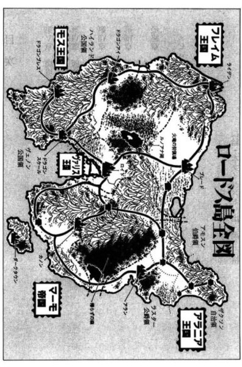

| [水野良] ロードス島戦記7 | |
| 水野良 | |
| (2015) | |
|
ロードス島戦記７ ロードスの聖騎士（下）
水野良
|
目 次
第Ⅴ章 魔境への船出
第Ⅵ章 扉は開かれて
第Ⅶ章 決戦前夜
第Ⅷ章 カノン解放
最終章 ロードスの聖騎士
エピローグ
あとがき

第Ⅴ章 魔境への船出
１
水晶球に映っているのは、炎のなかに崩れようとしている巨大な神殿であった。
天に向かって激しく噴きあがる火柱は、はかなげな夕闇の空を支えているようで、もうもうたる白煙はようやく輝きはじめた天空の星々を覆い隠そうとしているかに見える。水晶球の湾曲した空間のなかで展開されている映像は、さながら地獄であった。
ここ暗黒の島マーモから遠く離れているとはいえ、これが同じロードスの地で現実に起こっていることとは、にわかに信じられない。
しかし、燃えているのはヴァリス王国の聖都ロイドにあるファリス大神殿に他ならず、それも今まさに起こっている事実なのだ。
常人ならば瞬時にして目を背けるような凄惨な光景を、じっと見つめつづける男がいる。闇色の長衣をまとい、水晶球のなかで荒れ狂う炎とは対照的な冷たい視線を、水晶球に注いでいる。
マーモ帝国の指導者のひとり、黒の導師バグナードである。
水晶球に映しだされている光景は、この老魔術師にとって予定していた結果のひとつにすぎなかった。喜ぶほどのことでもない。勝利の美酒を味わうのは、すべてが終わってからでいい。
と、バグナードの表情がわずかに動いた。
水晶球に、ひとりの少女が映しだされたからだ。しなやかな若い黒髪が炎に照らされ、真紅に染まっている。少女はまばたきひとつせずに、燃えあがる神殿と、その周囲に重なりあう幾体もの兵士の屍を見つめていた。自分の瞳のなかに、目の前の惨状を閉じこめんとしているかのように。
「自ら望んで我が手に落ちるか、扉よ......」
唇を歪めるような微笑を浮かべながらバグナードはつぶやいた。それから、何を思ったか、老魔術師はゆっくりと背後を振り返った。
いつのまにか、そこにひとりの男が立っていた。
見知った顔ではなかった。自分が魔法の儀式をしているあいだは、いかなる理由があろうとも、部屋に入るなと厳命してある。その命令を守れぬような愚か者は、彼の弟子たちにはいないはずだ。
背の高い痩せた男だった。部屋は暗いが、男が額にはめている額冠から怪しげな光が放たれていた。サークレットには、人間の瞳を連想させるふたつの紋様があり、それが赤く輝いているのだ。その淡い光に照らされ、浮かびあがる男の顔は、まるで彫像のようで、いかなる表情も湛えてはいなかった。
男はすでに初老の域を越えている。その顔には幾筋もの深い皺が刻まれていた。古い傷跡が右の頬に斜めに走っている。
バグナードは、ようやく思い出した。
男のことではない。彼が身につけているサークレットを思い出したのだ。
彼がベルド皇帝の宮廷魔術師だったとき、目の前の男がしているのと同じサークレットを身につけたひとりの女が協力を申し出てきた。女は強力な魔術師であり、そして大地母神の神聖魔法の使い手であった。
「ひさしぶり、と言わねばならないな。灰色の魔女よ」
バグナードは、押さえた声で言った。
あの女は、皇帝ベルドにそう名乗ったのだ。灰色の魔女カーラと。
目の前にいるのは、あのときのカーラとはもちろん別人だ。年齢も合わないし、性別も異なっているのだから。
しかし、この灰色の魔女にとって肉体はただの器にすぎないことをバグナードはすでに知っていた。額のサークレットこそ、カーラの実体に他ならない。サークレットに宿っているのは、五百年以上も前に滅んだ古代王国期の魔術師である。魔法の時代に生を受けた恐るべき古代語魔法の使い手。
新王国が興って以来、この灰色の魔女はロードスの歴史の影の綴り手であった。光と闇、秩序と混沌、善と悪とを天秤にかけて、いずれの側にも傾かぬよう、闇の時代には光をもたらし、平和な時代には秩序の破壊者となる。その時代の勇者を遊戯盤の上の駒のように操って、そしてときには自ら力を使って。
天秤の針が左右いずれにも揺れるかぎり、破局が訪れることはないと信じているからだ。白でもなく黒でもなく、灰色の魔女と名乗る所以である。
「対魔法の結界は張っておいたはずだがな。いったいどこから入ってきた」
バグナードは水晶球に右手をかざすと、その手をなでるように動かした。映像がふっと切れ、水晶球はただの透明な塊に戻った。
「扉からだよ、黒の導師。邪魔をされたくなければ、扉にも気をつけるのだな」
カーラの言葉どおり、部屋の扉は開いたままになっていた。
「まあ、よい。いずれはやってくるだろうと思っておった。お互い、忙しい身だ。用があるなら、さっさとすませようではないか」
バグナードは近くに立てかけていた魔術師の杖を手に取った。
それを見たカーラも、身体に巻いた灰色のマントをゆるめて、右手を差し出した。中指に乳白色の宝石が埋めこまれた指輪がはまっている。
「おまえは、やりすぎたのだよ。黒の導師......」
カーラは、低くつぶやいた。
その言葉が合図であったように、指輪が青白い光を発しはじめる。
バグナードは、杖の先で地面に弧を描くように魔術師の杖を動かした。
「おまえが目覚めさせようとしているものは、人の手に余る。ロードスが、いやこの世界全土が破滅してしまうだろう」
カーラは右手を顔の前までゆっくりと持ちあげた。指輪の輝きが、一瞬ごとに強さを増してゆく。
「現実を見つめるのだな」
バグナードは杖をゆっくりと真横に振るい、それから杖の先で石の床を二度、叩いた。
「現実？」
「今、我が帝国を倒そうとする力の巨大さに気づかぬわけではあるまい。ベルド陛下亡きうえは、マーモは間違いなく敗れ去るだろう。今度ばかりは、カノンの地から追いだされるだけではすむまいよ。暗黒の島は炎によって焼きつくされ、浄化されることだろう」
「その現実を招いたのも、おまえではないか」
カーラの身体がゆらりと動いた。一歩、二歩と黒の導師のそばに近づいてゆく。
「いかにも、そのとおり。今のロードスの歴史を綴っているのはわたしであり、おまえではない」
「そして、おまえは失敗した」
「失敗などしておらぬわ」
バグナードは高らかに笑った。
カーラの眉がわずかに動いた。その歩みが、止まっている。
「このロードスの現状は、わたしが意図したものだ。ベルド陛下の遺志に従ってな。ベルド陛下はロードスの征服を目指していた。この暗黒の島の闇の軍勢を率いてな。同時に、自らが敗れたときには、光の軍勢によってロードスが統一されることも予見していた。戦に勝とうと敗れようと、いずれにせよロードスはひとつになる。陛下は自らの誓いを果たすことができるのだ。その陛下の望みを打ち砕いたのは、灰色の魔女よ、おまえではなかったかな？」
「............」
「それゆえ、わたしは陛下の遺志をついだのだ。マーモは敗れ、滅亡する。そして、ロードスはひとつになる。それこそが、わたしがただひとり忠誠を誓った英雄への弔いなのだ」
バグナードは、その英雄が目の前にいるとでもいうように、恭しく一礼をした。
「ならば、なにゆえ破壊の女神を目覚めさせようとする。マーモが敗れるのは必至であり、それを画策したのがおまえであるなら、もはやおまえの望みは達せられたも同然ではないか」
「ベルド陛下への供養が終わっただけだ。わたしの真なる目的は、まだ達せられていない」
バグナードは含むように笑って、ゆっくりと首を横に振った。
「なにゆえ、破壊の女神の力をわたしが求めるか、その理由をこれから教えてやろう。そうすれば、わたしと争うことが無意味だとおまえは知ることになろうよ」
「断れば？」
「ならば、ともに滅びるだけだな。灰色の魔女よ。わたしが、邪竜ナースを従え、その守護する祭器、知識の額冠を手に入れているということを忘れるな。古代王国時代の魔術の奥義は、おまえ自身の秘密も含め、すべて知っているのだぞ」
カーラは薄く笑って、開いたままの扉を指差した。
「今の肉体が滅びようとも、わたしが支配すべき肉体は、いつかこの部屋にやってこよう。永遠に滅びるのは、おまえだけだよ」
「その前に、ロードスは統一されていよう。復活したときには、もはや、おまえの力が及ばないかもしれんぞ。英雄戦争からまだ十余年。おまえのことを覚えているのは、わたしばかりではないのだからな。フレイム王カシュー、大賢者ウォート......」
「そして、竜殺しの自由騎士や、大地母神の聖女たちか。たしかに、面白くないな......」
指輸がもとの色に戻り、カーラは右手をマントのなかに戻した。
「よかろう、黒の導師。おまえの話を聞こうではないか」
「賢明な考えだ」
灰色の魔女の四つの瞳が見つめるなか、黒の導師はゆっくりと語りはじめた。
破壊の女神の力を欲する真の理由を。
黒の導師の話が進んでゆくにつれ、氷の彫像を思わせた灰色の魔女の表情が、微妙に変化していった。
そして──
数刻の後、灰色の魔女は去り、部屋には黒の導師ひとりが残されていた。
バクナードは灰色の魔女が消えていった扉を見つめながら、満足げにうなずいていた。
思惑どおりに、カーラとの契約は成立した。これで彼の計画を邪魔する者は、もはや誰もいない。
「ラルカスよ......」
闇に向かって呼びかけるようにバグナードは、かつて己れの導師であった男の名をつぶやいた。
賢者の学院の最後の院長でもあったその偉大な魔術師は、故人となってすでに久しい。だが、その男がかけた制約の呪文は、今もなおバグナードの肉体を縛めているのだ。
魔法を使うたびに、常人では耐えることのできない苦痛が、彼の全身を貫くのである。
「ラルカスよ。今こそ、わたしはあなたを越える......」
２
ロードスという名の島がある。
アレクラスト大陸の南に浮かぶ辺境の島だ。
大陸の人々はロードスのことを、呪われた島と呼んでいる。人の侵入を許さぬ魔の領域が島の各地に存在し、島全体を震撼させる激しい戦が何年も続いているがゆえに。
ここ数年ほど休戦状態が続いていたのだが、その平和の夢も、マーモ帝国のヴァリス侵攻によって破られた。ヴァリス軍により解放されて久しかった国境の街アダンが、ふたたびマーモの手に落ちたのである。
黒衣の将軍アシュラム率いるマーモ軍は、その余勢をかってヴァリス東部の平野に軍を進め、ヴァリス軍と激戦を繰り広げている。
ヴァリスの神聖騎士団は勇戦しているが、後方に妖魔どもが出没、村に掠奪をしかけたり、補給部隊を襲ったりしている。このため、前線のヴァリス軍は思うように戦えず、敗退を余儀なくされている。
同じ頃、ロードス北東部のアラニアの地でも、戦乱の炎が噴きあがっていた。
王都アランの街でアラニア国王を僭称していたラスター公爵が、ひそかに同盟を結んでいたマーモの援軍を得て、王位を争っていたノービス伯アモスンを討ち、副都ノービスを陥れたのだ。ラスター公爵は、さらに王国から独立を宣言していたアラニア北部の自治領にも軍を進め、独立運動の中心地であったザクソンの村を焼き討ちにした。
この暴挙に、今やロードス最大の王国となったフレイムも立ち上がった。傭兵王カシューは砂漠の鷹騎士団を率いて、アラニアヘの宣戦を布告、〝風と炎の砂漠〟を越えてノービスヘと進撃を開始している。
一方、ロードス南西部のモス地方の内戦は終結に向かいつつある。
竜騎士を擁する〝竜の目〟ハイランド公国が、〝竜の鱗〟ヴェノン公国を圧倒、すでに公都ドラゴンスケイルを包囲している。堅固な要塞都市のドラゴンスケイルだけに、巨人殺しの勇者として名高いハイランド公国の新王レドリックも攻めあぐんでいる。しかし、反撃に転じるだけの余力は、もはやヴェノンにはない。ハイランドのモス統一は、すでに時間の問題だといわれている。
このモスの内戦に象徴されるように、ロードス島の大戦も最終局面を迎えているように見える。小さな争いはすべて鎮まって、マーモ、アラニアの同盟と、フレイム、ヴァリスの連合というふたつの巨大な力に、ロードスは二分されている。この両者の戦いの勝者が、ロードスの次代を支配することになるのだ。
そして、決戦の日が近いことを、ロードスの人々は皆、予感していた。
夜空を焦がした灼熱の炎は、ようやく収まりつつあった。
しかし、白煙はまだ随所から立ち昇っている。
スパークの目の前には、無残に焼けただれたファリス大神殿の建物がある。白大理石の壁は煤で汚れ、天井は崩れ落ち、床の上に瓦礫となって散らばっている。
すすり泣く人々の声が、あちらこちらから聞こえてくる。
目をつぶりたくなる凄惨な光景であり、耳を覆いたくなるような悲痛な声だった。
この神殿は至高神ファリスを信じる者たちにとっては、魂のふるさとともいうべき場所である。それがマーモの私掠船によって、汚されてしまった。
それはあたかも、ロードスの正義が失墜したことの象徴のように、人々には感じられたに違いない。
おりしも、東の平原からは、マーモ帝国の騎士団が迫りつつある。
十何年か前のマーモ軍の侵攻のときには、ヴァリスの英雄王ファーンとフレイムの傭兵王カシューという勇者たちが迎え撃ち、大きな犠牲を払いながらも撃退することができた。
しかし、英雄王ファーンはすでに亡く、フレイム王カシューはマーモと同盟を結んだアラニアヘと攻め入っているので、その援軍は期待できない。
だからこそ、人々は絶望し、涙を流しつづけているのだ。
スパークは嘆き悲しむ人々をかきわけるように、神殿の奥へと向かっていった。
彼の後ろには、五人の仲間が従っている。
傭兵のギャラックとリーフ、戦神マイリーの神官戦士グリーバス、魔術師のアルド・ノーバ、そして女盗賊のライナ。
フレイムの王城から盗まれた宝物〝魂の水晶球〟を取り戻すために、スパークたちはフレイムを発った。だが、この魔法の水晶球が破壊の女神カーディスを蘇らせるための祭器であることを知ったのは、つい先刻のことである。
ふたつの鍵、ひとつの扉、かくしてカーディスは蘇らん。
古代の伝説は、このように邪神の復活を予言しているという。
ふたつの鍵のうちのひとつがフレイムの王城に保管されていた魂の水晶球であり、そして、もうひとつがこのファリス大神殿の宝物庫に安置されている〝生命の杖〟である。
私掠船のマーモ兵たちは、この生命の杖を狙って襲撃してきたのだと思われた。
邪神の復活を目論んでのことだ。
この狂気の企みを進めているのは、マーモ帝国を支配する四人の評議員のひとり、黒の導師バグナードだという。
生命の杖を守るために、ニースという名の少女が、スパークたちより先にこの神殿に向かったはずだった。
その少女こそ、邪神を復活させるためのひとつの扉なのである。邪神の最高司祭ナニールの魂を受け継ぐ、無垢なる肉体。
スパークは、ニースの安否と生命の杖の無事を確かめるために、炎上するファリス大神殿に駆けつけたのだ。
私掠船のマーモ兵はすでに港へと引き上げたらしく、戦いの響きはもはやどこからも聞こえてこない。あちらこちらに、ファリス神の神官戦士やマーモ兵の死体が見受けられたが、生き残りの神官や司祭たちの手により、すでに埋葬の準備がはじめられている。
清廉な魂は天界へと召され、汚れた魂は冥界に堕ちる。
至高神の教義によれば、生前の行いによって、死後に赴く世界は異なるという。それゆえ、厳格な戒律に従って、ファリス神の信者は毎日を送っている。そうしていれば、死後、天界に行けると信じればこそ。
死ねばどうなるのか、スパークは深く考えたことはない。信仰する神の御許へ行くのだろうか、それとも、ふたたびこの地に生を受けるのだろうか。死後はまったくの虚無だと説く教団もある。
熱心な信者とはいえないが、スパークは戦神マイリーを信仰している。
深い理由があるからではなく、戦神こそ騎士が信じるにふさわしい神だと思ったからだ。それゆえ、週に一度は礼拝に行くし、祭礼のときには相応に寄進も行っている。いちおうは、マイリーの教えに従っているのだから、たとえ武運つきて命を落とすことがあっても、〝喜びの野〟に行けるはずだ。
だが、スパークは死後の世界に期待するのではなく、今の人生を大切にしたいと思っている。悔いのないように生きたなら、死後の世界がどのようなところであろうと納得できると信ずればこそ。
この神殿で斃れた者たちが、悔いのない人生を送ったとはスパークにはとても思えない。
事故や病気で死ぬ人間がなくなることはない。だが、戦で命を落とす人間をなくすことはできるのである。戦を終わらせればよいだけのことだから。
そのために、今は戦わねばならない。矛盾した結論だと自分でも思うが、それ以外の方法をスパークは思いつかないでいた。
スパークたちが神殿の建物の前にたどりついたとき、開かれた扉から人影が姿を現わした。巡礼用の長衣だったので、すぐにニースと分かった。
彼女の無事な姿を見て、スパークはほっとする気持ちになった。彼女を出迎えるように、両手を広げながら、彼女に声をかけた。
「無事でしたか」
「わたくしは......。ですが、生命の杖が」
スパークの姿を認めたとき、ニースも一瞬だけだが笑顔を見せた。だが、彼の問いに答えるときには、その笑顔は冷たく凍りついていた。そして、唇を噛むように頭を振る。
「盗まれたのですか！ ふたつめの鍵も」
スパークは愕然となった。
「わたしが、この神殿に駆けつけたときには、ちょうど賊たちが引き上げてゆくところでした。追いかけようとしたのですが、敵にはばまれてしまって......」
ニースは神官のひとりに宝物庫の場所を聞きだし、そちらへ向かった。しかし、ニースがそこに見たものは、倒れている守衛と燃え落ちようとする宝物庫の光景だったという。
「人を殺して物を奪うなんて、最低の盗み方だわ」
ライナが憤慨したようにつぶやいた。
「私掠船には盗賊の掟なんか通用しねえさ。もともと、奴らは海賊なんだからよ」
ギャラックの言い方は、ライナを挑発するようでもあり、慰めているようでもあった。
ライナは形のよい唇をすこし尖らせ、不満をあらわにした。
「これからどうするのですか？」
アルド・ノーバがニースのそばによって、声を震わせながら言った。
「もちろん、ふたつの鍵を取り戻しにまいります。そして、黒の導師と決着を......」
「それは危険だ」
スパークがあわてて首を振った。
ニースが怪訝そうな表情で、アルド・ノーバの顔を見つめた。
アルド・ノーバは、ニースの旅の目的を彼らに話したことを伝えた。
「あなたは邪神復活の扉なんだ。あなたまで、黒の導師の手に落ちれば、この世に邪神が復活し、世界が破滅してしまう」
「そうだよ、どこか安全なところに隠れていたほうがいいよ」
ライナもスパークに同調するように言った。
「黒の導師は恐るべき魔術師です。どこに隠れていようと、無駄でしょう」
「だからといって、わざわざ敵地に乗り込むことはない。しばらく、隠れていれば、フレイムとヴァリスが、マーモを滅ぼすんだから」
「それを待つ余裕はありません。それにもう決めたことなのですから。自らの手で、呪われた運命に決着をつけると......」
ニースの物言いは静かであったが、揺るぎない意志を感じさせた。
「分かりました。なら、オレも一緒に行きます」
「スパーク！」
驚きの声をあげたのは、ギャラックだった。
ニースはわずかに目を開いて、スパークを見つめただけだ。
「そいつは危険すぎる。まるで自殺しに行くようなもんだ。娘さんも、考えなおしたほうがいい。これはあんただけの問題じゃない。ロードス島、いやこの世界のすべての住人の運命がかかっているんだ」
「分かっております。だからこそ、逃げるわけにはいかないのです。それに、逃げても結果は同じでしょう。夢のなかにも入れるぐらいです。つい先ほども、黒の導師の気配を感じました。今は感じませんが、まだどこからか見ているのかも......」
「そんな馬鹿な」
ギャラックは首を横に振ったが、本心から否定することはできなかった。魔法の力は、戦士である彼には計り知れないものだった。
リーフも気味悪そうに、周囲をきょろきょろと見回している。
「彼女の決心は変わらないだろう」
スパークは渋い顔をして黙りこんだギャラックに声をかけた。
「だったら、オレたちにできることは彼女を守ることだけじゃないか。だから、オレはついてゆく。魂の水晶球と生命の杖を取り戻し、黒の導師を倒してみせる」
「本気で言ってるんですかい」
「もちろん、本気さ」
「本気なら、かまいませんがね。いったい、どうやるんでさ？」
「どうやるって......」
スパークは言葉を詰まらせた。実際、どうやるかなど分かるはずがない。
「なんとかするさ。まずは、マーモに潜入することが大事だろう。そして、相手の隙をうかがう」
「みごとな作戦ですね」
ギャラックは皮肉を言ったが、その顔はすでにあきらめている感じだった。
「申し出はとてもうれしいのですが......」
スパークとギャラックの話が終わったとみて、遠慮がちにニースが声をかけた。
スパークは彼女が何を言おうとしているのか分かっていた。だから、
「断わられても、オレはついてゆきますよ」
と、先手を打って言った。
「ですが......」
「ニース様、スパークはあなたの力になろうと言ってるのです。その気持ちはわたしも同じです。どうか、承知してください。わたしたちは勇者でもなく、賢者でもありません。それでも、何かの力にはなれるはずです。スレイン師が成し遂げた数々の偉業は、自由騎士パーンをはじめ、仲間たちの助けがあればこそです。そして、自由騎士パーンの名声も、スレイン師の協力なくしてはありえなかったでしょう。ひとりで立ち向かうには困難な敵も、皆で助けあえば容易に打ち破れるかもしれません。スパークは、邪神復活の企みを知ってなお、じっとしていられるような人間ではないのです」
「......分かりました」
ニースはこくりとうなずくと、スパークたちひとりひとりに礼を述べる。
そのとき、ニースは神官王エトの言葉を思い出していた。聖女たらんとするあまり、人としての心を失っていないかと、エト王は指摘した。
そうかもしれない、とニースは思う。
自らに課せられた運命の大きさを意識するあまり、自分ひとりで立ち向かわねばならないと決めつけていたのだ。だれかに共有してもらえるような運命ではないと。
素直になれば、やはり、ひとりで戦うのは心細い。さっき、スパークの顔を見たとき、心の底から安堵を覚えた。
そのとき、背後で歓声のようなものがあがり、ニースも、スパークも、何事かと後ろを振り返った。
歓声の理由はすぐに分かった。
神官王エトが十騎あまりの近衛騎士を従えて、ファリス大神殿の正門に姿を現わしたのだ。歓声は、それに気づいた人々から湧きあがったものだ。
スパークたちは、急ぎ足でエト王のそばに寄ってゆく。
エトも、スパークたちの姿に気づいたようだ。門を潜ったところで下馬すると、彼らの方に向かってくる。
スパークは恭しく礼をして、エト王を出迎えた。
「間に合わなかったようですね」
彼らの表情から察したのだろう。事情を説明する前に、エトは自らそう言った。
ニースが肩を落としながら、力のない声で、はいと答えた。
「そうですか......」
エトはさすがに動じた様子こそなかったが、その表情は厳しかった。
「では、あなたは旅立つのですね。小さなニース」
「はい、そのつもりでおります」
「止めても無駄でしょう。せめて、護衛をつけようと思うのですが」
「護衛なら......」
スパークがあわてて言うと、まるでそれを予期していたかのように、エトはにっこりと微笑んだ。
「あなたたちが同行されるのならけっこうです。大人数で敵地に潜入するのはかえって危険ですからね。それに、この試練は信頼できる仲間でなければ、乗り越えられないでしょう」
そして、エトはこれからすぐに発つのか、とニースに尋ねた。
「はい、そのつもりでおります。東へと向かい、南の街道を通ってカノンに向かいます」
「東の平原には、マーモ軍がひしめいています。船に乗って、お行きなさい。ヴァリスの軍船を出しましょう。マーモの私掠船を追うために、今、急ぎで出航準備をさせています」
「お心遣い感謝します」
ニースは素直に礼を言った。
それに答えるように、エトはもう一度、微笑んだ。
「さあ、お行きなさい。光の神々の加護があらんことを」
スパークたちは慈悲深き神官王に深く一礼すると、港に向かって走りだした。
３
馬の蹄が、大地を揺るがす。
土煙が夏のむら雲のごとく舞いあがる。
雷鳴かと思えるような人々の叫びが、響いている。
ここは、ノービスの街の西に広がる平原。砂漠を越えてきたカシューたちは、フレイム軍を迎え撃たんと出撃してきたアラニア軍に遭遇したのだ。
たちまち、戦いがはじまった。
数千もの騎士たちが繰り広げる激しい戦いである。フレイム軍の褐色の鎧の騎士と、アラニア軍の銀色の鎧の騎士が正面からぶつかりあい、刃をまじえている。
優勢に戦を進めているのは、銀色の騎士だった。
「どういうことだ！」
カシューは激しい怒りを見せて、近くにいた近衛隊長のネイハムに怒鳴りつけた。
「も、申し訳ありません」
「謝ってどうする？ おまえの責任ではあるまい」
カシューも、完全武装である。戦闘用の板金鎧身を包んでおり、頭には白布をかぶり、略式の王冠でそれを留めている。腰の長 剣は差したまま、小高い丘に陣取って、戦況をじっと見つめていたのだ。
アラニアの騎士団は思った以上に、頑強であった。
十年以上も続いた王位継承戦争により、アラニアの騎士たちは戦慣れしていた。
一方、平和の続いていたフレイムの騎士たちには、これが初陣という者が多い。
経験を積ませるぐらいの気持ちで、三軍ある砂漠の鷹騎士団のうち、比較的若い騎士たちで編制されたブランド隊を第一線に配したのが失敗だった。
若い騎士隊長たちは功を焦るあまり、がむしゃらに突撃し、敵の弓兵と重装歩兵が構えた歩兵槍の餌食にされてしまったのだ。態勢を立て直すため退こうとするところへ、敵の騎士団が突出してきて、大きく崩されてしまった。
後方に控えていた風の部族の戦士を中核とするフォザルの軍がすばやく救援に入ったので、総崩れとはならなかったが、かなりの痛手を受けたに違いない。
その様子を見て、カシューは激昂したのだ。
「このままでは敵を勢いづかせるだけだ。傭兵隊を突出している敵に向けろ、我々は後方に控えている敵の本隊を狙う」
「御出馬ですか？」
カシューの後ろに控えていた傭兵隊長のシャダムが、ゆっくりと馬を進めてきた。
味方の苦戦を見ても、彼の表情はまるで変わらない。
「敵の将軍の首は、オレが取ってやる。おまえは調子づいている敵に、フレイム傭兵隊の恐ろしさを教えてやれ！」
「そういたしましょう」
シャダムはわずかにうなずくと、馬首を巡らせて丘の麓で待機している傭兵隊の猛者たちのもとへ駆けていった。
そのあいだに、近衛隊の騎士たちは、兜の面頬を下ろして、突撃の準備に移っている。
カシューは長剣を引き抜くと、それを頭上に高々と差し上げた。強い魔力を帯びた剣が、青白い輝きを放つ。
「突撃！」
そして、朗々たる声で号令した。
「おうっ！」
雄々しく叫び、騎士たちが丘の斜面を駆け降りる。
すぐにカシューは先頭に出た。馬術も巧みであれば、乗っている馬もフレイム一の駿馬である。左手で手綱を握り、右手に長剣を構えて、全力で馬を走らせる。
両軍の主力が激戦を繰り広げているのを横目に、しゃにむに敵の本隊を目指した。
もちろん、この突撃に敵が気づかぬはずはない。
弓兵たちが、牽制するように矢を放ってくる。
「風の王の加護がある」
カシューは叫んだ。
遠くから射かけられた矢では、金属鎧を貫きとおせるものではない。馬を射倒されて、何名かの騎士が落伍したものの、ほとんどの騎士たちが無事に敵の本隊へと迫った。もちろん、先頭はまだカシューである。
待ち構えていたように、重装歩兵たちが前に進みでて、身長の三倍はあろうかというパイクをずらりと横に並べた。石突きをしっかりと地面に押しつけて、鋭利な穂先をカシューたちに向ける。
カシューはまるで気にした様子もなく、走る速度も落とさなかった。
歩兵が前に出たので、弓兵たちは矢を射れない。
「そのほうがやりやすいわ！」
カシューは叫び、パイクの列に向かって突っ込んでゆく。そして、その穂先が触れるか触れないかというところで、大きく馬を跳躍させた。
敵兵はあわててパイクを上空へ向けようとしたが、長すぎる柄が邪魔をして、とても間に合わなかった。カシューは愛馬をパイクの柄を踏みつけるように着地させ、そのまま重装歩兵たちの列に躍りこんでいった。
そして、自らの名を名乗りながら、自慢の長剣で重装歩兵たちをなぎ払った。
激しい音とともに、彼の長剣から魔法の輝きがほとばしる。この魔法の剣は、どれほど頑丈な鎧であろうと、まるで羊皮紙のように易々と切り裂いてしまうのだ。
剣が走り抜けたあとには、血しぶきを噴きあげながら倒れてゆくアラニアの兵士たちの姿があった。フレイム王カシューの名とともに、その圧倒的なまでの強さは、周囲のアラニア兵を完全に浮き足だたせていた。
カシューは休むことなく剣を振るいつづけた。そして、彼の切り開いたこの突破口に、近衛隊の騎士たちが殺到し、混乱の輪をさらに広げていった。
「雑魚になどかまうな！ 狙うは敵の将軍の首ひとつ」
カシューの声は、戦場の喧噪のなかでも不思議なくらいよく通る。
敵の本隊を縦横に走り抜けている騎士たちから、承知の声があがる。
おそらく、敵の将軍にも、カシューの声が届いたに違いない。
本隊の後方に位置していた敵の騎士たちが、あわただしく動きはじめた。迎え撃とうとしているのかと思ったのも束の間、彼らは馬首を巡らすと、恐慌をきたしている重装歩兵や弓兵たちを見捨てて、後退をはじめたのだ。
「逃げる気なのか？」
カシューはいぶかるように眉をひそめながら、騎士たちの動きを追いかけた。
罠かもしれないと疑ったのだが、どうやらそうではないらしい。きらびやかな鎧に身を固めたひとりの騎士を先頭に、アラニアの騎士たちはノービスの街を目指して落ちてゆく。
おそらく先頭の騎士がアラニアの将軍なのだ。
周囲の重装歩兵や弓兵たちもちりぢりになって敗走をはじめる。
「深追いはするな、こちらは人数が少ないのだからな」
カシューは追撃しようとする近衛隊の騎士たちを制止し、もとの陣地へ引き上げるように命令した。
戦いは、たったこれだけで決着がついた。
初戦で後れをとったのが、嘘のような大勝だった。将軍が戦場から逃亡したことを知って、善戦していた敵の主力も敗走をはじめたのだ。
傭兵隊や騎士団はこれを追撃し、大きな戦果をあげることができた。
生き残った敵兵はノービスヘと逃げ込み、門を硬く閉ざして持久戦の構えに入った。
フレイム軍はノービスの西に陣を張って、これに対抗する。
日が沈む頃には、フレイムの後続部隊も続々と到着してきた。戦の神マイリーの神官戦士団や歩兵、弓兵、攻城兵器も到着し、いつでも街を攻める態勢が整いつつあった。
フレイム王カシューの姿は、フレイム軍の陣地の中央に設けられた、ひときわ大きな天幕のなかにあった。同じ天幕には傭兵隊長のシャダムをはじめ、砂漠の鷹騎士団の三将軍のうちのふたり、フォザルとゲナール、近衛隊長のネイハム、マイリー神殿の侍祭シャリーらが控えていた。
また、ノービス伯アモスンの子であり、アラニア王国の正統の王を主張しているロベスの姿もあった。
彼はまだ二十そこそこの若者ながら、さすがに伝統ある王国の貴族だけにフレイムの重鎮たちに混じって、いささかも動じた様子がない。
カシューの見たところでは、父のアモスンよりも数段、優れた人物である。
父の死を知るとノービスを捨てフレイムに亡命してきたあたり、機を見る目を持っているのは間違いない。フレイムの宮廷には、彼のことを臆病者だと嘲る者もいる。しかし、そのままノービスの街にたてこもっていれば、勢いを得たラスター公爵の軍勢の前にひとたまりもなく滅ぼされただろう。
ラスターの狙いが自分以外の王位継承権者の抹殺にある以上、彼の逃亡は国王を僭称するラスターにとって、大きな痛手なのである。
しかも、カシューに謁見し、自分自身を大義名分にラスター公爵を討つように提案したのも、他ならぬ彼であった。アラニアがフレイムに併合される危険を伴った大きな賭けではあるが、当のフレイム国王カシューに領土的な野心はないのだから、彼の賭けは成功しているといえる。
おそらく、アラニアを自らの手に取り戻したあとは、混乱した王国をまとめて西のフレイムに対抗する力を持とうと画策しているに違いない。また、その自信があるからこそ、危険な賭けにも出たのだろう。
カシューの目から見ればやや自信過剰にも映るが、それは若さのゆえであり年月が過ぎれば解決する問題であるかもしれない。カシューは、自由騎士パーンにアラニアには傀儡の王を立てぬと誓ったのだから、この若者の気概はむしろ歓迎すべきである。もちろん、この若者が将来、フレイムに戦を挑んでくるようなことがあっても、カシューは退けられる自信がある。
このような経緯から、今度のアラニア攻めにおいては、この新しいアラニア王が大将であり、フレイムはこの正統のアラニア王を援助しているにすぎないのだ。もっとも、彼に従うアラニアの亡命騎士は、百人にも満たぬ小軍団でしかない。万が一のことを考えて、カシューはこの正統のアラニア騎士団は、前線に出さぬと決めている。
そのカシューは、今、機嫌の悪さを隠そうともせず、天幕のなかを檻に入れられた獣のように行ったり来たりしていた。
「使者はまだ帰ってこんのか？」
そして、思い出したように、天幕の入口を警備している近衛隊の騎士に尋ねる。
そのたびに、近衛騎士は天幕の外に走りでて様子を確かめるが、まだ使者たちの姿は見えない、と報告することになる。
「遅いではないか！」
報告のたびに、カシューはいらだった声をあげた。
「もうすこし落ち着いたら、いかがですか」
皆の無言の期待を感じたのだろう。傭兵隊長のシャダムが、カシューを諌めるように言った。
「落ち着けだと」カシューは、いつものように無表情な風の部族の族長を睨みつけた。
「使者を出してから、どれほどの時間がすぎていると思う。敵に捕らわれているかもしれんのだぞ」
無論、この場にいる全員がそのことを知っていた。
使者を出したのは、日が沈む前である。今は夜も更け、満月が天頂へと昇りつめようという時刻なのだ。
「使者が帰ってこないのは、交渉が続いていることの証です。待つより他に、しかたないのではありませんかな」
カシューの怒声を、シャダムは柔らかく受け流した。
使者に出向いたのは、騎士団の一隊を率いる将軍のルーイェと宮廷魔術師のスレインである。騎士と魔術師と性格は違うが、いずれも外交の能力に長けた人物だ。
そして、ルーイェの率いているのは重武装の騎士隊であり、戦車や攻城兵器なども加わっている。市街戦や攻城戦のときには主力ともいえる。今度のアラニア戦では切り札ともいえる部隊である。
そのルーイェ隊はノービスの街を半円に包囲するように配置され、いつでもノービスを攻める態勢が整っている。だが、それはカシューにとって望むところではない。
街を攻めれば一般の人にも被害が出るし、時間もかかる。
邪神復活の企みを知る者として、カシューにとっての敵はラスターの軍隊ではない。マーモの黒の導師バグナードであり、さらにいえば時間であった。だからこそ、降伏勧告の使者を派遣したのだ。
敵にとって、この申し出を断る理由はないはずだ。このまま、ノービスの街に籠っていても、圧倒的な兵力のフレイム軍に勝てるはずがないのだから。にもかかわらず、交渉が長引いているということが腹立たしいのだ。昼間の戦いで、あれほどの醜態をさらした将軍である。戦う意志が強いはずはないのだ。
そのとき、護衛の近衛騎士が天幕から首を出して、外の様子を確かめた。
「なにごとだ？」
カシューはむっつりとした声で問いかけた。
「どうやら、戻られた様子です」
直立不動の姿勢に戻って答えた若い騎士の顔には、あきらかに安堵の色が浮かんでいた。
「そうか！」
カシューは満足そうにうなずくと、すぐに通すように、近衛の騎士に命じた。
「ただいま戻りました」
聞き慣れた声がして、宮廷魔術師のスレインが入ってきた。だが、もうひとりのルーイェの姿は見えなかった。
「ルーイェはどうした？」
怪訝に思ってカシューはスレインに問う。
「部隊の配置を変更するとのことで、御自分の隊に戻られております」
「また、そのような独断を......」
フォザルが顔をしかめて、つぶやいた。
前のローラン侯ルーイェは、もともとは独立した都市国家の太守であっただけに、カシューに対しても、忠誠を誓った騎士ではなく同盟者のように接するときがある。そのため、フレイムの礎を作った風の部族の長老たちには、この騎士団の将軍を傲慢と見る者もいる。
カシューの顔もまた不機嫌になったが、その理由はルーイェの勝手な行動に対してではない。
「ルーイェ侯が部隊の配置を変えようとしているのでは、交渉の結果は知れているな」
カシューは、ふたたび不機嫌な顔になり、スレインに交渉の結果の報告を求めた。
「申し訳ありません。いろいろと努力してみたのですが、相手があの将軍ではまともな交渉はできそうにもありません」
そして、スレインは交渉の経過をかいつまんで報告した。
ラスター公爵よりノービス伯に任ぜられたアラニア鉄網騎士団の将軍ジェルジュは、とにかく臆病で、疑い深い性格の人物であるらしい。
街を捨てて逃げるのが恐ろしいようなのだ。フレイムの追撃を恐れてのことであろう。それならば、街に籠っているほうが安全だと思いこんでいるに違いない。子供が雷を恐れてベッドに潜りこむのと大差がないのである。
昼間の敗戦が自分の責任であることを感じており、なおかつそのことを認めたくないので、ノービスの街をフレイムに明け渡すわけにはいかないということもあろう。臆病で猜疑心の強い男にかぎって、虚栄心もまた大きいものである。
「強硬に迫ったり、理をもって説いたりしてみたのですが、まったく無駄に終わりました。ノービスを渡すなら、フレイム軍が囲みを解き、フレイムにいったん撤兵するのが条件だと繰り返すばかりで......」
もちろん、それを実行したとて、ノービスから退去するはずがない。
「救いようのない愚か者めが！ 己れの言葉が何を意味しているのかも分からぬのか」
カシューは拳を振りあげて、怒りをあらわにした。もし、目の前に机か何かがあったら、その拳を叩きつけたことだろう。
「昼間は敵の愚かさのゆえに助かりましたが、今度はそれが仇となったようですな」
そう言ったのは、シャダムである。彼の話しぶりはいつも、物事を物見櫓から眺めているような感じだった。
「やむをえぬ、ルーイェ侯に攻撃の命令を下せ。侯爵のことだ、その準備はすでに終えていよう」
攻城兵器を半円に配置し街を囲んでいたのは、敵に威圧感を与え、交渉を有利に運ぶためである。街や城を攻めるのであれば、戦力を一点に集中して打ち破るのが、彼の得意とする戦法だった。交渉が決裂したと同時に、ルーイェは配下の部隊をノービスの街を攻撃するための隊形に移させたのだろう。
「明日の夜明けとともに攻撃に移る。それまで、兵たちにはゆっくり休むようにいえ。ただし、見張りは怠るな。そして、今夜、見張りをした者は、明日の戦いには参加させぬよう気をつけろ。ロベス王にも、御承知ください」
亡父アモスンより、アラニア王の地位を継承している若者は、表情ひとつ変えずにうなずいた。
それさえ、カシューにはいまいましく思えた。形ばかりでも反対を唱えてもよいはずである。死んでゆくのは、かつての己れの領民であるノービスの市民なのだから。
カシューの命令を受けて、騎士団の将軍たちは自分の隊に戻ってゆく。近衛騎士のひとりに命じてルーイェにも同様の命令を伝えさせた。
天幕に残ったのは、シャダムとスレインだけになった。
入口を守る近衛の騎士も、ひとりは伝令に出し、もうひとりは下がらせる。
「これから先も同じなら、手間がかかるな」
カシューは丸椅子に腰を下ろし、銀製の杯に酒を注いだ。
「まったくです。しかし、本当によろしいのですか？街を攻めるとなれば、人がたくさん死にます。敵も味方も。負けはしないでしょうが、後味の悪い勝利になりますよ」
スレインの表情は暗く、苦悩しているようにも見えた。彼の問いはおそらく自分自身にも向けられたものだ、とカシューには分かっていた。
「かまわぬ」
カシューは断固とした調子で答えた。
後味の悪さを否定した答ではないことに、スレインは救いを求めるしかなかった。
カシューは、正義の名のもとに戦を行おうとしているのではない。自らの行いが最上の手段ではないことを知り、それ以外の手段を見出せないことを悔しく思いながら、それでもなお実行するのである。また、そうせずにはいられない自分を知っていればこそ、愚かな敵の将軍に責任を転嫁することなく、罪もない人々が死んでゆくことを自らの決断の結果だと認めようとしているのだ。
「その手を血で染めぬ者が、英雄と呼ばれたことはありませんからな」
いつになく静かな声で、シャダムは言った。
そして、心のなかでは人の上に立つ人間は、民の傷みを知らないほうがよいかもしれぬ、とひそかに考えていた。
カシューの機嫌は、この戦いが終わるまでのあいだ、おそらく、よくなることはないだろう。
４
ブランシュの村がカノン自由軍によって解放されたのは、もう二年も前のことになる。
この村に派遣されていた領主を倒し、村人たちを〝帰らずの森〟経由でフレイムヘと逃亡させたのだ。ブランシュの村は無人の村となり、いつしかマーモの支配者たちから忘れ去られた。
それを確かめてから、カノン自由軍の戦士たちはこの村に入ったのである。そして、この村を拠点として、カノン解放のための戦いを続けている。
この村のような隠れ家は、今や、カノンの国内にいくつもあった。
もとは山賊たちの根城であった洞窟や、カノンの近郊の森にひそかに設けられた砦。また、王都カノンや港街ルードにも隠れ家を確保していて、信頼できる仲間たちがマーモの動きを監視している。
カノン自由軍の仲間は、すでに五百人を超えている。また、自由軍の活動には直接、参加していなくても、ひそかに協力してくれる人々も多くなった。
しかしながら、人数が増え、その活動が大掛かりになるにつれ、マーモ軍の追及も厳しくなった。
まして、現在、カノンを治めているのは、あの黒衣の将軍アシュラムである。
彼の統治は厳格ではあったが、公平であった。法や規則を定め、これに反する者は階級のいかんを問わず厳罰に処せられた。
マーモの支配者たちですら例外ではないのである。
カノン自由軍は、カノンを解放せんと人々に訴え、マーモの支配者と対決しているが、それを疎んじる空気さえ生まれはじめている。そんなカノンの民衆の心を見抜いたかのように、密告が奨励され、多額の賞金が自由軍の戦士たちの首にかけられた。
カノン自由軍とマーモ軍の水面下の戦いは、年を追うごとに激しくなっていた。そして、この戦いは、どちらかといえばマーモ軍が優勢に進めていた。
カノン自由軍の拠点のいくつかが襲撃され、多くの仲間が殺された。密告されて、マーモ軍に捕まえられた仲間も少なくない。
だが、最近になって大きな転機がやってきた。
砂漠の王国フレイムの強大化と、神聖王国ヴァリスの国力の回復を危険と思ったものか、マーモ軍が先制攻撃を加えたのである。
兄王を殺して王位を奪ったアランのラスター公爵に援助の手をさしのべ、十余年にわたって繰り広げられたアラニアの内戦をラスターの勝利に導いた。ラスターと対立していた王位継承者のアモスン伯爵は戦死し、拠点であったアラニア第二の都市ノービスも、ラスターの手に落ちた。
時を同じくして、マーモの暗黒騎士団はカノン国境を越え、ヴァリス領へと攻め入ったのである。たちまちのうちに国境の街アダンを占領し、マーモ軍は聖都ロイドへと向かって進撃を続けている。
開戦当初、マーモの妖魔たちに後方を攪乱され、後れをとっていたヴァリス騎士団だったが、マーモ軍がロイドに迫るにつれ頑強に抵抗している。マーモ軍を率いる黒衣の将軍も、さすがに攻めあぐねたのか、戦線は膠着しつつある。
カノン国内に残るマーモ軍は少数で、自由軍が攻勢に転じるには絶好の機会が訪れたのである。
周囲の巡回から、パーンとディードリットがブランシュの村に帰ってきたとき、村は異様な興奮に包まれていた。
襲撃でもあったのか、と疑ったほどである。
自由軍の仲間たちは誰もが顔を紅潮させていたが、それは喜びの興奮であるようだった。
よく聞くと、あちらこちらから歓声のようなものが聞こえてくる。
「いったい、何があったんだ」
パーンはディードリットに怪訝そうな顔を向けた。
「さあね。レオナー王に聞けば分かるでしょ」
「それも、そうだな」
パーンはかるくうなずくと、レオナーの住む館ヘと向かった。
レオナーの館は、数年前までマーモの領主が使っていたものだ。ブランシュの村に派遣されてきた領主が、村人たちに命じて建てさせた館である。家が五十戸もないような小さな山村には、不釣り合いな大きさである。この館を造るだけでも、この村の人々がいかに過酷な負担を課せられたか知れようというものだ。
だが、そのマーモの領主は自由軍に討たれ、村人を苦しめた報いを受けた。
そして、現在の主人であるレオナーは館にあった。玄関の扉を開けて入ってきたパーンとディードリットを笑顔で出迎えた。
「よい知らせがあったみたいですね。村がずいぶん騒がしかったですよ」
パーンは肩からマントをはずしながら、レオナーにその理由を尋ねた。
「フレイム軍がノービスを陥し、王都アランヘと肉迫しているのだそうだ。ザクソンも義勇軍の手により奪還されたらしい」
「本当ですか？」
「間違いない。念のため、アラニアヘは人を派遣しておいたがな」
レオナーは、パーンとディードリットのふたりに椅子を勧め、自らも椅子に腰を下ろした。
「まったく、カシューという国王は炎のような男だな。あの堅固なノービスの街を、たった三日の包囲戦で陥落させたらしい」
それを聞いて、パーンの表情がわずかに曇った。
「街を攻め落としたのですか？」
「敵の将軍が、街にたてこもったのだから、やむをえまい。わずかなあいだに、二度も攻め落とされたノービスの住人たちには大変だろうがな」
「罪もない人たちが、たくさん命を落としたのでしょうね」
そう言って、ディードリットは顔を伏せた。
「おそらくな。だが、それが戦というものだ。肝心なのは、一刻も早く戦いを終わらせることだ。そうすれば、戦に泣く者はいなくなる」
レオナーの言うとおりだろう、とパーンは思った。
カシューが戦っている相手はアラニア軍ではなく、時間であり、黒の導師の企む邪神復活の陰謀なのだから。
しかし、カシューの胸中を思いやると、パーンにはつらかった。
王なればこそ非情な決定を下さねばならぬときがある。自分はそれがいやで、アラニア王にならないか、とのカシューの誘いを断ったようなものだ。
「オレは卑怯なのかもな......」
パーンはつぶやいた。他人に甘えて、自分の思いどおりに生きてきた。
「後悔しているの？」
ディードリットが、そっと言葉をかけてくる。
「いや、ここまできたからには、自分の生き方を貫くしかないよ。ただ、カシュー王がオレに望んでいたことも分かるからな」
「ここで、パーンに退いてもらうわけにはいかないな」
レオナーはわずかに白い歯を見せたが、すぐに真顔に戻った。
「ルードの解放を実行するのですか？」
その表情の変化を見取って、パーンが身を乗り出した。
「そうするつもりだ」
そう答えたレオナーの目には、不退転の決意がみなぎっていた。
ルードは、暗黒の島マーモにもっとも近い港街である。晴れた日に海を望むと、はるか沖に浮かぶマーモ島の姿が目に入る。
カノン王国第二の都市であり、古くから貿易港として栄えてきた。マーモの玄関口ともいえる街だけに、頑丈な城壁に囲まれた城塞都市でもある。もちろん、街を守るために、強力な海軍と騎士たちとが駐留していた。マーモ軍の奇襲によって王城シャイニング・ヒルが陥落し、カノンの街が占領されたときも、ルードの騎士団は街にたてこもって、しばらくのあいだ抵抗をつづけた。
しかし、国王の死を知らされ、どこからの救援も期待できないとあれば、戦意を維持することは難しく、やがて街の門を開いてマーモに降った。ルードの騎士団は解体され、ルード侯をはじめとして上級騎士たちの何人かは処刑されたが、一般の騎士たちは騎士資格を剥奪されただけで許された。
騎士たちのうち何人かは国外に脱出した。支配者の迫害により、命を落とした者もいることだろう。だが、屈辱に耐えて、生き残った者も少なくない。彼らの打倒マーモの意志は強く、カノン王国の正統の王位継承者であるレオナーの帰還とカノン自由軍が結成されたことを知ると仲間に加わってくれたり、仲間にならずとも協力してくれたりしている。
つまり、ルードの街は自由軍の協力者がもっとも多い街なのである。
それだけに、ルードの街の解放をレオナーは決心したのだ。そして、ルードを押さえれば、マーモ軍の退路を断つことにもなる。前線のマーモ軍は恐慌をきたし、戦はフレイムとヴァリスにとって有利に運ぶだろう。
「ルードを取り戻せば、我々は名実ともにカノンの騎士団だ。仲間もさらに増えるだろう。もちろん、マーモにとっては生命線だからな。奴らは死に物狂いで攻めてくるだろう。だが、守らねばならぬ。十日も保てば、この戦は我らの勝ちだ」
「時期を誤らないことが大切ですね」
「もちろんだ。フレイム、ヴァリスの援軍が遅れれば、我々は全滅するしかない」
自由軍の勢力は、決して大きくはない。カノン領内に居残っているマーモ軍と比べてさえ、半分にも満たないだろう。
ルードを取り戻せるかどうかも、微妙なところなのである。住人の協力がなければルードは奪回できないだろう、とパーンはひそかに思った。
だが、レオナー王の戦う姿を見れば、民衆はきっと立ち上がってくれるはずだ、とパーンは信じている。
「くれぐれも、この蜂起を敵に悟られないように気をつけなければ」
「それには、ひとつ考えがある」
レオナーは自信の笑みを浮かべた。
「ルードの蜂起の前に、マーモ軍の補給隊を狙って襲撃を行う。マーモ軍はあわてるだろう。前線のマーモ軍とて、そうそう現地調達ばかりしてられないからな」
「敵から学べということね」
ディードリットが、くすりと笑った。マーモ軍は同様のことを妖魔たちに命じて、行ったのだ。
「妖魔どもと一緒にされるのは癪だけど......」
「派手にやらねばなりませんね。我々の真の狙いが、あくまで補給隊の襲撃にあると思わせなければ」
パーンは我知らず、拳を握りしめていた。
「危険だがな。同時に、ルード奪回のための準備も進めなければならない。しばらくは、寝る暇もないほど忙しくなるな」
「でしょうね」
パーンはにっこりと笑い、椅子から立ち上がった。
「レオナー王はルードヘの工作を進めてください。わたしはマーモ軍をあわてさせてやりますよ」
「頼んだぞ」
レオナーは力強くパーンにうなずきかけた。
パーンがすぐに出ようとしていることは、長年、彼を見てきたレオナーには分かっていた。
もちろん、ディードリットはレオナーよりもずっと長くパーンと一緒にいる。彼の考えは手に取るように分かったし、だからこそ、そっとため息をついた。
こればかりは、若い頃とすこしも変わっていない。彼は、思いついたことはすぐに行動し、決して後ろを振り返ることはないのだ。
第Ⅵ章 扉は開かれて
１
夜明け前の紫色の空の下でも、浜辺の砂の白さは際立っていた。
砂浜はなだらかに傾斜しながら陸を駆けあがり、海岸と平行に走っている細い街道まで続いている。この街道を東に進めば港街ルードに至り、西に向かえば神聖王国ヴァリスヘと戻ることができる。街道の向こう側には、カノン王国が誇る森と山野があった。今はまだ影絵のようにしか見えないが、陽が昇ればおそらく輝くような緑色に包まれるのだろう。
スパークたちは街道に立ち、自分たちを岸まで運んでくれた小舟と、沖に浮かぶヴァリスの軍船に手を振っていた。
小舟の漕ぎ手たちもそれに応えて手を振っている。軍船からは、たいまつの明かりで合図が送られてきていた。
ファリス大神殿がマーモの私掠船に襲われ、邪神復活の祭器〝生命の杖〟が奪い去られた。
あの襲撃のあと、ヴァリスの神官王エトは、すぐに軍船を出し私掠船を追跡する決定を下した。そして、祭器を取り戻す決意を固めたニースたちを乗船させてくれたのである。
私掠船は三隻ほどの船団だった。大神殿襲撃のために、上陸していた水兵たちを収容すると、三隻は全速力で逃げはじめた。
もちろん、ヴァリスは海軍の有するすべての軍船を出して、これを追跡した。
しかし、マーモの私掠船のほうが船足は早く、追いつくことはできなかったのである。
それでも、スパークたちを乗せたヴァリスの軍船はカノンまで航海をつづけ、小舟を出して彼ら七人を上陸させてくれたのである。
上陸用の小舟を収容すると、ヴァリスの軍船は四角い帆をあげて、ヴァリスヘ向けて帰りの航海をはじめた。
スパークたちは周囲が明るくなるのも忘れて、軍船を見送った。
船が去ってゆくと、取り残されたという実感がして、心細さを覚える。いかに景色が美しくとも、ここはマーモの支配する地であり、どのような危険が待ち受けているか分からないのだ。
「そろそろ、出発したほうがいいんじゃない」
夜明けの最初の光が射したとき、ライナが不安そうな声を出した。
「そうだな。どこか、身を隠す場所を見つけないとな」
明るくなった空を、スパークは恨めしそうに見上げた。
ライナとリーフには、スパークはフレイムに帰るように言った。しかし、ふたりとも彼の言うことを頑として聞かなかった。
スパーク自身が、無茶を言っているのである。ライナとニースの無謀さを責めることはできない立場なのだ。自分に非があると、スパークは人に強く出られない性格だった。リーフには早口でまくしたてられ、ライナには憂いをおびて訴えられ、結局は彼女たちの同行を認めてしまった。
スパークはブレードの街から、変わらずに従ってくれる仲間たちをそっと見回した。そして、世界の運命を担っている少女の横顔を。
皆、内心の不安を押さえられないでいる。しかし、脅えた様子はなかった。
早く、この場から離れねばと思うのだが、どこを目指せばいいのかは、見当もつかなかった。全員、フードつきのマントを持っているから、深くかぶれば顔を隠すことはできる。平時なら、旅人に見られるだろう。だが、今は戦の真っ最中であり、マーモ兵たちも警戒しているのに違いない。
発見されたなら、実力で切り抜けるしかないとスパークは覚悟を決めている。しかし、できればそういう状況にはなりたくなかった。
「エト王に言われたとおり、カノン自由軍とやらと接触したほうがいいんじゃありませんか？」
ギャラックが言った。
「できれば、それにこしたことはないさ。だが、どこにいるのか分からないんだぜ。やみくもに探しまわるのもどうかと思うな」
「だったら、まず情報を集めましょうよ。カノン自由軍のこととか、黒の導師のこととか。動くのはそれからで十分よ」
ライナの言うとおりだ、とスパークは思った。
だが、情報集めとなると盗賊であるライナの一人舞台だ。それは同時に、彼女だけに危険を背負わせることでもある。
「大丈夫よ。危険なことなんかしないわ。街や村に忍びこんで、噂話を集めるぐらいわけないもの」
ライナはスパークの表情から、彼の思いに気づいたようだ。自信の笑みを浮かべて、力強く言った。
「そのときは頼みます」
スパークは、ライナに深く頭を下げた。
高貴な家柄の出身だけに、スパークはいつも礼儀正しい。この若者と自分との生まれの違いを、ライナはあらためて意識した。
スパークは炎の部族の長ともいうべき立場にあり、次代のフレイム王にもなろうかという人物なのだ。それに比べて、自分は卑しい盗賊にすぎない。
だが、スパークはそんなこと気にも止めていないようにみえる。自分のことをまるで宮廷づきの貴婦人のように扱ってくれるのである。
ライナは、不思議な胸苦しさを覚えて、ついスパークから視線をそらせた。すると、ギャラックのからかうような視線と目があった。
彼もフレイムの貴族らしいが、品の良さはまるで感じられない。だが、それだけにライナはほっとするものを感じるのだった。
「このあたりに、どこか身を隠せるような場所はないのか？」
ライナの心の揺らぎを、もちろんスパークは気づいていなかった。退屈そうにしていたリーフに向かって、そう質問する。
リーフは、カノンの生まれなのだ。
ヴァリスの軍船に乗っているときに、スパークは彼女の生まれや育ちのことをはじめて聞いた。彼女の父親は森のエルフであり、母親は戦士だったという。マーモの侵攻のときに、父親はダークエルフに殺され、母親は娘を他人に託して復讐の旅に出た。それ以後の母親の消息は分からない。
何年か前に、リーフのいた村はマーモから派遣された領主にひどい圧政を受けた。この噂を耳にして、自由騎士パーンらカノン自由軍の戦士たちが彼女の村を解放したのである。リーフたち村人は、帰らずの森を抜け、フレイムヘと脱出したのだ。
スパークはなぜリーフが傭兵隊などに参加したのか尋ねたが、彼女は笑ってごまかしただけでその理由は語らなかった。
「あたしの村は、もっと北にあったから」
この辺りの地理にはくわしくない、とリーフは首を横に振った。
「まいったな」
スパークは頭をかいた。
「だから、言ったんでさ。策はあるんですかい、って」
ギャラックが肩をすくめた。
「とにかく、歩こう。ここでじっとしていても、得るものはなにもない」
「なんとか、ルードに入れないでしょうか？ ルードまで行けば、マーモに渡る手段も見つけられると思うのですが」
ニースがひかえめな口調で意見を述べた。
「そうですね」
スパークはあいまいな返事をした。スパークはニースを守るという誓いをたてて、このカノンの地まできたのである。彼女の言葉は、尊重するつもりだった。だが、いきなりルードに向かっても、みすみす捕まるだけのように思えた。
スパークはしばしのあいだ悩んだ。
悩んだすえに、とにかく東に歩こうと決めた。
ルードに着く前に、情報を集めておけばいいのだ。そうすれば、次の手が見えてくることだろう。
スパークたちは、街道からはずれて野原や森を進んでいった。ただし、街道が見えるか見えないか、ぎりぎりのところを歩くことにした。
できるだけ、街道にそって進みたかったからだ。荒野みたいなところをさまよっていても、収穫が得られるはずがない。重要なのは、情報を得ることである。運に恵まれていたなら、カノン自由軍と接触できるだろう。もっとも、運が悪ければマーモ兵に発見されるだろうが。
カノンに上陸して最初の日は、結論からいえば運は悪くもなかったし、良くもなかった。
いや、無事に一日を終えることができたのだから、どちらかといえば良かったのかもしれない。日が暮れる前に、スパークたちは野営することに決め、小さな丘の麓でたき木を集め、火をおこした。
そして、ささやかな夕食を取った。
やはり、一日中、神経が張りつめていたのだろう。食事が終わると、猛烈に眠気が襲ってきた。
夜の見張りの順番を決めて、スパークたちは休むことにした。
見張りは三回交替で、二人一組で立つ。スパークは二番めの見張りを引き受けた。一緒に見張りに立つのはリーフである。
順番が決まるとすぐスパークはマントに包まって、柔らかな草の上に横になった。草の匂いが鼻を刺激するが、決して不快ではなかった。
故郷の砂漠を、スパークはふと思い出していた。
幼い頃は、よく砂のうえで眠ったものだ。夜になると、砂漠は冷える。砂はあたかも細かな氷の粒のように感じられた。
あのときは、いつ風の部族が襲ってくるとも知れず、一瞬も気の休まる暇がなかった。ちょうど自分たちが今、置かれている状況に似ている。
しかし、緊張よりも疲れのほうが勝ったらしい。
スパークは目を閉じるとすぐに眠りに落ちた。
夜半になり、見張りの交替の時間となった。スパークは、最初の見張りの役目を終えたアルド・ノーバに起こされた。この巨漢の魔術師のパートナーは、ニースとグリーバスである。
三人は異常がなかったことをスパークとリーフに申し送ってから、思い思いの場所に身体を横たえた。
スパークは目印となる星を決めて、その星が西の地平に沈むまで見張りの役目につこうと決めた。
そのあいだ、スパークは直立の姿勢を崩さなかった。ときどき、周囲を巡回することも怠らない。一方、リーフはかなり退屈しているようで、何かと話題を見つけては彼に話しかけてくるが、スパークはまったく取り合わなかった。
スパークの順番のあいだも何事もなく過ぎていった。問題があったとすれば、話しかけてくるのを無視しつづけたため、リーフがむくれたことぐらいだろう。
スパークは役目を終えて、もう一度、眠りにつこうとした。
だが、二度めの眠りでもあり、なかなか寝つけなかった。見張りのために神経がたかぶっていたのかもしれない。
スパークは無理に眠るのはあきらめて、両腕を枕にして夜空を見上げた。
月は南の空で煌々と輝き、柔らかな銀色の光は周囲の星々に薄絹のヴェールをかけているようだ。
こうしていると、戦が遠い世界の出来事のように思えてくる。ましてや、邪神復活の陰謀など吟遊詩人が創作した英雄譚を聞いているかのようだ。
スパークは、ニースの様子をそっとうかがった。
少女は眠っていた。
はっとするほど美しい寝顔だった。眠っているのは間違いないが、天空の神々に向かって祈りを捧げているようにも見えた。
少女が大地母神の生まれ変わりだという噂なら信じよう。しかし、邪神復活のための扉であるとは、とうてい信じることはできない。彼女はこの世の中にあるすべての汚れから、無縁であるようにしか見えなかったから。
しかし、そのとき異変は起こった。安らかな寝息をたてているニースの身に......
２
静かに上下していたなだらかな胸の曲線が、一瞬、ぴたりと止まった。
それが、最初の予兆だった。
寝息が止まり、一点の曇りもなかった表情が苦しそうに歪められた。
薄い唇が、何か言いたそうに開かれた。だが、洩れたのは息をつまらせたような呻き声だけであった。
ただごとではない。
スパークはマントを払って跳ね起きると、ニースのそばに寄った。そして、彼女の様子をじっと見守った。
「どうしたんですかい？」
三番めの見張りは、ギャラックとライナのふたりである。ふたりは、スパークの突然の行動に驚いている様子だった。
「ニースの様子がおかしいんだ」
ギャラックとライナは互いに顔を見合わせてから、スパークのそばにやってきた。
今やニースは苦悶の表情を浮かべて、激しく喘いでいる。
目に見えない鞭で打たれたように、ときおり、身体が折れ曲がったり、反り返ったりする。
顔から流れでた汗が、月の光を受け止めて銀色に輝く。
「悪い夢でも見ているのかしら」
ライナが、心配そうに少女の額に手を置いた。
ニースは目覚めなかった。
「ただの悪夢ならいいんだが......」
スパークが、つぶやく。
「女の子の寝顔をじろじろ見るなんて、隊長ってばいやらしいわね」
リーフの声だった。
彼女もまだ眠っていなかったのだろうか。それとも、スパークたちの声で起きたのかもしれない。アルド・ノーバとグリーバスは、まだ寝息を立てている。
「冗談を言ってる場合じゃないんだ」
スパークは冷たくリーフをあしらった。
「どうすればいいと思う？」
スパークは、彼の肩越しにニースの様子をうかがっているギャラックを振り返った。
「そんなこと、分かりませんぜ。グリーバス司祭を起こしましょうか」
「そうだな。一緒にアルド・ノーバも起こしてくれ。悪い予感がする。オレの悪い予感はよく当たるんだ」
「隊長って生まれつき不幸なのよ、きっと」
リーフが茶化すように言った。
「おまえは寝ていていいぞ」
スパークがじろりとリーフを睨んだ。
人間からも、エルフからも迫害され、不幸の代名詞にも例えられるハーフエルフの少女に、そこまで言われるのは心外だった。
「あ、そ。じゃあ、教えてあげない」
そう言って、リーフはさっさとその場で横になった。
聞き捨てならない言葉である。
「見張りのときのことなら謝る。だから、教えてくれ」
スパークは内心の怒りを押さえながら、リーフに頭を下げた。
「彼女は悪夢を見てるんじゃないわ。夢の精霊の力が感じられないもの」
リーフはむっくりと起きあがると、それだけを言った。
「夢じゃない？」
スパークはリーフの言葉を繰り返した。
ニースは苦しそうに身体をねじり、荒い息をしている。あいかわらず、何かを訴えるように、少女の口は形を変えるのだが、洩れるのは喘ぎの声だけだ。
「ニース！」
そのとき、アルド・ノーバの声がした。
「ただならぬ様子だの」
グリーバスもやってきて、ライナとスパークのあいだに割って入ると、ニースの様子をしばらく観察した。それから、おもむろに、ごつごつとした手をニースの額にかざす。
「戦の神よ！ この者の心に平安を与えたまえ」
力のこもった声で、グリーバスは祈りの言葉を唱えた。
戦神マイリーは従僕たるドワーフの祈りを聞き届けたようだ。ニースの額にかざしたグリーバスの手に、透明感のある青色の光が宿り、その光はニースの額に吸いこまれるように消えていった。
「これで正気に戻ればいいんだがの......」
グリーバスは、ニースの表情の変化を待った。
しかし、すぐに、
「これは、だめだな」
と、あきらめの声をあげた。
「じゃあ、どうすればいいんだ」
期待しただけに、スパークは拍子抜けする思いだった。つい声が荒くなっていた。
「叩き起こしてみようかの」
グリーバスは、太くたくましい腕を大きく振りあげた。
「そんな乱暴な......」
「分かったわ！」
そのとき、ライナが緊迫した声をあげた。
「何が分かったんです？」
スパークは腰を浮かせて、グリーバスの頭越しにライナを見た。見下ろす形になったので、豊満な胸の谷間が目に飛びこんでくる。
スパークは、ライナの顔だけに注意を払った。
「ニースの唇を読んでみたの。何か言いたそうだったから」
「オレにもそう見えました。それでニースは、何と？」
「あなたの悪い予感が当たったみたいよ。黒の導師......、彼女はそう繰り返しているわ」
「やはり、そうか」
スパークは歯ぎしりして、空を仰いだ。
黒の導師バグナードの魔手が、ひとつの扉たるニースに伸びているのだ。
「ねえ、見て！ ニースの身体が......」
リーフが叫び、言葉の途中で息を詰まらせた。
あわてて、スパークはニースを見下ろす。
ニースの身体が、赤い輝きに包まれていた。血の色をしたような邪悪な輝きであった。
スパークたちが茫然と見つめるうち、血色の輝きはまるで獲物を求めるみたいに、いくつもの光の触手を伸ばしはじめた。まるで独立した生き物のようにのたうつ光景に、スパークは激しい嫌悪感を覚えた。
もはや、迷っている場合ではなかった。
「ニース、起きるんだ！」
スパークは叫んで、ニースの両肩をつかんで抱き起こそうとした。
そのとたん、彼の手から激しい衝撃が全身に駆け抜けた。
まるでニースの肉体が赤熱した金属かと思えた。苦痛の叫びをあげつつも、スパークは少女の肩を離さなかった。
そして、感覚を失いつつある両腕を気力で動かして、少女の身体を何度も揺さぶった。
「起きてくれ！ ニース!!」
そのとき、竪琴の弦が切れたような音がどこかでした。
ニースの身体のまわりで空気が渦巻いたように、しなやかな黒髪が、一瞬、舞いあがった。
不気味な赤い輝きは消滅していた。
スパークはそっとニースを地面に下ろすと、両腕を抱えこんで苦痛の呻きをあげた。
すでに、両腕の感覚はなくなっていた。動いてくれるだけでも、ありがたいと思った。
「立派だったぞい」
グリーバスがスパークの腕を強引にとって、服の袖を捲りあげた。
スパークは恐る恐る見たが、腕は焼け焦げてもいなけれぱ、怪我もしていなかった。
「癒しの呪文をかけておこうか？」
「ゆっくりとですが感覚が戻っています。大丈夫でしょう。それよりも、ニースを......」
「分かった。おまえさんの偉大な勝利に祝福あれ、だ。そして、この娘さんもな」
ニースの表情はまだ苦しそうだった。
淡く膨らんだ胸は激しく上下し、吐く息も短く荒い。しかし、スパークが見守っているあいだに、彼女はしだいに落ち着いてきた。
そして、短いため息を洩らしたあと、ニースは薄く目を開いた。
「皆さん......」
ニースは自分の身に何が起こったのか理解している様子だった。
「勝てなかった......。あのまま、黒の導師に捕らえられてしまうかと思いました。でも、どこからか声が聞こえてきて。皆さんが、助けてくださったのですね」
ニースはそう言うと、苦しそうに上体を起こした。そして、両腕で自分の身体をしっかりと抱きしめる。抱きしめる実体があることを確かめるような態度であった。
「礼なら、スパークに言ってあげて。彼が、あなたを悪夢から連れ戻したのよ」
ライナは声をつまらせていた。
涙が溢れそうになるのを、必死で押さえていたためだ。悲しいのか、嬉しいのか分からない。いろいろな感情が心のなかで高ぶって、目から溢れだそうとしているのだろう。
「本当に、ありがとうございます」
ニースの声も、わずかに震えていた。
「礼なんて......」
スパークはこの少女を守るという誓いをたてて、カノンにまでやってきたのだ。その誓いに従ったにすぎない。それは騎士として当然の行為である。
正式に資格を与えられていなくとも、騎士の教え、規範を守ることはできるのである。
「娘さん、やっぱり国へ戻ったほうがいい。魔法から守られた部屋にこもって、一歩も外へ出ないことだ。この戦が終わるまでな。黒の導師に勝てないことは、もう分かっただろう」
そう言ったのは、ギャラックだった。
彼の声は優しかったが、命令しているような感があった。
「申し訳ありませんが、そのお言葉には従えません」
答えたニースの声も静かだったが、ゆるがぬ意志を感じさせた。
「まだ、分からないのか！ このわがまま娘が」
ギャラックは、聞いているスパークたちがびっくりするほどの大声で怒鳴った。
「はっきりいって迷惑なんだよ。あんたみたいな小娘が世界の運命を握っているかと思うと、頭にくるぜ。あんた、いったい何様なんだ。聖女だの、女神の生まれ変わりだのとおだてられ、有頂天になってるんじゃねぇか。もう勝負づけは済んだ。あんたは、黒の導師にゃ勝てねぇ。なのに、まだ黒の導師と決着をつけようと言う。それも、わざわざ相手に有利な場所に飛びこんでいってだ。戦っていうやつは守るほうが、圧倒的に有利なんだよ。こんな場所にいたんじゃ、黒の導師の魔力以外にも、いろんな敵と戦わねばならねぇ。あんたは納得しているから、それでいいかもしれねぇ。ひとりだけで滅んでくれるのなら、歓迎してやるところだぜ。だが、あんたが滅ぶときは世界も一緒なんだぜ。ここにいるオレたちも。偉大な英雄たちも。そして、罪もない女、子供、老人たちもだ」
「ギャラック！ 言い過ぎだぞ」
「言い過ぎ？ とんでもねぇ。これでも、まだ我慢しているぐらいですぜ。邪神を復活させないためには、この娘の首を切ってしまえばいいんです。それを押さえているだけでも、オレは自分が立派だと思いますね」
「なんてことを......」
スパークは、言葉を失った。
「わたしが死んで済むのなら、いくらでもこの首さしあげましょう。ですが、わたしのなかにいる邪神の司祭ナニールの魂は、転生の魔力を持っていることをお忘れなく。わたしが死ねば、どこかの赤子に転生することでしょう。無力な赤子の魂では、ナニールの魂を押さえることはかないません。そしてバグナードは無抵抗な扉を手に入れることになります」
「ひでぇ......、こんな脅迫ありかよ」
ニースの言葉を聞いて、ギャラックは頭を抱えて、その場に座りこんだ。
「申し訳ありません。わたしが旅立ったのは、慈悲深き大地母神マーファの啓示に従えばこそです。女神への信仰こそがわたし自身を救う唯一の力なのです。信じてくれとも、認めてくれともいいません。ただ、わたしをそっとしておいてください」
「そっとしておくわけにはいきません」
スパークが決意を新たに言った。
「オレたちは、黒の導師に負けてはいません。あなたはまだオレたちと一緒にいる。たとえバグナードが何度、魔の手を伸ばしてこようと、撃退することはできるんだ。そして、機会さえあれば反撃だって......」
「その機会があればいいんですがね」
ギャラックがつぶやきながら、ゆっくりと立ち上がった。背中に吊るした戦 斧に手がかかっている。
「何をする気だ......」
そこまでを言って、スパークも気がついた。
誰かが、自分たちの方に近づいてきているのだ。それも、足音を忍ばせて。
「ちょっと騒ぎすぎたようですぜ」
ギャラックはバトルアックスを構えて、闇に向かってじっと視線を向けた。
「どうやら、そうらしいな」
スパークも、腰からすらりと剣を抜いた。
それと同時に、スパークたちの視界のなかに、黒い影が姿を現わした。
３
「明かりの魔法を頼みます。できれば、敵を引きつけてから」
スパークはアルド・ノーバに囁くように言った。
この巨漢の魔術師からは、承知の声が返ってきた。
相手はすでにこちらに気づいているのだ。何者かは分からないが、正体を確かめるのが先決だった。
たとえ、相手の正体がマーモ兵で、戦いになったとしても、明かりのあるほうがスパークにとってはありがたい。敵は暗闇に慣れた妖魔たちかもしれないのである。
敵は、すでにスパークたちから二十歩ほどのところまで近づいている。ざっと見ただけでも、人影は十個以上あった。
「うほっ」
そのとき、グリーバスが楽しそうな声をあげた。そして、ずいっとスパークより前に進みでる。
「どうしました？」
スパークが尋ねると、グリーバスは振り返りもせず、
「ホブゴブリンだよ」
と、言った。
大地の妖精であるドワーフは暗闇でも昼間と同様に、物を見ることができる。
「あたしにも、そう見えるな」
後ろから、リーフもそう声をかけてきた。彼女は精霊使いなので、人には感知できない光を見る能力があるのだ。ドワーフほどではないにしても、普通の人間とは比べものにならないぐらいに夜目が効く。
スパークたちから、十歩ばかりのところで、敵の影はぴたりと止まった。
「待ち伏せにしちゃあ、ずいぶん間が抜けてるよな。カノン自由軍の戦士さんよ」
敵のひとりがそう声をかけてきた。舌なめずりが聞こえてきそうな下卑た声だった。
「やはり、マーモ兵か！」
「おうよ！ 俺たちは暁の傭兵団、貴様たちの首、もらいうけるぜ」
黒い影は高らかに叫び、そして武器を振りかざして走りだした。
同時に、アルド・ノーバが光の呪文を唱える。
青白い魔法の輝きが、アルド・ノーバが持つ杖の先に点灯する。たちまち、周囲が昼間のように明るくなった。
ようやく、スパークの目にも、迫りくる敵の姿がはっきりと見えた。
人間がほとんどだが、そのなかにやけに体格のいい妖魔がまじっている。スパークははじめて見るのだが、これがグリーバスたちの言っていたホブゴブリンなのだろう。
「気をつけろ！ ホブゴブリンはゴブリンなんぞと比べものにならんぐらい強いぞい」
グリーバスが警告の声をあげる。
たしかに、力はありそうだ。だが、動きは鈍重に見えた。
「歓迎するぜ。オレは今、猛烈に機嫌が悪いんだ」
ギャラック戦 斧を頭の上で振りまわしながら叫んだ。
「ライナ、リーフ！ ニースさんを頼んだぞ」
スパークも楯を構えつつ、迫りくる敵に向かっていった。
敵のほうが数が多い。スパークはできるかぎり、自分で引き受けるつもりだった。
グリーバスは、ホブゴブリンしか目に入っていないようだ。
ギャラックは、さっき名乗りをあげた敵の戦士に一騎打ちを挑んでいる。
「蒼く流れる星、ギャラック様だ！」
まるで騎士同士の戦いのように、ギャラックも名乗りかえしていた。
スパークは、最初に人間の戦士と切り結んだ。
剣を合わせると、相手の実力がだいたい分かるものだ。さすが傭兵だけあって、相手はかなり実戦慣れしていると思えた。
修羅場をくぐった数では、スパークなど及びもつかないだろう。
だが、その太刀筋は荒く、楯の使い方もまるで知らないようだった。
スパークは慎重に相手の動きを見定めてから、反撃に移った。楯で殴りつけて、相手を怯ませたあと、すばやい連続攻撃で相手の右肩深く、切り下ろした。
致命傷ではないが、相手の戦闘能力は奪ったはずだ。
スパークは次の相手を探し求めた。
「スパーク！」
そのとき、背後でリーフの悲鳴が聞こえた。
振り返ると、リーフたちも武器を持って戦っている。何人かの敵が迂回して、リーフたちに切りかかったのだ。
スパークは急いで、リーフたちのところへ戻ろうとした。だが、その目の前に、ふたりの男が立ち塞がった。
「そこを退け！」
スパークは叫んで、剣を上段に振りかぶった。
と、ふたりが呼吸を合わせて同時に飛びこんできた。
だが、スパークはあわてなかった。フレイムの騎士は一対一の戦いだけを訓練しているわけではない。
スパークは、ひとりに渾身の力をこめて剣を振り下ろしつつ、もうひとりの突きは楯を使って受け止めた。
スパークの一撃は、最初の男の頭を断ち割った。血と脳漿をぶちまけながら、男は前のめりに倒れた。
そして、金属製の楯は、もうひとりの男の突きを受け止めた。
あわてて剣を引いて、男はスパークの胴を狙ってきた。
スパークは今度は剣で受け流し、首筋を狙って切り返した。男はかろうじて、後ろに飛び退いた。
「退けと言っている！」
スパークは殺気だった声で叫び、剣先を男の心臓に向けて突きかかっていった。
その迫力に、男の顔が恐怖に歪んだ。
そして、次の瞬間には背中を見せて逃げはじめていた。
（逃げられるとまずい）
スパークは追いかけようとしたが、ふたたびリーフの助けを求める声が入った。
逃げる男はそのままに、あわててリーフの救援に向かう。
リーフはホブゴブリンと必死の戦いを演じていた。彼女の動きはすばやいが、ホブゴブリンが力任せに剣を振るうので、逃げまわるしかできない。
ライナは鞭を使って、一匹のホブゴブリンをからめとっている。しかし、彼女もホブゴブリンの怪力をもてあましている。
アルド・ノーバはニースをかばいつつ、戦いに巻きこまれないように懸命に逃げていた。だが、魔法の明かりのともった魔術師の杖を持ったままだから、どうしても目立つ。彼は自ら杖を振るって戦わねばならなかった。
ニースは自衛を尊ぶ大地母神の神官であり、戦士の訓練も受けている。彼女の祖母と母親がそうであったように、かなりの使い手である。だが、先ほどの黒の導師との戦いで、かなり疲労しているようだ。
助けなければ、と思ったが、アルド・ノーバはなかなかに善戦していた。彼の力は食人鬼もかくやというほどで、その怪力で振り下ろされた杖は、巨大な鎚ほどの破壊力がある。彼に追いついたマーモ傭兵は頭を砕かれて、かえって自らの人生に幕を下ろすことになった。
アルド・ノーバを助ける必要はないと見てとって、スパークはリーフとライナのふたりを助けることにした。
それは、簡単に片がついた。スパークは、ライナとリーフが注意を引きつけているあいだに、背後から二匹のホブゴブリンを切り捨てたのである。
「さすがは、フレイムの騎士様ね」
リーフがホブゴブリンの無残な死骸を見下ろしながら、そんな皮肉を言った。
「妖魔ごときを相手に、正々堂々と戦っても仕方ないからな」
スパークはさらりと答えた。
「すまんのう」
そのとき、どたどたとグリーバスが走ってきた。
「ホブゴブリンは全部、相手にしてくれるんじゃなかったの？」
リーフは耳が痛くなるような甲高い声で、ドワーフの神官戦士をなじった。
「わしはそう思っとったんだが、奴らの考えは違ったようだの。結局、わしが相手したのは、人間ばかりだったわい」
それでも、グリーバスは三人の敵兵を倒してくれていた。
「とんだ見込み違いだったな」
かるい冗談を飛ばしつつ、スパークはギャラックの姿を探した。
彼の姿はどこにも見えなかった。
「まさか、やられたんじゃあ......」
ライナは、ギャラックの名前を呼びながら、闇の中へと駆けだした。
ギャラックからの返事はなかった。
ライナの姿は闇に溶けて、すぐに見えなくなった。だが、ギャラックの名を呼ぶ声は、何度も繰り返されて、スパークたちの耳に届く。
「そんなはずは......」
スパークは戦いの興奮が、一瞬にして醒めてゆくのを感じた。
「大丈夫だって。ギャラックってば、殺したって死ぬような奴じゃないもの」
リーフはぜんぜん心配していない。
「だが、さっきはいつものあいつじゃなかったしな」
平常心を失えば、どんな勇者もあっけなく命を落とすものだ。
「オレたちも探してみよう」
スパークたちは、闇のなかに転がっている死体をひとつずつ確かめていった。まだ、息のある者は、服をロープ代わりに使って拘束しておいた。縛ったのはライナだから、簡単には抜けだせないだろう。しかし、彼らに運があれば、仲間たちに発見されるはずだ。
死傷者はすべて調べたが、ギャラックはそのなかにいなかった。
「逃げだした敵を追いかけていったのかな」
スパークはつぶやいて、街道へと向かって進んでいった。
「スパーク！」
しばらく進むと、ライナが戻ってきた。
「どうでした？」
「見つけたわ」
ライナは喜んでいるというより、あきれているみたいだった。
「一騎打ちした相手が逃げだしたんで、追いかけてたんだって。そしたら、おもしろい物を見つけたそうよ」
「おもしろい物？」
「ええ、見れば分かるわ」
ライナはそう言うと、スパークたちを誘導するように歩きはじめた。
街道まで出たところで、ギャラックが出迎えた。
「心配したぜ」
スパークは、ギャラックを責めた。
「申し訳ありません。こっちはやる気だったのに、ちょっと怪我しただけで、相手が逃げだすもんですからね。暁の傭兵団なんて、ごたいそうな名前をつけやがって」
だから、追いかけたのだ、とギャラックは弁解した。
「気持ちは分かるけどな。そのために、ライナさんとニースが危険にさらされたんだぜ。それでなくても、こっちは人数が少ないんだ。離れ離れになったら不利だってことは、戦いの常識じゃないか」
「面目ねぇ」
ギャラックは左頬に走る傷跡をぽりぽりと指でかいた。
「でも、全員、無事だったんだから......」
ライナが微笑みをうかべて、スパークの機嫌をとった。
「そうですね。小言はよしましょう。それに、オレはもう隊長でも何でもないんだから」
「そんなこと、認めないわよ」
子供の悪戯をとがめるような調子で、ライナが言った。
「王とか長とか名のつく人はね、自分からその役を下りないのが決まり。従う人がいるかぎりね。だから、あなたはわたしたちの隊長なのよ」
「みんなから選ばれたのでも、自ら望んで役についたわけでもないんですよ」
「それでもよ」
ライナはにっこりと笑った。
不公平な話だな、とスパークは思った。しかし、そこまで言われては責任を投げだす気にはなれなかった。使命を果たすこともさることながら、全員が無事、国に帰れるよう全力を尽くそうと新たに心に誓った。
「そんなことよりさ、ライナさんの見つけたおもしろい物って？」
リーフがじゃれつくように、ライナの腕を抱えこんだ。
「わたしじゃなく、ギャラックが見つけたんだけどね。こっちよ」
ライナは、街道をルードの方角に歩いていった。
スパークたちは、ぞろぞろと彼女の後をついてゆく。
彼女の言うところのおもしろい物はすぐに見つかった。しばらく歩くと街道の浜側に、小さな松林があった。そして、そこに四頭引の馬車が二台、つながれていた。御者は、どこかへ逃げてしまったらしく、取り残された馬たちが悲しそうにいなないていた。
「なんだ、この馬車は？」
スパークは積荷を調べようと、荷台へとまわった。
「食料みたいだな。前線へと送るつもりだったのかな」
ひとりごとのように、スパークはつぶやいた。
「きっと、そうでしょう。で、さっきの連中がこの荷馬車の護衛だったってわけだ」
ギャラックは積荷のなかから果物を見つけだすと、大口をあけてかぶりついた。
「だから、オレたちのことを自由軍だと間違えたんだな。オレたちがあんな大騒動をしてなければ、奴らも無事、任務を果たせただろうに」
どちらにとっても、不幸だったわけだ。
「隊長、こいつはいけますぜ。マーモの連中、いいもの食ってやがる」
ギャラックは燻製肉の塊を齧ったあと、口をもごもご動かしながら言った。
「カノンの豊かさは、炎の部族の人間にとってはほとんど伝説だったんだぜ」
スパークは遠い昔を思いだして言った。
炎の部族の者にとって、飢えは日常のものだった。行けども行けども砂漠しかない土地に、作物が実るはずがない。オアシスの街ヘヴンとヒルトの周辺だけが数少ない耕地であった。このふたつの街を風の部族に押さえられてからは、炎の部族の暮らしは悲惨の一語につきた。
街や村を襲って食料を掠奪したり、風と炎の砂漠の南のはずれの山岳地帯に耕地を開墾するなどして、細々と食料を確保してきた。
栄養が不足して病にかかる者も少なくなかったし、生まれた子供もふたりのうちひとりしか無事に育たなかった。
今となっては、遠い過去の物語である。
現在のフレイムは火竜の狩猟場という肥沃な穀倉地帯を手に入れており、食料の心配はまるでないからだ。
「ところで、この荷物はどうするんです？」
「どうすると言われたって......」
ギャラックの思わね問いに、スパークは狼狽した。
「このままにしておくしかないんじゃないか。まさか、この荷馬車を持ってゆくわけにはいかないだろう」
「民から搾取したものですから、民に返してあげたいものですね」
と、アルド・ノーバが言った。
その意見に異論はなかったが、実行するのは難しそうだ。とんだ戦利品を手に入れてしまったものだ、とスパークは途方にくれた。昨日、上陸したばかりなので、食料はまだたっぷり持っている。
「好物があったら、もらってゆけばいい。残念だが、あとはそのままだな」
そして、全員に、ここで休憩しようと言った。
夜が明けるまでここで休み、それからまた東に向かって出発するつもりだった。
気になるのは、ニースの具合だった。彼女は、今、馬車に残されていた毛布を地面に敷いて、横たえられている。グリーバスとアルド・ノーバのふたりが、彼女を看ている。
スパークたちは、最初に野営をした場所から、荷物をすべて運んできた。
その作業が終わると、荷馬車の荷台を調べて、それぞれの好物を背負い袋に詰めこみはじめた。あさましいとは思いつつも、目の前に好物を山と積まれて、それに心を動かさぬのは難しいものだ。
思った以上に、積荷の中身は豪勢だった。
国王でさえめったに口にできぬ珍味もあったし、高価な香辛料も大量に積みこまれていた。
「こんなものをいつも食べられるのなら、マーモの人間になってもいいわ」
ライナがそんな冗談を言った。
「この荷馬車は、上級騎士のために仕立てられたものでしょう。一般の兵士や妖魔たちが口にできるとは思いませんね」
スパークはカノンの豊かさを強く印象づけた。山と森、そして平野や丘がバランスよく国土を占めるので、収穫物の種類も量も豊富なのだ。
戦が終われば、カノンとの交易を進言しよう、とスパークはひそかに思ったものだ。
取り返しのつかない失敗をおかしたことにスパークが気づいたのは、そのときであった。
豪華な食料を前にして、はしゃぎすぎたのかもしれない。
いつのまにか、彼らはふたたび危機に陥っていたのである。武装した一団に、包囲されていたのだ。
「油断した！」
囲まれたと知ったとき、スパークはかっと頭に血がのぼるのを感じた。自分自身に対して怒りを覚えたのだ。
暁の傭兵団を名乗るマーモ傭兵との戦闘のとき、スパークは敵のひとりを逃がしてしまった。追いかけるべきだったのだが、リーフとライナがホブゴブリンに襲われ、彼女らを助けねばならなかった。
しかも、マーモ傭兵たちが残した荷馬車にかまけて、その場から逃げるのを忘れてしまった。おそらく、逃げのびた傭兵が新手を連れて復讐に戻ってきたのに違いない。
スパークが懺悔するように、自分の失敗を仲間たちに謝った。
ところが、ギャラックから意外な答が返ってきた。
「隊長の言う男なら、逃げちゃいませんぜ。街道に陣取っていたら、何人かが逃げてきたんで、全員、叩き切りました。死体は、その辺の草むらに転がっているはずです」
「じゃあ、誰がオレたちのことを知らせたんだ。馬車の御者か？」
「それもどうでしょう。御者たちはオレが声をかけると、大喜びでしたからね。無理矢理連れられて、御者をやらされていたとしか見えませんでしたぜ。逃げるための芝居だったのかもしれませんが......」
「誰が知らせたかなんて、どうでもいいじゃない。大切なのは、この場をいかにして切り抜けるかでしょ」
ライナがいらだったように、スパークとギャラックの会話に割り込んできた。
もっともな意見だった。だが、今度の相手は用心深い。スパークたちをひとりとして討ち洩らすまいと、ゆっくりと包囲の網をしぼっている。しかも、その人数は、さっきの傭兵たちよりも、さらに多いように思えた。苦戦するのは、目に見えている。
スパークは全員に固まるように言った。
ニースは力持ちのアルド・ノーバが両腕に抱えた。彼女は今やぐったりとして意識があるかどうかも分からなかった。この魔術師は、自分の身体を楯とも鎧ともして、少女を守ろうとするだろう。
逃れるためには、強行突破をするしかなさそうだ。追手はひとりで引き受けるつもりだった。しばらくのあいだなら、敵を足留めできるだろう。自分ひとりだけなら隙を見て、逃げだせる可能性もないわけではない。
スパークがそんな決意をかためたとき、敵のリーダーらしい男がゆっくりと前に進みでてきた。
そして、こう言ったのだ。
「オレたちは、カノン自由軍のものだ。荷馬車はもらってゆくぜ」
４
現われたのがカノン自由軍だと分かったとき、スパークは天を仰いで神々に感謝した。
しかし、それからが大変だった。
彼らはスパークたちをマーモの傭兵だと信じて疑わなかったのである。
スパークはカノン自由軍の戦士たちに自分たちの身分を明かし、いろいろな物を見せてそれを証明した。
暁の傭兵団を名乗ったマーモ傭兵たちの死体や、エトからパーンに宛てられた私信、そしてレオナー王への親書。フレイムの紋章が入った剣も見せた。
自由軍のリーダーはかなり用心深い人物だったが、ここまで証拠を見せられてはさすがにスパークの言葉を信じるしかなかった。
いったん信用すると、彼はまるで人が変わったように朗らかになった。今までの非礼を詫び、スパークたちを歓迎すると言った。そして、ブランシュという名の村にあるカノン自由軍の隠れ家へ、スパークたちを案内してくれたのである。
ブランシュは、かつての王都カノンの街の南西の山中にひっそりとたたずむ、小さな村であった。
「スパークだって？」
最初、その名前を聞いたとき、いったい誰のことか、パーンは思いあたらなかった。
取り次いだ者からフレイムの騎士だと説明されて、ようやく思い出した。
しかし、彼がなぜこの国にやってきたのか、パーンには不思議だった。
「とにかく、会ってみよう」
パーンはディードリットと戦の神の司祭ホッブを伴って、スパークたちを案内した領主の館へと向かった。
レオナーはすでにルードヘと入っていて、この港街を奪還する計画をひそかに進めている。大陸から渡ってきた草原の妖精グラスランナーのマールも同行させている。マールは吟遊詩人であり盗賊でもあるから、きっとレオナーの役にたっているだろう。カノンの元宮廷魔術師であったフィニットも一緒であった。
パーンはといえば、カノンからアダンに至る街道をさかんに荒していて、マーモ兵の目をひきつけていた。南の街道にも襲撃部隊のひとつを派遣しておいたのだが、スパークたちを保護するという予想もしない働きをした。
スパークたちは、客間で控えていた。
扉を開けると、部屋には七人の男女がいるのが分かった。そのうちのひとりが、間違いなく騎士見習いスパークであった。
「自由騎士パーン！」
部屋に入ってきたパーンの姿を見たとたん、スパークは反射的に直立不動の姿勢になった。
「歓迎するよ、騎士見習いスパーク。それとも、もう騎士の叙勲を受けたのかな？」
パーンは爽やかな笑顔をみせて、スパークの手を力強く握った。
この自由騎士がまだ三十余年しか生きていないことを思うと、スパークは身体の震えを押さえることができない。この年齢にして、パーンはすでに伝説的な勇者であり、ロードスにおいて彼の名を知らぬ者はいないのである。
「残念ながらその逆です。騎士の資格を返上してきました」
スパークは、胸を張るように言った。うなだれて言って、自らの決意を後悔していると思われたくなかったからである。
自由騎士は、そのことについて何も追及しなかった。
ただ一言、そうかとうなずいただけだ。
そして、スパークに同行してきた仲間たちの顔に目を向けた。
その目が驚きのために大きく見開かれた。
「ニース！ 小さなニースじゃないか！ それに、リーフも......。なぜ、君たちがスパークと一緒に？」
パーンはびっくりして、ついディードリットと顔を見合わせていた。
ホッブは、戦の神の神官戦士グリーバスがいることに驚いた様子だ。
「どうやら、従うべき勇者を見出したようだな」
そんなホッブの言葉に、グリーバスは豪快な笑い声をあげながら、うなずいた。
「お久しぶりです、パーンおじさま」
ニースが前に進みでてきて、礼儀正しく挨拶をした。それから、そっとパーンに抱きついてゆく。
パーンはすこし腰をかがめて、彼女の頬にかるくキスをする。
「大きくなった。最後に会ったのは、何年前だったかな？そのときには、まだほんの子供だったのに......」
「変わらないのは、あたしだけね」
ディードリットは寂しそうに微笑むと、リーフを招きよせてそっと抱きしめた。
「リーフも強くなったようね。精霊たちの言葉は聞こえるようになった？」
「まだまだ未熟なんだけど」
そう答えたリーフがあまり無邪気に笑ったものだから、スパークはびっくりしてしまった。
そんな彼女を見るのは、はじめてだったから。
「話はだいたい聞いているが、たいへんだったろう」
再会を喜びあったあと、パーンはスパークたちにくつろぐように言った。
椅子やソファーに座れる者は座って、あぶれた者は毛足の長い絨毯のうえにじかに腰を下ろした。
ディードリットが気をきかせて、飲み物を用意するために客間から出てゆく。
「よければ理由を聞かせてほしいな。なぜ、君たちがこの国にやってきたのか？」
パーンは真顔に戻っていた。
どこから話せばよいのか、スパークは迷った。
自分自身についてなら、すべてを語ることはできる。しかし、ニースの秘密をパーンはどこまで知っているのか分からなかったのだ。
「話したくないのなら、無理にとは言わないぜ」
スパークが逡巡したのをみて、パーンはそう付け加えた。
「パーンおじさまは、わたしのことをご存知だと思います」
ニースはスパークに向かって、静かにうなずきかけた。すべてを話してもいい、とその目が語っていた。
「どうやら、小さなニースが扉だったんだね。レイリアさんじゃなく......」
パーンは椅子の背に深く上体を預けると、両腕を組み、しばしのあいだ目を閉じた。
六英雄と讃えられたあの偉大なるニースから、娘のレイリア、そして目の前にいる小さなニースまで、三代続いたこの大地母神の聖女たちは、常人では想像も及ばないような試練を与えられている。
大ニースはみごと試練に打ち勝った。
レイリアの試練は今も続いている。灰色の魔女がこのロードスに存在するかぎり、彼女の試練は終わらないのだ。
そして、小さなニースの試練は、まだ始まったばかりであった。これからも、さらに大きな困難が待ち受けていることだろう。
「邪神を復活させるふたつの鍵は、いずれも黒の導師の手に渡りました。わたしは、魂の水晶球を取り返せなかったばかりか、生命の杖も守れませんでした。ですが、ひとつの扉は、ニースだけは絶対に黒の導師には渡しません」
スパークは力強く言った。自由騎士パーンを前に誓ったので、新たな勇気が湧いてくるような気がした。
パーンは、じっとスパークの目を見つめたあとで、
「がんばれ」
と、ひとことだけ言った。
短い激励の言葉であったが、スパークは大きな高揚感を覚えた。
自由騎士パーンは、幼い頃から自分が憧れつづけてきた伝説の騎士である。そのパーンがスパークの誓いを認めてくれたのだ。
興奮した心を落ち着かせ、スパークはフレイムを出発してからの出来事を簡単に語った。
パーンはいちいちうなずきながら、スパークの話を聞いていた。
ディードリットが飲み物を持って戻ってきたころには、スパークの話はほぼ終わっていた。
ただひとつ、バグナードの魔の手がニースに伸びたということを除いて。
そして、スパークは核心ともいうべきその話を、パーンに切り出した。
「黒の導師、バグナードはそこまで......」
話を聞いて、さすがの自由騎士も顔色を変えていた。
「わたしなら大丈夫です」
ニースは、明るい声で言った。
「最初は、わたしも黒の導師に勝てないと思いました。魔力の巨大さと、あの人が感じている激しい苦痛に圧倒されてしまって......」
ニースの説明によると、黒の導師バグナードが行っている召喚の儀式魔法は、いわば精神と精神の力比べだという。
黒の導師の精神は距離の壁を越えて、ニースの精神を引き寄せようとする。ニースはそれに抵抗しているわけだ。この力比べに敗れたときは、精神のみならず、肉体までも運びさられてしまうだろう。
このとき、ニースはバグナードの精神と直接、触れあうため、彼が受けた呪いの影響にもさらされてしまうのである。
バグナードの師、すでに滅んだ賢者の学院最後の学長ラルカスがかけた制約の呪文である。
魔法を使うたびに、バグナードの全身には激しい苦痛が走るのだ。
その圧倒的な苦痛のなかでさえ集中力を失わないのだから、バグナードの精神の強靭さは想像を絶するものがある。執念こそバグナードの精神を支えているのだ、とニースは思っている。魔法という力に対するあくなき執念だ。
「わたしの信仰と黒の導師との執念の戦いだと思っています。勝てるかどうかは分かりませんが、負けないつもりではおります」
そして、小さなニースはマーファの名を唱えて、女神へ感謝の祈りを捧げた。
黒の導師が彼女を召喚する魔法の儀式を最初に行ったのは、スパークたちがカノンに上陸した最初の夜だった。
そのときには、スパークの捨て身の助けもあり、バグナードの魔法儀式は寸前のところで失敗した。あの日から、この隠れ家までおよそ三日ほどの旅だった。その間にもバグナードは二度、召喚の儀式を試みている。
だが、そのどちらもニースは誰の助けも借りることなく、黒の導師の魔手を退けている。
「危なくなれば、オレがまたニースを助けます。彼女にとってもつらい戦いですが、黒の導師にとっては、もっとつらいはずです。若いニースでさえ消耗し、意識を失うぐらいです。老齢の魔術師が平気でいられるとは思えません。召喚の儀式は、間違いなく黒の導師の生命を蝕んでいると思います」
「バグナードも、時間と戦っているのだろうな。ひとつの扉を手に入れるのが先か、それともマーモが滅ぶのが先か......」
「もちろん、マーモが滅ぶのが先です！」
スパークが勢いこんで言った。
「オレもそう信じている。カシュー王も、レオナー王も、エトも、スレインも、全員がそのためだけに戦っているんだ。負けるはずがないさ」
「オレも負けません」
パーンは笑顔でうなずくと、ディードリットとホッブに目で合図をして、椅子から立ち上がった。
ふたりもパーンに従う。
「長旅で疲れただろう。部屋を用意させるから、今日はゆっくり休んでくれ。オレたち自由軍も、できるかぎりの協力はさせてもらう」
パーンが部屋を出ようとしているのをみて、スパークはヴァリスのエト王から預かっていた手紙をパーンに手渡した。
パーンは手紙の表裏を確かめてから、短剣を使って開封し、したためられていた羊皮紙に目を走らせた。
最初、パーンは懐かしそうな顔で手紙を読んでいたのだが、読みすすんでゆくうちに、その表情が厳しいものになっていった。
そして、用事があるからとスパークたちに言って、自由騎士はディードリットとホッブのふたりを連れて部屋を出ていった。
５
パーンの用事が、マーモの補給隊の襲撃だとスパークたちが知ったのは、日が暮れてパーンたちが戻ってきてからである。
パーンは十名を連れて出てゆき、そして八名が戻ってきた。
カノン自由軍が毎日のように補給隊を襲っているので、マーモ軍の警戒はさすがに厳重になっていた。
それはカノン自由軍にとって、計画どおりである。そのために、犠牲者が増えることも、覚悟のうえだという。
しかし、戦死者が出たとの知らせに、村全体が重苦しい空気に包まれた。
スパークはカノン自由軍の結束の強さを意識した。苦難の時代の、炎の部族に似ていた。
次の襲撃のときには、スパークはパーンと一緒に戦いたいと思った。しかし、ニースを残してはゆけない。
そして、ニースはまだマーモへ行く意志を捨てていない。
大地母神に神託を問うと、かならずそのような啓示が返ってくるからだという。暗黒の島に行き、己れの運命と対決せよと。
まるで、ニースが黒の導師の手に落ちることを望んでいるのかのようだ、とスパークは思った。もしかして、ニースが祈っている相手は大地母神ではなく、破壊の女神ではないかと疑いたくなってくる。しかし、彼女が望む以上、たとえ行先が暗黒の島であっても、スパークは同行するつもりだった。
パーンは、スパークたちを晩餐に招待した。
もちろん、スパークに異論があるはずがない。喜んで招待に応じた。
マーモの補給隊から盗んできた食料を、自由軍に参加している女性たちが調理したものだ。スパークたちが持ち帰ってきた食料が材料だから、かなり豪華な食事だった。
食事が一段落すると、お互いの知っている情報を交換しあった。
カノン自由軍はフレイム軍と連絡を取り合っているらしく、アラニアでの戦況は驚くほど正確に伝わっていた。
「つまり、カシュー陛下はザクソンの義勇軍とも合流し、アランに迫っているということですか？」
パーンの話を聞いて、スパークはびっくりしてしまった。
「二月でアラニアを抜くと宣言していたが、どうやらその通りになりそうだ」
パーンも、あきれたような顔であった。
「さすがは、カシュー陛下だ」
スパークはいくぶん興奮ぎみに言った。
と、パーンは複雑な表情をみせた。
「何か問題でも？」
自由騎士の表情を見てとって、スパークが尋ねた。
「いや、いつもの悪い癖でね。アラニアでのカシュー王の戦いぶりについては、いろいろ言いたいこともあるのさ」
「言いたいこと？」
「つまり、戦のやり方さ。アラニア軍は野戦に応じようとはせず、ひたすら街にたてこもる。それでも、強引に街を攻めるから、フレイム軍はかなりの兵力を消耗しているらしい。街の住人にもずいぶん犠牲者が出ているそうだ。カシュー王の名声も、アラニアでは地に落ちてることだろうな」
「ですが、それが戦というものではありませんか？」
「否定はしないよ。しかし、戦士ではない人間を巻きこむような戦いは好きじゃないんだ。それに、アラニア軍の無抵抗ぶりも気になっている。おそらく、ラスターは戦力を温存しておいて、王都アランで決戦を挑むつもりだろう。街を強行に攻めて、フレイム軍の戦力が減ってゆくのは、敵の思惑どおりのはずだ。もっとも、オレでさえ気づくんだ。カシュー王だって、気づいているだろうがな」
カシュー王が無理な戦いをしているというのは、スパークにも分かった。
「西では、ヴァリス軍が苦戦をしていますからね。カシュー王としてはアラニアを抜き、背後を脅かすことで、ヴァリスに遠征しているマーモ兵を退かせようとしているのでしょう」
「黒衣の将軍アシュラムの考えも同じだろうな。まず、ヴァリスを屈服させてから、フレイム軍と戦うつもりなんだ。オレたちが補給隊を襲っても、前線の兵士たちは一兵も戻ってこない。オレたちにとっては、幸いなんだけどね」
「しかし、ヴァリスが敗れるようなことがあれば、大変なことになります」
「エトもそのことは十分、考えているようだな」パーンの表情が暗くなった。
「スパークからもらった手紙に書いてあったんだが、エトはロイドの街の人々に聖戦を発動するようだ。ヴァリスでも、戦士ではない人間が大勢、命を落とすだろう」
聖戦の呪文はファリス神に仕える司祭、それも最高位の司祭でなければ使うことはできない。それだけに、呪文の魔力は巨大である。ファリスを信仰するすべての信者に、戦士となることを強制できるからだ。神の戦士となったファリスの信徒たちは神の敵を滅ぼすまで、命を顧みることなく戦いつづける。
「カシュー王も、エトも、苦しい決断をくだしている。王たる者が背負うべき宿命とはいえ、その心中はつらいだろうな」
パーンは深くため息をついた。
「国王は一人の命ではなく、万人の命を考えるものだと、わたしは教えられています」
「それは正しいさ」
パーンはスパークの言葉を認めた。
「だけど、国王にも救えぬ者がいる。見捨てられる者もね。そんな人々を救うことこそ、オレの使命だと思っている。王国の束縛を受けない自由騎士としてね」
「わたしにも、できるでしょうか？」
スパークはそう尋ねずにはいられなかった。
「オレのような生き方がかい？」
スパークはうなずいて、じっと自由騎士の言葉を待った。
「オレにもできてるんだ、難しくはないさ。ただ、あまり他人には勧められないな。自由騎士などと偉そうに呼ばれても、国王のほうが大勢の人を救えるのに決まっている。ただ、人には器があってね。なりたくても、そう簡単にはなれるものでもないしね」
スパークは国王になる資格はある。炎の部族の族長家の者として、成人すれば王位継承権を与えられるからだ。だが、自分が王たるにふさわしい器だとはとても思えない。
自由騎士の資格があるかどうかも分からない。ただ、目の前の勇者のように生きてみたいという思いは押さえがたいものだった。
「難しい話ばかりじゃ、頭が痛くなってくるわよ」
スパークが自分の考えに沈みこんでるのを見て、ディードリットが歌の拍子でも取るように一回、二回と手を打ち鳴らした。
この場にマールがいたら、歌を唄うなり、軽業を披露したりしてくれるのだが、彼は今、もうひとつの特技を期待されてルードに赴いている。
「そうだな。食べるときと飲むときぐらい、嫌なことを忘れよう」
パーンは笑いながら、言った。
「おお、それはドワーフの信条ではないか」
グリーバスが歓喜の叫びをあげて、エール酒の入った杯を掲げた。
それからあとは、まるで宴のように盛りあがった。見張りの当番ではない自由軍の兵士たちも一緒になって、おおいに飲み、おおいに食べた。
誰かの調子はずれの歌に合わせて踊りがはじまった。
ブランシュの村の夜は、陽気な笑い声に包まれながらどんどん更けていった。
宴がはじまっても、スパークは、ほとんど酒を飲まなかった。
いつ黒の導師が、ニース召喚の儀式をはじめるか分からないからだ。
可憐な少女が姿の見えぬ敵と戦っている様子は正視にたえないものがある。黒の導師を退けるために、彼女はすべての気力を使い果たさねばならないのだ。しかも、戦いが続いているあいだ、少女は黒の導師の呪いに共感するため、激しい苦痛に耐えねばならない。
スパークはその苦痛がいかなるものか知っている。
カノンに上陸した最初の夜、不気味な赤い輝きに包まれたニースの身体に触れて、その苦痛を実感したからだ。
我ながら、よく耐えられたと思う。あの痛みを与えられる拷問道具があったなら、いかに口のかたい罪人でも数刻もつことなく罪を認めるに違いない。
もうひとつ、夕食のときにパーンが言った言葉が、まだスパークの心にひっかかっていたのである。
現在のスパークは、フレイムの騎士見習いではない。
正式な裁定が下されたわけではないが、カシュー王の帰還命令に背いて、カノンにまでやってきたのだから、間違いなく騎士資格を剥奪されるだろう。しかし、国王から騎士叙勲を受けることにどんな意味があるだろう。
騎士として生きようと思えば資格がなくてもできる。逆に、資格があっても、真の騎士になれるわけではない。
資格を得るために、やっきになっていた自分が愚かに思える。おそらく、カシューの目には自分の愚かさがよく見えたことだろう。だからこそ、騎士の叙勲を授けられなかったのだ。それは、炎の部族の族長となり、フレイムの王位継承権者にもなろうかという自分に、カシューが期待をかけてくれていたとの証でもある。
いつのまにか、スパークは騒がしい屋内を避けて、戸外へと出ていた。
「スパークさま？」
と、どこからか彼を呼ぶ声がした。
スパークはきょろきょろと辺りを見回して、声の主を見つけだした。
ニースだった。
彼女は庭の芝生に腰を下ろし、驚いたような顔でスパークを見つめている。
半分に欠けた月が、淡い銀色の光で少女を照らしている。その姿はまるで幻のように、実体感がなかった。
不安になって、スパークはニースのそばへ歩いていった。
そして、彼女の黒髪に、ためらいがちに手を伸ばした。かるく手が触れただけなのに、彼女の黒髪はさらさらとそよいで、スパークの手から逃れようとする。
「幽霊ではありませんよ」
よほどスパークの表情がおかしかったのだろう。
ニースは無邪気に笑って、スパークの手をそっと握ってきた。
「ほらね」
ニースの手は温かかった。
スパークは我に返って、ニースの手を離した。そして、取り繕うように言った。
「ひとりになると、危険ですよ。いつ黒の導師があなたを召喚するか分かりませんから」
「分かっています。でも、みんなが楽しそうにしているのを邪魔してしまいそうで......」
「あなたも一緒に楽しめばいいじゃありませんか？」
「わたしがですか？」
ニースは寂しそうに答えて、首を横に振った。
「今は、とてもそんな気になれません。それに、わたしは大地母神に仕える身です。宴で騒ぐことを、女神は喜ばれないと思います」
大地母神の教義は、質素であることを美徳とする。
大地と共存してゆくためには、必要なものだけを必要な量だけ食べることが大切なのである。この法を守るかぎり、貧富の差はなく、人間は平等でいられるはずなのだ。
「人間には楽しむことも必要ですよ。オレも堅物なので、他人からよく言われます。もっと人生を楽しむ術を覚えろ、とね」
「楽しみを知ってしまうと、堕落してしまいそうで。わたしは、心に隙をつくるわけにはいかないのです。わたしの母はほんのわずかな心の迷いのため、取り返すことのできない悲しみを背負いました。同じ失敗をわたしが繰り返したなら、もっと母を苦しめることになります」
破壊の女神を復活させるひとつの扉であるがゆえ、彼女にとっては自らの内にある弱さこそが、もっとも憎むべき敵なのだろう。
「つい最近まで、わたしはフレイムの正騎士になろうと必死になっていました。騎士の規範を覚え、剣術や馬術の腕を磨き、いろいろな教養を身につけました。形式を守れば騎士になれると信じていたからです。とんでもない、誤解だったのですけどね」
「わたしも背伸びをしているように見えるということですか？」
ニースが不安そうな表情で、スパークに問いかけた。
「そんなこと」
スパークはあわてて首を横に振った。
「エト王にも言われました。聖女であろうとして、背伸びをしてはいないかと。普通の人の心も知らなけれぱ、他人を導くことも、救うこともできないと」
「それについてはなんとも......。オレも背伸びをしている人間ですから」
スパークは照れたような笑いを浮かべた。
「わたしのまわりには、偉大な人たちが多すぎるんです。カシュー陛下、自由騎士パーン、そして炎の部族の先代の族長ナルディア。少しでも早く彼らと肩を並べたいから、オレはいつも背伸びをしてしまいます」
「スパーク様も？」
「スパークでいいです。それで、他人からは危なっかしく見られるようですね」
「そうなのですか。スパーク......様も、背伸びをしておられるのですか」
ニースは、不思議に嬉しそうだった。
その明るい表情を見ていると、スパークも心が晴れるような気がした。
「皆が心配しているかもしれません。そろそろ、戻りませんか」
「はい、スパーク」
スパークの誘いにニースは笑顔で応じた。
ふたりは立ち上がって館へと戻ろうとした。
が、その動きがぴたりと止まった。
スパークたちと館との中間ぐらいに、黒い塊のように、ひとりの男が立っているのが見えたからだ。
悪い予感が、スパークの頭をよぎる。
悪い予感なら絶対に、はずれない自信がある。
スパークは、反射的に右手を剣にかけていた。
「やめておけ、若者」
黒い塊は、人間の言葉を話した。
しわがれた老人の声だった。
それだけで、スパークは魔法にかけられたように動けなくなった。
「下がってください、スパーク」
ニースは小声で躡き、黒い影に向かってゆっくりと歩いていった。
「わしと一緒にくるのだ、扉よ。それがおまえに与えられた運命なのだから」
その言葉で、スパークは目の前の男の正体を知った。
「黒の導師！」
スパークは呪縛を解かれ、剣を抜きはなった。
「すでに警告はしたぞ」
そう言って、黒の導師は手にした杖を大きく振りかざした。
「いでよ、亡者ども。破壊の女神の眷族にして、生と死のはざまを彷徨う者どもよ」
長く低く、唄うようなバグナードの声とともに、目の前の大地がむくむくと盛りあがった。
姿を現わしたのは、人とおぼしきものであった。
頭髪はなかば以上抜け落ち、右の目は眼窩から飛びだし、かろうじて白い糸のようなもので支えられ、垂れ下がっている。腕や足、そして肋など肉の薄い部分は、ところどころ骨が露出している。
とうてい生きている人間であるはずがない。
しかし、耐えがたい腐敗臭をまきちらしながら、一歩また一歩と、スパークに向かって進んでくるのだ。
「屍人です！」ニースが魔物の名を教えてくれた。
「負の生命力でうごめく呪われた魔物」
現われたのは、ゾンビーばかりではなかった。
剣を持った骸骨がいた。人の形を取りながら、ふわふわと漂う塵のような魔物がいた。黄色い光に包まれた妖魔のごとき怪物もいる。
「これぞ、古代王国最後のロードス太守サルバーンが伝えし死霊魔術の力......」
「外道め！」
スパークは叫んで、唾を地面に吐きだした。
「塵となり去れ、自然ならざる不浄のものよ！」
闇さえも切り裂いてしまうかという強い声で、ニースが神聖魔法の呪文を唱えた。
スパークたちを押し包もうとしていた不死なる魔物どものうち、ほとんどのものが消えてなくなっていた。
「この化物め！」
魔法で消滅しなかった怪物に向かって、スパークは切りこんでいった。
見かけほどには、不死なる怪物どもは強くなかった。スパークの勢いに押されて、じりじりと後退してゆく。
スパークは容赦なく追いかけ、魔物どもの腐った肉体を切り裂き、骸骨を叩き壊す。しぶといものもいたが、ほとんどが一刀のもとに切り倒すことができた。
「スパーク......」
最後の一匹を屠ったとき、スパークの背後で力のないニースの声が聞こえてきた。
スパークは血の気が引く思いがした。
いつのまにか、自分の前にいたはずの黒い導師の姿がなくなっている。
あわてて振り返ると、ぐったりとなったニースを片手で支えている黒の導師の姿があった。
不死なる魔物にかまけてしまい、ニースを守ることを忘れてしまった。そしてバグナードの動きに注意を払うのも。
「油断であったな。だが、用心していたとて、結果は同じであったのだ」
黒の導師は含み笑いを浮かべて、ゆっくりと後ろに下がろうとした。
「ニースを返せ！」
スパークは叫んで、剣を振りかざした。
ちょうどそのとき、スパークの背後で館の扉がばたんと開き、抜き身の剣を構えたパーンが姿を現わした。
すこし遅れて、ディードリットも姿を現わす。
ふたりは一瞬にして、状況を見てとったようだ。
「ニースを離せ」
黒の導師に呼びかけながら、パーンは館の玄関から庭へと続く階段を下りた。
「おまえが自由騎士パーンか？ 噂はいろいろ聞いている。我が帝国にとって、好ましくない噂ばかりだがな」
「ニースを離せ」
もう一度、パーンは言った。
パーンは相手の注意を引きながら、間合いを詰めようとしている様子だ。
「あいにく離すつもりはないな。そして、おまえと戦うつもりもない。この場でおまえを倒してしまっては、黒衣の将軍に恨まれよう」
「破壊の女神を復活させて、いったいどうしようというのだ」
スパークは獣が咆哮するような怒りの叫びをあげた。
「答える必要はないな」
黒の導師は不気味に笑って、右手に持った魔術師の杖をゆっくりと真横に動かした。
「さらばだ」
そして、高らかに上位古代語を唱えはじめた。
黒の導師が魔法を使って立ち去ろうとしているのは、明らかだった。
パーンとスパークは同時に動いた。
黒の導師との距離は、スパークのほうが短かった。
「間に合ってくれ！」
スパークは天空のあらゆる神に届けとばかり、大声で叫んだ。
そして、右腕を一杯に伸ばして、剣を突きだす。
黒の導師の喉を狙って。
間に合わなければ、小さなニースは黒の導師の手に落ちてしまうのだ。
バグナードの魔法が完成する寸前に、彼の剣がバグナードの喉を貫いた──かに見えた。
スパークは、一瞬の歓喜に包まれた。
だが、黒の導師は剣が触れる寸前で、ほんのすこし身体を動かした。
スパークの切っ先は喉をはずれ、黒の導師の肩を切り裂いた。
闇の中に、黒の導師の血が空中にほとばしる。それが地面に落ちるより先に、黒の導師の姿はその場からかき消えた。
剣を突き出したままの姿勢で、スパークは石像のように硬直していた。
黒の導師に与えた傷が致命傷ではないことは、他ならぬスパーク自身が知っている。
ふたつの鍵、ひとつの扉、かくしてカーディスは蘇らん──
破壊の女神の復活を記す伝説は、こう謳う。
まさしく黒の導師は、手に入れたのだ。ふたつの鍵たる二種の祭器を、そして、ひとつの扉たる少女ニースを。
破壊の女神の復活を阻止する手段は、もはや何ひとつ残されてはいないのだ。
第Ⅶ章 決戦前夜
１
闇が、スパークの目の前を閉ざしていた。
暗黒神の信者は、闇こそ自由の象徴であると説いている。他人の目をはばかることなく、自らの欲するところをなせるがゆえに。
しかし、スパークにとって、闇は絶望以外の何物でもなかった。
黒の導師を切りつけた感触が、まだ手の中に残っていた。目を閉じると、瞼の裏側に黒の導師の喉を貫く情景が何度も、何度も繰り返される。しかし、目を開けてみると、黒の導師の骸はなく、遠慮がちに微笑む少女の姿もなかった。
獣のような声をあげ、スパークは目の前の闇を切り裂くように、上段から剣を振りおろした。右に払い、左に切り返す。そして、身体を回転させると、渾身の力を込めて背後に剣を突きだした。
「きゃっ！」
いつのまにか彼の後ろに近づいていたライナが、悲鳴をあげて飛びのいた。
ふと見れば、ギャラックやリーフたちも館から出てきていた。館の戸口のところでは、自由軍の兵士たちが不安そうに様子を眺めている。
「ライナさん......」
スパークはそうつぶやくと、剣を前に突きだしたままの姿勢で、がっくりと両膝を地面に落とした。
剣先が力なく下がってゆき、地面を叩いた。
「また、守れなかった......」
ブレードの街では魂の水晶球、ロイドの街では生命の杖、そして、このカノンの地では小さなニース。邪神を復活させるふたつの鍵とひとつの扉は、すべて彼の目の前で奪われていった。
ブレードのときに功を焦らなければ、ロイドのとき王国の体面を考えなければ、そしてさっきは、もうすこし早く動けてさえいれば。
後悔の波が幾重にも打ち寄せ、スパークの全身の力をいずこかへさらってゆく。
「気を落としちゃいけないわ......」
ライナはスパークの前にかがみこんで、そっと手を伸ばしてきた。
頭から水を浴びせられたように、スパークははっと顔をあげた。
「そ、そうか。こうしてはいられないんだ」
スパークはよろめくように立ち上がると、剣を鞘に収めた。
そして、ふらふらと歩きはじめる。
「スパーク！」
ライナがあわてて、彼の腕をつかむ。
「どこへ行くつもりなの？」
「決まっているでしょう。ニースを助けなければならないんです」
「助けるったって」
ライナは何を言っていいか分からず、救いを求めるようにギャラックたちを振り返った。
四人の仲間たちは、すぐにやってきた。
「スパークがニースを助けにゆくって」
ライナは泣きそうな声で、ギャラックに訴えた。
「行かなくちゃならないんだ。でないと、邪神が復活して、この世界を......」
「隊長」
ギャラックがあきれたような顔で、スパークの目の前に立ち塞がった。
「起こってしまったことは仕方ありませんや。これからのことを考えないと」
「考えてるさ。オレは間抜けだが、考えることはできる。まず、マーモに渡る。そして、隙を探って、ニースを救いだす。隙がなければつくるしかない。もし、他に邪神の復活を阻止する方策があるというなら、教えてくれ」
「策なんてありやしません。だが、いきなリマーモに行っても、無駄死にするだけだってことは分かりやすぜ」
「無駄死にだって？」
スパークは自嘲的な笑いを浮かべた。
「オレは死ににゆくつもりはない。死にたいなら、もっと簡単にできる。剣で自分の喉を突けばいいんだ」
スパークの言葉に、ライナが息を飲むのが分かった。
「心配しないでください。本当に、するつもりはありませんよ。ただ、無駄に生きていても仕方がないとは思います。この命があるかぎりは、できるかぎりのことをするつもりでいます。だから、マーモヘ......」
スパークはやや憮然とした顔で、ライナを振り返った。
「そんなに自分を責めることはないわ。黒の導師が、いきなり姿を現わすなんて誰も思わなかったんだから」
「しかし、うかつでした」
スパークは呻くように答えて、星々が輝く天空を仰いだ。
「とにかく、ここでこうしていても事態はよくなりません。だから、オレは行きます。他に策が考えられない以上......」
スパークが冷静さを取り戻しているのを確信し、ライナは安堵の表情を浮かべた。
それだけに彼の気持ちを変えるのが難しいとも理解したのだろう。ライナはふたたび救いを求めるよう仲間たちを見回した。
しかし、誰もスパークを説得する言葉を思いつかなかった。うつむきかげんに、沈黙するだけだった。
「待っていたって、邪神が復活すれば死ぬんでしょ。それなら、行ってみるのも手かもしれない」
リーフが、ぽつりとつぶやいた。
「枯れ木のまま燃えることなかれ、炭となってから燃えよ、とも言うしの」
グリーバスが、意味の分からないたとえをもちだした。おそらく、ドワーフの諺なのだろう。
「話をさせてもらっていいかな？」
そのとき、自由騎士パーンがスパークたちの会話に割り込んできた。
全員が、彼の方に注目した。
「お願いします」
スパークは深く頭を下げて、自由騎士の言葉を待った。
「正直言って、オレにも策はないんだ。だが、焦って行動したところで、いい結果が出るとは思えないな」
パーンはさらりと言ったが、その表情は厳しかった。
ニースをさらわれたことの意味を理解したうえでの言葉なのだ。親友の娘として、ニースのことを思う気持ちは、スパーク以上であるだろう。
「だから、オレは予定のとおり行動することに決めたよ。ルードを解放し、マーモ軍の退路を断つ。そして、援軍の到着を待って、奴らを討つ。そうすれば、鎧を脱いだままでもマーモに渡れるからな」
「それまでに、何日かかるのですか？」
「それも、分からない。そのあいだに破壊の女神が復活するかもしれない。しかし、神を復活させようというほどの魔法の儀式だ。今日、明日に完成するとは思えない。根拠はないから、結局は賭けでしかないけどな」
「勝算はあるのですか？」
パーンは静かに首を横に振った。
「オレたちは明日の夜、陽動のためにカノンの街にあるマーモ軍の詰所を襲撃する。そして、その足でルードヘと向かい、レオナー王と合流するつもりだ」
そして、パーンはくるりとスパークに背中を向けた。
「協力しろとはおっしゃってくれないのですか？」
その背中に向かって、スパークは呼びかけた。
自由騎士がそう言ってくれるなら、スパークはそれに従うつもりになっていた。自分の愚かな考えよりも、自由騎士の判断のほうが正しいに違いないから。
しかし──
「もしかしたら、おまえの判断が正しいのかもしれない。だから、自分で決めるんだ」
パーンはそう言い残しただけで、館の中へと消えていった。
ディードリットの姿も、自由軍の兵士の姿もすでに見えなくなっていた。館の中では、おそらく宴のあとかたづけが行われているのだろう。
「スパーク......」
遠慮がちに、ライナが声をかけてきた。
仲間たちが問いかけるような視線で自分を見つめているのが分かった。
彼らは決断を求めているのだ。
マーモに発つか、自由軍に協力するか。そして、スパークの決断に従うつもりでいることを、彼らの眼差が伝えていた。
「何が正しいのか、何が正しくないのか、誰にも分かりゃしないんだ。それなのに、どうして選ぶことができる？」
スパークは仲間たちを見回して、叫ぶように言った。
「スパーク、これは学問ではないのです。真実はなく、真実に至る道もまたありません。それでも、選ばなくてはならないのです」
答えたのは、アルド・ノーバであった。
「なぜ、オレが......」
その先を言いかけて、スパークは思いなおした。選ぶのは、自分しかいないのだ。それこそ、長と名の付く者の務めなのである。選ぶということが、これほど苦しいことだとは思いもしなかった。
「......ルードの解放を手伝いましょう。あの港街を押さえれば、マーモに潜入することだって難しくないはずです」
スパークは、力のない声でそう答えた。がっくりと肩を落とし、首をうなだれると、その場で動かなくなった。
そんなスパークを見て、ギャラックたち四人の仲間は、互いに目配せをしあって、館へと戻っていった。
自分は決断したのだろうか、とスパークは自問した。
パーンの判断に追随しただけではないか、もっとも確実な方法を選んだにすぎないのではないか。
だが、銀貨を投げてその表裏を賭けるような真似は、自分にはできそうになかった。
カシュー王ならば、迷ったような素振りも見せず、すぐに決断しただろう。自信に満ちた声で宣言し、命令を下すだろう。そして、自由騎士パーンであれば、自らの信念に従って静かに行動をはじめるに違いない。
そのいずれも、自分にはできそうにない。
「ニース......」
スパークは、ためらいがちに微笑む少女の姿を思い浮かべた。
彼女は聖女であろうと自らを戒めていた。そして、その通りに振る舞っていた。
だが、スパークは彼女の素顔をさっきはじめて見た。その本心をはじめて聞いた。彼女もまた、苦悩していたのだ。それも、自分とは比較にならぬほど過酷な運命を背負って。
「かならず君を助けだす......」
この誓いを果たすための代価を、スパークは何も持ってはいなかった。自分の命でさえ、不足しているに違いない。
だから、スパークは神には祈らなかった。
２
気がついたとき、ニースは薄暗い部屋の中に寝かされていた。
豪勢な造りの部屋だった。
ベッドは柔らかく、綿の毛布と水鳥の羽根を詰めこんだ蒲団が身体にかけられていた。身につけていたはずの巡礼用のマーファの神官衣は脱がされて、絹で織られた真っ黒な衣服に着替えさせられていた。
裾は短く、袖もない。まるで自分のために特別にあつらえたように、ぴったりと身体にあっている。そのため、淡く膨らんだ胸の双丘や、ほっそりとした腰の線が一目で分かる。
凶々しい印象だったが、破壊の女神の生贄にふさわしい格好だと思えた。
奥の壁際には、どっしりとした木製のテーブルがあり、ちらちらと炎をあげるランプや、葡萄酒のボトル、水差し、グラスなどが置かれていた。
頭が重く、脈打つような痛みがあった。
ニースは頭を押さえながら記憶をたぐってみた。
カノン自由軍の隠れ家で宴が開かれていた。ニースはその賑やかな場所を離れ、表へ出たのだ。そして瞑想し、大地母神の言葉を聞いていた。
そこに、スパークが姿を現わしたのだ。
話をして、あの若い騎士が自分と同じ悩みを抱いていることを知った。ニースは彼に親しみを覚え、それでつい気が弛んでしまったのだ。
その隙をついたように黒の導師バグナードが忽然と現われ、不死の怪物を召喚し、襲ってきたのである。
バグナードの魔法を受けたことまでは、覚えている。
不死の怪物どもに気を取られるあまり、注意を怠ったのが失敗だった。精神を集中し、魔法に備えていれば、抵抗できたかもしれないのだ。
しかし、もはや手後れだった。
ニースはベッドから立ち上がり、素足のままで部屋の中を見てまわった。
四方の壁は、暗い灰色をした石の壁であった。窓はどこにもなく、扉は木製で、鉄の板が何重にも張りつけられ、鋲どめされていた。
地下に設けられた部屋だと思われた。部屋の造りは豪勢であっても、牢獄であるのは間違いない。
ニースは胸に手をあてて、静かに目を閉じた。
頭の痛みはまだ残っていたが、それを意思の力で押さえつけて、ニースは口のなかで大地母神マーファの名を唱えた。
いつも身近に感じられるはずの、慈愛の女神の言葉は聞こえなかった。その変わりに邪悪な意思が、ニースの頭をかきまわそうとした。
あわてて目を開けて、ニースは精神の集中を解いた。
「今の意思は......」
そう自問したとき、扉の外に人の気配が感じられた。
身を固くしながら、ニースは冷たい鉄の扉を見つめた。鍵のはずれる音がして、扉は重々しく内側に開かれた。
姿を現わしたのは、黒の導師バグナードであった。
「ようやくお目覚めか。ひとつの扉よ」
バグナードは、ニースと同じく真っ黒な長衣を着ていて、まるで影だけが歩いてきたかのように見えた。
マーモ帝国において、黒はもっとも神聖な色とされているとニースは聞いたことがある。暗黒神を国教とするマーモならではのことだ。
「ここは、どこなのですか？」
「暗黒の島の地下神殿だよ。ひとつの扉たるおまえのために特別に用意した部屋だ」
「地下神殿？」
「そう、神殿だ。破壊の女神カーディスを奉じているな」
「カーディス！」
予想していた答ではあったが、実際に言葉として聞くと、その名は忌まわしかった。
その名に対抗するように、ニースはマーファの名を小さく唱えて、勇気を奮いおこした。
「破壊の女神にわたしを捧げ、復活させようというのですね」
「残念ながら違うな」
バグナードは不気味に笑って、ニースの全身になめるような視線を向けた。
「わたしはカーディスの信者ではない。暗黒神ファラリスの信者ではあってもな。破壊の女神が復活しては、世界は無に帰するであろう。そのような愚行を望むは、狂気に憑かれた者だけだ」
「それではなぜ？」
バグナードの言葉を聞いても、ニースは安心する気にはなれなかった。
彼が邪悪な意思を抱いているのは、目に見えるように明らかであったから。
「ふたつの鍵を用いて、ひとつの扉たるおまえの肉体に破壊の女神を降臨させる。それは間違いない。だが、女神を復活させたりはせぬ。わたしはひとつの契約を女神と交わしたいだけなのだ。もしも、おまえが強靭な精神の持ち主であれば、その儀式が終わってもなお、魂は砕けることなく肉体に留まっていよう。わたしは、そう信じているがな」
「降臨はさせるが、復活はさせない？」
「意味が分からぬか？ おまえも、大地母神に仕える身であろう。自らの肉体に神を降臨させる神聖魔法の儀式が存在することを知らぬわけではあるまい。邪神の司祭は、生贄の肉体を用いて降臨を願うのだ」
「もちろん、知っています。ですが、暗黒魔法によって降臨を願うのであれば、神に捧げる肉体があればいいはず。祭器など不要ではありませんか？」
「あいにくだが、わたしは高位の司祭ではない。まして、信仰してもいない神を降臨させねばならぬのだ。祭器の力でも借りなければ、とてもできぬ相談だよ」
「そのために、わたしを......」
意外な黒の導師の言葉に、ニースは戸惑いを覚えた。だが、ひとつ朗報なのはこのマーモの支配者が、邪悪ではあっても狂気に冒されてはいないことだ。世界を滅ぼすことが、この魔術師の目的ではない。
「邪神を降臨させて何を願うつもり。マーモの勝利？」
「おまえには関係のないことだな。だが、戦の勝敗には、もはや興味などない。ベルド陛下亡き後のマーモがどうなろうともわたしの知ったことではない」
マーモの支配者の言葉とはとても思えなかった。
自分を欺こうとしているのか、とニースは思った。しかし、捕らわれの彼女を欺いたとて、いったいどんな利点があるというのだろう。
「マーモ帝国はアシュラムめが守ろうとするだろう。まったく御苦労なことよ」
バグナードは高らかに笑って、背を向けた。
「儀式が終わるまで、この部屋で心と身体を清めておくのだな。それから、断わっておくが、この部屋では魔法は使えぬぞ。帰還の呪文を唱えても、無駄だからな。それとも、もう試してみたか？」
笑い声を残して、黒の導師の姿は扉の外へと消えていった。重々しく軋みながら、扉がふたたび閉じた。
ひとり残されたニースは懸命になって、黒の導師の言葉の意味を考えていた。
「カーディスを復活させるためではなく、マーモの勝利のためではなく、黒の導師はいったい何を企んでいるの？」
言葉に出してみても、答は浮かんではこなかった。
ただ、自分が何をすべきか、ニースははっきりと分かっていた。
大地母神マーファを信じ、決して屈しないこと。
今は、捕らわれの身ではある。しかし、大地母神はそれを望んでいたような気がしていた。それは、もちろん深遠なる理由があってのことに違いない。
女神の真意は、分からない。
だが、女神の期待を裏切らないように、最善を尽くすつもりだった。
女神を信じること、決して屈しないこと。
ニースは呪文のように心の中でそう繰り返した。
と、スパークの照れたような笑顔がふと浮かんで消えていった。
女神を信じること、そして仲間を信じること──
ニースは呪文の文句に、ひとつ言葉を足しておいた。
３
翌朝、早くパーンたちは行動を開始した。
村から必要な物はすべて持ち出し、荷車に積んだ。ルードヘの先発隊が、この荷車を運び、陽動の襲撃部隊はカノンヘと向かった。
もはや、この村には帰らぬ覚悟である。ルードを死守するか、さもなければ全滅するかのふたつにひとつの道しか残されていない。
スパークたちは志願して、カノンの襲撃部隊に加わった。
危険な任務だと覚悟していたのだが、襲撃はきわめてあっさりと終わった。
火矢をかけ、詰所の見張りを何人か倒しただけで、敵が反撃をはじめるや否や、すぐに引き返したからだ。
追撃はあったが小部隊だったし、襲撃隊が森のなかに逃げこむと、それ以上は追ってはこなかった。待ち伏せを恐れたのかもしれないし、本格的な襲撃の陽動と思って街の守備をかためたのかもしれない。
カノンの街に残っている守備隊の数は、決して多くはないのだ。重要な拠点を守る以外には、手が回らないというのが実情なのに違いない。
この襲撃は、敵を混乱させられれば成功らしい。それこそ、帰還王レオナーの意図したところなのだ。陽動をつづけ、こちらの目的を悟らせない。
それは、神出鬼没を旨とする山賊たちが得意とする戦い方だった。レオナーは本物の山賊団の副頭領であった時代にこの戦法を身につけたのだろう。カノン解放の戦にあたって、それをもっと大規模に実行しているのだ。
スパークたちは昼夜を問わず歩きつづけて、数日後にはルードの城壁の外にたどりついた。そこからは、何人かずつに分かれて、いろいろな方法で街の中へと入っていった。
商人や農民に化けたり、ルードの街の盗賊ギルドが用意していた秘密の抜け穴から入ったり、用水路に潜っていったり、はては下水の流れる地下道を通った者までいた。
下水を通ったのは、他ならぬスパークたちである。
下水には、ありとあらゆる汚物が流れていた。鼻の曲がるような異臭のなか、犬よりも大きな鼠や、蛭などの怪物を退けながら進んでいった。
全員が無事、街の中に潜入できたのは、幸運も手伝っただろうが、何より街の住人の協力があったればこそだ。
それは同時に、レオナー帰還王の事前工作の成功も意味していた。
スパークたちも、ある大商人の地下室に入り、そこで風呂を借り、新しい服に着替えてから、カノン自由軍の隠れ家へ案内された。
そのときには、すでにレオナー王と自由騎士パーンは、ルード解放のための最後の打ち合わせを行っていた。
スパークはアルド・ノーバとともに、その軍議に特別に参加することになった。
軍議の開かれているのは、元カノン騎士の屋敷である。主人はカノン王家とも血縁のある名門の貴族で、ルードの陥落のときに処刑されている。今は、マーモの上級騎士が居住しているが、ヴァリスヘの遠征に参加し、留守宅となっている。
この屋敷には地下に秘密の階があり、四本の抜け穴が掘られて、外から出入りできるようになっている。まさか、マーモ騎士の屋敷の地下に隠れ家があるとは思うまいと、ここを本拠地としたのだ。
どうやら、敵の裏をかくことに成功したようで、この隠れ家だけは、三年ものあいだ発見されることはなかった。
地階とはいっても造りは豪華なもので、陽の光が入らぬことをのぞけば、きわめて快適に過ごすことができる。五つの部屋があり、そのうちの一部屋がレオナーの私室、もうひとつが会議をするための部屋にあてられていた。残る三つは、自由軍の戦士たちが詰めていて、寝泊まりしている。
ルードの街には、ここ以外にもいくつかの隠れ家や協力者の家があり、自由軍の戦士は分散して潜んでいるという。
自由騎士パーンとディードリット、元はフレイムのマイリー神殿の司祭であったホッブ、元カノン宮廷魔術師のフィニット、そして帰還王を名乗るレオナーその人の姿もあった。
「フレイムの騎士見習いスパークです。もっとも、王命に背いてますゆえ、その資格は剥奪されていることでしょうが」
スパークの珍妙な挨拶を聞いて、レオナー帰還王は静かな笑いを浮かべた。
「名前は知っている。ナルディア姫の一族だったな」
レオナーに自分の出自を言われて、スパークは恥じいったようにうつむいた。一族の数少ない生き残りだというのに、自分はその名を汚すようなことばかりしている。
「理由はどうあれ、フレイムの王位継承者を迎えられて嬉しく思う。殿下には申し訳ないが、その名を活用させていただくよ」
「わたしの名前でよければ、いかようにもお使いください。フレイムに対しての責任は、すべてわたしが取ります」
スパークには、レオナーの意図がすぐに理解できた。
フレイムの王位継承者が自由軍に加わっていることを知れば、それだけで敵の士気を挫き、味方の士気を上げることもできるだろう。
皮肉なものだ、とスパークは自嘲ぎみに思った。己れの名前や実力よりも、生まれや育ちのほうが、よほど役に立つのだ。
「どのような方法で、この街を解放するのですか？」
スパークは、レオナーに尋ねた。
「いろいろと思案してはみたのだがな。いい考えが浮かばなかった。結局、正攻法でゆくことにしたよ」
レオナーは答えて、作戦を説明しはじめた。
このルードの街に城はない。街全体が城塞化されているので、必要ないと太守が判断したのだろう。もっとも、太守の館は小さな砦に匹敵するぐらいの規模と堅牢さがある。
「この館を力攻めしても、まず陥とせまい。だから、街のなかに五ヵ所設けられているマーモ軍の詰所から狙う」
この詰所を攻め落として、ルードの解放を宣言し、市民が立ち上がってくれることを期待するのだ、とレオナーは説明した。
その言葉は、市民の協力なくして、解放が成功しないことを意味していた。
「詰所には何人ぐらいの兵士が詰めているのですか？」
「百人、いや五十人とはおるまいよ。それに非番の者もいれば、街のなかを巡回している者もいる。何よりの朗報は、黒衣の将軍がヴァリスヘ遠征に出てからは、マーモ軍の規律は乱れはじめているということだ。マーモ軍の弱点だな。数は多いが、しょせんは野盗の集まりにすぎない」
「それで、決行はいつに？」
スパークは思わず身を乗り出していた。
一刻も早く、この街を取り戻して、マーモに上陸したいと思っていたのだ。
「事情はパーンから聞いているが、あまり焦らないことだな。正気の人間であれば、邪神を復活させたりするはずがない。おそらく、マーモの支配者たちは、戦に敗れたときのために、外交の切り札にしようと目論んでいるのだろう。もっとも、わたし自身は気が急いてならないのだがな。早くカノンを取り戻さないと、カノン一国をマーモに差し出して、諸国が和を結ぶかもしれん」
「カシュー陛下は、そのような人ではありません」
カシューの批判のようにも聞こえたので、スパークは、つい語気を荒げてしまった。
「脅しに屈するようなカシュー王ではあるまいよ。しかし、取り引きには応じるだろう。賢明であれば、なおのことな。国王は自国の民のことを、第一に考えねばならないのだよ。そのために、他国を犠牲にすることはやむをえないではないか？ここにいるパーンは、それが嫌でアラニア王になれる機会を放棄したのだからな」
レオナーは意地悪く笑って、パーンを横目でみた。
「国王になって、レオナー王のように辛い思いはしたくありませんからね」
パーンにやりかえされて、レオナーはわずかに肩をすくめた。
「正論だな。侍女もいなければ、護衛の近衛騎士もいない。これほどみじめな国王は、ロードスの歴史でも他にはおるまいよ」
「ですが、この戦いに勝利すれば......」
「贅沢な暮らしができると思うか？それほど簡単にはゆかんよ」
スパークの言葉をさえぎって、レオナーはわざとらしくため息をついた。
「勝利を得ても、その後が大変だ。離散した民を呼び戻し、荒れはてた国内を立て直さねばならない。おそらく五年は、寝る暇もないほど忙しいだろう。人材も不足しているからな」
スパークは、ひかえめに相槌を打っておいた。カノンの窮状は、この地にやってきてよく分かっていた。
「ロードスが平和であれば、五年などあっという間にすぎます」
「そう、平和でさえあればな」
レオナーの言葉に、全員が深くうなずいた。
「話がそれてしまったな。決行の日時は、実のところ決めていないのだ。フレイム軍がアランの街を包囲し、ヴァリス軍が民兵を動員するのを待ってからだな。いずれも、遠いことではない。わたしは、二、三日後と予測している。知らせが来たなら、すぐに行動だ。それまでは、隠れ家に身を潜めて、英気を養っておくことだ。行動を起こせば、いつ寝られるか分からないからな」
レオナーのその言葉で、軍議は解散となった。
スパークとアルド・ノーバはレオナーの部屋を辞して、仲間たちのもとへ戻った。
スパークたちは、この隠れ家に一室を与えられ、寝泊まりするように伝えられた。襲撃のときには自由軍の兵士三十人を率いて、詰所のひとつを襲撃することになった。
三人の魔法使いがいるスパークたちは、自由軍のなかではレオナーの本隊、パーン隊についで戦闘力の高い部隊である。当然、街の要所に設けられている詰所の襲撃を分担することになった。
ルード港を警備する詰所で、かなりの数の兵士が詰めているらしい。
もっとも、海の男たちは荒くれ者が多いから、もし蜂起に協力してくれたら、心強い味方になってくれるだろう。
「つまり、今度の戦いはいかにうまく芝居をするかにかかっているわけね」
ライナが自信ありげに言った。それは、彼女の得意とするところである。
「そういうことだ。オレたちが襲う詰所だって、敵兵のほうが数が多いんだ。まともに攻めても勝つ見込みはすくないな」
「でしょうね、あたしは詰所の周辺を調べてくるわ」
そう言うや否や、ライナは部屋を出ようとした。
「頼みます」
スパークはそう言って、彼女に頭を下げた。
ライナは戸口のところで立ち止まって、にっこりと微笑んだ。そして、弾むような足取りで外へ飛びだしていった。
「小娘みたいにはしゃぎやがって」
そんなライナを見て、ギャラックが誰にも聞こえないように文句を言った。
「それなら、わしはちょっとした玩具でも造っておこうかの」
そう言ったのは、グリーバスだった。
このドワーフの神官戦士はのそりと立ち上がり、部屋の中を物色しはじめた。
「玩具？」
怪訝に思って、スパークはそれがどのようなものか、彼に尋ねた。
「投石器だよ。即席だから、たいした物は造れんけどの。小さな砦の壁ぐらいなら、壊せるだろうて」
「噂には聞いていたけど、さすがね」
リーフが目を丸くしながら言った。
ドワーフ族は生来的に器用な種族で、誰もが優れた職人の技を持っている。その技は建築や鍛冶、細工物など多岐に及んでいる。
「攻城兵器があるとは嬉しいねぇ」
ギャラックが手を叩いて喜ぶ。
「オレたちが受け持つ詰所のマーモ兵はさぞや驚くだろうよ」
スパークも同感だった。
攻城兵器や魔法で攻撃されたなら、それだけで敵は戦意を失うに違いない。
「だが、油断はできない。それに、できるだけ早く詰所を攻め落として、他の詰所の救援にも行きたいしな。きっと苦戦するところも出るだろう」
そして、スパークもライナやグリーバスに負けじとばかり、腰から剣を抜いて手入れをはじめた。
「英気を養えというのが、カノン王のお言葉ではなかったのですかい？」
ギャラックが冷やかしたが、言っても聞くようなスパークではないことは分かっていた。
仕方なく、自分も戦 斧を取りだして、刃の部分を調べはじめる。
「フレイムの人間の悪い癖ねぇ。きっと、国王が忙しい人だからいけないのよ」
ハーフエルフのリーフは、自分ばかりは関係ないとばかり、ふたりいなくなって広くなった床のうえに、手足を伸ばして横になった。
ギャラックが、ほいよと彼女に毛布を投げてよこす。
「ありがと」
リーフは素直に礼を言って、毛布にくるまって目を閉じた。
強行軍の疲れがたまっているのだろう。彼女はすぐに寝息をたてはじめた。
傭兵は休めるときには、そうするのが信条なのだそうだ。リーフはその信条に、いつも素直に従っている。
「この世界が滅ぶかもしれないというのにな」
スパークは羨ましそうに、リーフの寝顔を見つめた。
「話が途方もなさすぎて、実感が湧かないんでしょうや。オレだってそうですぜ。世界の破滅よりも、真っ暗な地下道や、あそこに棲んでいた大蛭のほうがよっぽど恐ろしい」
「それもそうだな」
スパークは声をあげて笑った。
しかし、その笑顔はすぐに凍りつき、沈痛な表情にとってかわった。
そして、スパークは休めていた手をふたたび動かしはじめた。カノンに来てから、いろんなものを切ってきたので、剣はずいぶん刃こぼれしている。
それでも、鍛えられた長剣は、布で拭っただけで鏡のような光沢を取り戻すのだった。
スパークは、その刀身のなかにニースの面影を見たように思った。
背負い袋から砥石を取り出して、ゆっくりと刀身を磨きはじめた。次に剣を振るうときには、決して後れをとるまいと心に念じながら。
４
天空を駆けるのに疲れはてたように、陽が西の空をゆっくりと落ちてゆく。
真円であるはずの輪郭は横にひしゃげて、陽炎のように揺らいでいる。
昼間の太陽が投げかける力強い白色の輝きは、いったいどこへいったのだろう。夕方の陽の光は不気味なまでに赤く、大地を残らず血の色に染めていた。
その大地には、数えきれないほどの屍が転がっている。夕日の色は、大地に沁みた本物の血を隠そうとする至高神の慈悲なのかもしれない。
数千の軍勢が正面からぶつかりあった激しい戦を、アラニアの大地と空は決して忘れないに違いない。たとえ、人間たちの歴史や伝説の中から、今日の戦が忘れられたとしても。
ここはアランの街から北へ半日ばかり離れた平野、中央を街道がほぼ南北に走っている。
アランに向かって進撃してきたフレイム軍はここで、アラニア軍と遭遇したのだ。
アラニア軍は街道を挟むふたつの丘のうえに堅牢な陣地を築き、ここから先は、一歩も進めまいとの決意に満ちていた。アラニア軍の数はおよそ三千。民兵も動員しなければ、とても集められない数である。
それに対するフレイム軍の数はおよそ二千。これに、セシルが率いるザクソン自治団の義勇兵が三百人ばかり加わっていた。
戦いは昼前にはじまり、ついさっきまで続いていた。
両軍ともに死力を尽くした戦いであった。アラニア軍はこの決戦のために戦力を温存しており、一方のフレイム軍はこれまでの進撃のあいだに多くの兵を失っており、生き残った者も疲労していた。
それでも、フレイム軍は勝利した。
常識では考えられない勝利であった。勝利をもたらしたのは、今日ばかりはフレイムの英雄王ではない。それは誰の目にもあきらかだった。
堅牢なアラニアの陣地を、天空より隕石を召喚して粉砕したひとりの老人と、自分の背よりも、はるかに長い鉾 槍を振りまわしてひたすら前進する鋼鉄の小人がいなければ、戦神の鉄槌は、フレイムの頭上に振り下ろされたに違いない。
アラニア軍は南へと潰走し、もはやその姿はない。フレイム軍も北の村へと退き、部隊の再編を急いでいる。
それゆえ、取り残されたのは動くこともかなわぬ屍のみだったのだ。
重く沈んだ空気で、息が詰まりそうであった。
ロスコという名の村に集結したフレイム軍は、とても戦に勝った軍隊には見えなかった。
自分が生きていることさえ信じられないように、地面にしゃがみこみ、うなだれた首を何度も横に振っている。
「自らの勝利を讃えぬ者には、次の勝利は約束されませんよ」
戦の神の教義を伝えるシャリーの声が、夕闇の訪れたロスコの村に虚しく響いていた。
フレイム軍の本陣が設けられたロスコの領主の館の中も、外の空気と同じく、沈痛な雰囲気に包まれていた。
昨日まで、この場に臨席したはずのフレイム軍の重鎮たちも、ふたり減っていた。
近衛騎士隊長ネイハムと砂漠の鷹騎士団の三将軍のひとりゲナールが不帰の客となっていたのだ。
カシュー自身もいくつもの戦傷を受けて、先程まで戦の神の神官の手当を受けていたほどだ。
そのフレイムの傭兵王は、今は憤怒の表情で、仮の玉座に腰を下ろしている。
カシューの右隣には不機嫌そうな顔のドワーフ戦士が座っていた。鉄の王フレーベ、先の魔神戦争で滅びた南のドワーフ族の長にして、六英雄のひとりである。
彼は驚くほど頑丈に造られたミスリル銀製の甲胄に身を包んでいた。 兜をかぶれば、肌の露出している部分がまるでなくなる。それでも、身体の動きを妨げないのは、ドワーフ細工の真髄ともいうべき技術を用いて、この鎧が鋳造されたからに違いない。
このミスリル銀の甲冑は、敵からの攻撃をまったく受けつけなかった。鉄の王はいったい何本の矢を、受けたことだろう。剣で切りつけられ、槍で突かれた回数も、百は下らないはずだ。
だが、鉄の王フレーベはそんなことを気にもかけず、ただ敵の陣地にまっすぐ進んでゆき、縦横に鉾 槍を振るっては、近寄るアラニア兵を次々と屠っていった。
五十年ほど前に行われた魔神戦争で、このドワーフの英雄王がいかなる戦いをしたのかを、人々はまざまざと見せつけられた。
伝説の六英雄は、彼ばかりではなかった。
他の部屋から運びこんだソファーに腰を下ろし、無表情な顔で正面を見つめている老人がいたのだ。
大賢者ウォート。最も深き迷宮を守護する偉大なる魔術師である。
「......何はともあれ、礼を言わせていただきます。おふたりの御尽力がなければ、今日の勝利はなかったでありましょう」
フレイムの英雄王は、慇懃な感謝の言葉を述べた。
だが、その機嫌は決してよいわけではない。よいはずがないのだ。戦に勝利したとはいえ、ふたりの将軍を失い、多くの騎士、兵士が戦死したのだから。その死体さえ、回収できずにいるのである。
そんなフレイム王の様子を見て、大賢者はふんと鼻を鳴らした。
「礼には及ばぬよ。今日の苦戦は、おまえさんには責任がないことを、わしは認めておるでの」
「ありがたきお言葉ですな」
カシューは自嘲的に言った。
「おまえさんに死なれては、わしが苦労をするでな。無愛想な仲間を連れて、助けにきただけのことさ」
「わしが守るはドワーフ族の仲間のみ。我らに無害な人間どもを殺すつもりなど毛頭なかったものを......」
髭を震わせ、フレーベが吠えるように言った。
どうやら、このドワーフ王は、今日の戦いに加わったことが不本意であるらしい。
「昔も、今も、変わることのない石頭め。今日の戦は、結局、おまえの同朋の命を守るためなのだぞ」
「そんな理屈がまかり通るのなら、わしはロードスに住むドワーフ以外の種族を残らず倒さねばならぬだろうよ。それとも、帰らずの森のハイエルフどものように、我が王国に結界でも張ろうか？」
「フレイム国王の御前です。口喧嘩はお慎みください」
ネイハムに代わって、新しい親衛隊長に任命されたリルロが厳しい口調で言った。
「リルロ！ ここはフレイムの宮廷ではないぞ。今日のロードスがあるのは、彼ら六英雄のおかげであろう」
カシューの叱責の声が飛んで、ネイハムより十以上も若いリルロは、その場で片膝を落とし、畏まった。
「昔のことなど、忘れることだ。昨日、英雄と讃えられても、明日には屍となっているかもしれないからの」
「それは、今日の戦で、よく分かりましたよ」
カシューは語気荒く言って、邪魔な王錫をリルロに投げてよこした。
「しかし、次の戦では不覚を取りはしません。今日の敗北で、アラニア王国にはもはや戦力はないはず。一方の我がフレイムは、アラン攻略のためにルーイェの部隊を温存している。五日後には、ラスター公爵の首なし死体をお目にかけましょう。魔法の実験に供してください」
「それはありがたい。あれほどの悪人ならば、首無し騎士の素材として申し分ない。古代王国の死霊魔術師でさえも創りえなかった不死の魔物だ。研究してみる価値があるかもしれんの」
大賢者は冗談を言っているつもりのようだが、一同のあいだには重苦しい沈黙が流れただけだった。
「今日の戦では、多くの騎士が命を落としているのです。死者を冒涜するような言葉はお慎みください」
宮廷魔術師のスレインがたまりかねたように言った。
「どうやら、フレイムの貴族には、冗談は通じんようだの」
ウォートはまたも鼻を鳴らして、ソファーに深く身体を沈めた。
「ならば、用件だけを伝えて早々に退散するとしよう。わしはそのためにやってきたのであって、戦の手伝いなどするつもりはなかったのだからの」
「その用件とは？」
カシューは気乗りしない声で、ウォートに尋ねた。
「一度しか言わぬからよく聞くのだな。黒の導師は最後のひとつを手に入れ、灰色の魔女は黒の導師の影に入った。なにゆえかは、分からんがの」
大賢者の言葉に、カシューとスレイン、そしてシャダムの三人の顔色が変わった。だが、その次の瞬間には何事もなかったように表情を取り繕った。
「わしたちは、これからカノンに行く。あの緑の王国でおまえたちが来るのをゆるりと待っておくよ」
ウォートは杖に寄りかかりながらソファーから立ち上がった。それから、杖の先をフレーベに向けると、上位古代語の呪文をゆっくりと唱えはじめた。
「他人の行動まで勝手に......」
ドワーフ王のつぶやきは最後まで聞くことはできなかった。それより前に、大賢者の呪文が完成し、ふたりの英雄は忽然とその場から姿を消したからだ。
「大賢者があれほど無礼な人間とは思いもしなかったぞ」
三将軍のひとりフォザルが、我慢していた怒りをぶちまけた。
「わたしがはじめて会ったときと、まるで変わりません。元気であることの証ですよ」
スレインがやんわりとフォザルを諌めた。
「今日の戦に勝利をもたらしてくれた恩人だ。いかように振る舞われても我慢をするしかないな」
カシューは、フレイムの宮廷でくつろいでいるような調子で、フォザルに笑いかけた。
国王の機嫌がよくなったとみて、一同の顔に安堵の色が浮かぶ。
「負傷者の手当は、戦の神の神官たちにお願いしよう。まずは戦える者だけで部隊の再編制を行い、明後日にはアランヘ進撃する。また、本国より増援を送るよう手配もしよう。アラン戦には間に合わんだろうが、カノン戦、マーモ戦のときには戦力となってくれよう」
「民兵を徴集するのですか？ それとも見習いたちを？」
スレインが、確認のために尋ねた。
いずれにしても、正規の騎士団だけで戦を行うという従来までのフレイムの規則を変える決定であった。
「民兵を徴募するよりも、若い騎士たちに戦に慣れさせたほうが将来のためになろう。気は進まんが、事情が事情だけにやむをえん。平和な王国を築けば騎士が脆弱となり、いざというとき役に立たぬとは皮肉な話だな」
「まったくです」と、スレインは力のない笑いを浮かべた。
「古来より、豊かで平和な王国が、蛮族や武力に勝る小国に滅ぼされるという例は少なくありませんからね」
「我がフレイムは、ロードス一の強国ゆえ、その心配はありますまい」
フォザルが自信に満ちた声で言った。
しかし、その言葉にカシューは気のない返事をしただけだった。
「何はともあれ、今日も勝ち戦だ。祝宴を張る気にはとてもならんが、明後日の出撃のために、兵士たちはゆっくり休ませろ。それから、戦場に置去りになった死体は、敵、味方を問わず弔うことを忘れないようにな」
そして、カシューは軍議を解散することを告げた。
フレイムの重鎮たちは、国王に一礼をしてひとりまたひとりと部屋から出てゆく。
そして、部屋に残ったのは、宮廷魔術師のスレインと傭兵隊長のシャダムのふたりだけになった。
「大変なことになりましたな」
最初に口を開いたのは、シャダムだった。
大変なこととは、もちろん、大賢者が言い残した言葉に他ならない。
事情を知らぬ者には、謎かけのようにしか聞こえなかったかもしれないが、カシューたち三人にとっては、全身の血が凍るほどの衝撃的な知らせであった。
「最悪の事態になったからこそ、あのふたりの英雄たちが動いたというわけか。それよりも、スレイン......」
「わ、分かっております」
スレインの顔からは、血の気が失せていた。
ウォートの話を聞いて、もっとも衝撃を受けたのは彼であったはずだ。軍議が終わるまで平静を保っていたことさえ、不思議なほどだ。
「ニースは、黒の導師に捕らえられたということなのですね。覚悟はしておりましたが、まさか現実のことになるとは......」
「フレイムに戻って、奥方と相談するのがよいと思うが」
スレインの気持ちを思いやって、カシューはそんな提案をした。
「いえ、レイリアのことです。おそらく、すべてを知っていることでしょう。そして、すでに行動を起こしているはずです」
そこまで言うのがやっとであったように、スレインはその場にうずくまり、右手で顔を覆った。
スレインの言うとおりだろう、とカシューは思った。
スレインと妻レイリアとの絆の強さは、他人には理解できるものではない。呪われた運命と忌まわしい過去を共有しながら、強さと優しさを失うことはない。
このふたりが、娘のニースとともに、平和に暮らせる日がくることを、カシューは願ってやまない。フレイムという強国の王であっても、その願いは未だに果たすことができないでいる。
カシューはそれが残念でならなかった。
もしかすれば、その日は間もなくやってくるのかもしれない。だが、永遠に訪れることがないかもしれないのだ。
レイリアの名で、カシューはもうひとつウォートが言い残した問題を思い出した。
あの灰色の魔女カーラが、ついに動きだしたのだ。それも、カシューたちにとって最悪の形で......
「まさか、灰色の魔女が黒の導師と手を結んだとはな。バグナードが邪神の復活を目論む以上、カーラは味方になりこそすれ、敵に回るとは思いもしなかった」
「邪神以上に我々が脅威だったのですかな。ずいぶん、買いかぶられたものですな」
シャダムはあっさりと言った。
「いかがなさいますか、カシュー陛下？」
シャダムに問われて、カシューは苦笑を洩らした。
「こうなっては、もはや打つ手などあるものか。邪神が復活するより先に、マーモを征服するより仕方あるまい。しかし、今日の戦のことを思いだすと気が重くなるな」
今日の戦だけで、千人近いフレイムの兵士が命を落とし、あるいは傷ついたのだ。カノン、マーモヘと兵を進めるあいだに、いったい何人の兵士が犠牲になることだろう。
「敵はただ長期戦に持ちこめばいいのですからな。我らにとって、これほど不利な戦はありますまい」
「まったくだ。そして、邪神の復活を切り札に、相手がどういう手でくるか......」
カシューは鋭い目で、部屋の一点を凝視した。視線の先には、古びた甲冑が直立不動の姿勢で立っていた。
「もしかして、今度の戦の勝敗を決めるのは、我々ではないのかもしれないな」
カシューは、フレイム国王である今の立場がもどかしく思えた。おそらく、カノンの解放に奔走している自由騎士パーンも、同じ思いにかられているに違いない。
では、誰が戦を決するというのだ。
そう問いかけてみて、カシューは暗い気持ちになった。いまだ世に知られぬ英雄の出現を待つしかないように思われたから。
無論のこと、そんな未来の英雄に心当たりがあるはずがなかった。
「いや、そうでもないか」
カシューはひとりの若者の姿を思い出し、ほくそ笑んだ。ひとつの扉を護衛していた騎士見習いがいたことを忘れていたのだ。
おそらく、その若者はうちひしがれ、苦悩していることだろう。
それだけに期待が持てる、とカシューはひそかに思った。自らに課せられた試練を乗り越えた者こそ、真の勇者と呼ばれるにふさわしいではないか。そして、その若者は、いったいいくつの不幸を抱えこんでいることだろうか。まさしく、試練に直面しているのだ。
５
潮の香が、風に乗ってかすかに漂ってくる。その風を遮るように、黒ずくめの甲胃に身をかためた騎士が、黒鹿毛の馬にまたがって、緑の丘の上に立っている。
黒衣の将軍、アシュラムであった。
マーモ帝国の支配者のひとりであり、カノンの太守の地位にある。そして、マーモの誇る暗黒騎士団の騎士団長でもあった。
アシュラムの視線の先には、聖王都ロイドの街並みが広がっていた。
ロイドは「聖なる河」ファーゴの三角洲に興った街で、川の流れが天然の堀となり、街全体がまるで城塞のような印象を受ける。川に架けられた石造りの橋は土嚢や木の杭で閉鎖されている。その向こうに、ヴァリスの兵士が行き来する様が、豆粒のように見えた。
「アシュラム様」
自分を呼ぶ声に、黒衣の将軍は悠然と背後を振り返った。
ダークエルフの女性と、もうひとりフードをかぶった痩身の男が、丘を登ってくる。そして、丘の麓には数千ものマーモの軍勢が控えていた。その黒ずくめの軍装は、あたかも緑の草原に、巨大な影が落とされているかのごとく見える。
「何事か」
アシュラムは仮面のような表情をすこしも動かさずに言った。
「カノンと本国より使いの者がまいりました」
フードをはずしながら、痩身の男が答えた。
彼の名はグローダー。かつては黒の導師バグナードに師事する高位の魔術師であった。しかし、グローダーはバグナードを裏切り、アシュラムの許に走った。裏切りの罰は過酷なもので、グローダーはバグナードの呪いによって魔術を封じられた。
バグナードの師ラルカスが、彼にかけたのと同じ呪いである。魔術を使うと、この世のものとは思えぬ激痛が全身を走るのだ。
だが、黒の導師はこの激痛の中でも精神の集中を乱すことなく、高度な魔術を使い、長時間の儀式魔法をとりおこなう。
グローダーも、一度は試してみた。そして、己れの意思力ではとても耐えられぬと悟ったのである。
だから、グローダーは魔術を捨てた。黒の導師はこの呪いを受けてもなお魔術に執着した。しかし、グローダーは師とは違う道を選んだのだ。
それは賢者として生きることである。
魔術は使えずとも、グローダーは己れの知識と知性に絶対の信頼をおいていた。それが、強力な武器になることを知っていたのである。
そして、彼はその信念が正しかったことを証明してみせる。グローダーは黒衣の将軍の軍師となり、カノンの統治に、ヴァリスとの戦いに優れた手腕を発揮したのだ。
その功績を嘲る者は、ひとりもいない。黒衣の将軍を恐れるからでなく、グローダーの知謀に畏敬を感じるからだ。
「カノンと本国から使いとはな。どうせ、朗報ではあるまい」
「残念ながら」
女性のダークエルフが恭しく頭を下げた。
浅黒い肌の色とは対照的に、純白の服に身を包んでいる。長く伸ばした髪の色も白。もちろん、老いのゆえではない。彼女はまだ百年ほどしか生きてはおらず、それにこの森の妖魔は老いることを知らない。白の髪は、ダークエルフに稀に見られる生まれついての髪の色なのである。
彼女の名はピロテースという。火竜山の魔竜シューティングスターが守護していた支配の王錫の探索のおりに、アシュラムと行動をともにしたダークエルフ、アスタールの妹であった。
かつては、アシュラムが無能さのゆえに兄を見殺しにしたと思いこみ、彼の命を奪おうとつけねらったこともある。だが、今ではこの黒衣の将軍の偉大さを深く理解しており、アシュラムの忠実な側近となっている。
男と女の関係であるとの噂も流れている。そして、ピロテースがその噂を否定したことは一度もないのだ。
「アラニアでは、ラスターの軍勢がフレイム軍との決戦に敗れたとのことにございます。カノン領内では、自由軍の動きがますます活発になり、カノンの街の詰所が襲撃されたとの報告も入っております。そして、マーモにおける黒の導師の動向ですが、生贄の女を捕らえて、怪しげな儀式をはじめているとか......」
「分かった」
アシュラムは短く答えた。
「ここまで攻めてきたというのに、無念ですな」
グローダーはアシュラムの隣に進みでて、ロイドの街を見下ろした。
「あと十日、いや五日もっていれば、エトの首は取れたでしょうに。ヴァリスを屈服させてから、フレイムと決戦を挑みたかったもの。まったく、ラスターなど頼りにもならぬ。だから、わたしはあの千年王国との同盟は反対だったのだ」
「アラニアとの同盟を主張したのは、おまえの昔の導師様じゃないか？」
ピロテースが、皮肉った。
「昔の導師だ。今のわたしは、黒衣の将軍の軍師だからな」
グローダーは平然とダークエルフの娘に答え、判断を仰ぐように馬上のアシュラムを見あげた。
「このまま、ロイドを攻略するのもよし、カノンに帰ってフレイム軍と決戦を挑むもよし。いかがなさいますかな、黒衣の将軍」
決断はすべてアシュラムに任せる。それが、グローダーが自らに課した制約である。彼はアシュラムが決断したことを、もっとも効果的に果たせるように策を練るだけだ。
それが軍師たる者の務めだと思っている。
「この戦、負けたな」
アシュラムは、実にあっさりと言った。
そのため、グローダーも、ピロテースも彼の言葉の意味を即座には理解できなかった。
「負け......ですか？」
グローダーは、アシュラムの真意を確かめるために、そう問い返した。
アシュラムは無言でうなずいた。
「ご冗談を。ヴァリスごときに我が軍団が後れをとるわけがありません」
ピロテースが顔をしかめた。
「昨日までならな......」
そう言って、アシュラムはロイドの街を指差した。
「ロイドの街が、何か？」
ピロテースは目を凝らして、川向こうに広がる聖王都の姿を見つめた。
「静かすぎるとは思わんか？」
「そういえば......」
言われてみて、ピロテースは気がついた。マーモ軍がここまで進軍してきたことは、ロイドの住人は知っているはずだ。今日、明日にも、攻撃がはじまってもおかしくない状況であることも。
それにもかかわらず、街はしーんと静まりかえっている。
「街の住人は皆、逃亡した？」
「裕福な人間ならばいざ知らず、ほとんどの住人には逃げる場所などない」
グローダーは乾いた笑いを浮かべて、ピロテースの言葉を否定した。どうやら、アシュラムが負けたと言った意味を、彼は理解したらしい。
「だったら、なぜ静まっている？」
苛だった表情で、ピロテースはグローダーに詰め寄った。
「我々を、恐れてはいないからだ。だからこそ、静まっている」
それこそ馬鹿げている、と笑いかけたピロテースであったが、その表情がすぐに凍りついた。
「まさか！ ヴァリスの神官王は......」
振り返って、アシュラムを仰ぎみる。
馬上の騎士は、ゆっくりと首をうなずかせた。
「聖戦を発動したに違いあるまい」
ピロテースは、ロイドの街に憎悪の視線を向けた。
聖戦の呪文は、至高神の信者たちを、死をも恐れぬ戦士に変える。至高神の最高位の司祭にしか使えぬ呪文で、過去、至高神の教団や聖王国ヴァリスが危機に陥るたびに、この呪文が発動され、状況を打開した。
ロイドがマーモの手によって征服されようという今、神官王エトは教団と王国のために、聖戦の呪文を発動したのであろう。
「ロイドの街には何万ものファリスの信徒がおりますな。烏合の衆とはいえ、死を恐れぬ敵ほど恐ろしい者はありますまい」
グローダーは、額に手をかざしてロイドの状況を見つめている。
「我が軍がヴァリス軍に勝利してきたのは、数においてまさっていたからだ。闇の森の妖魔たちのおかげだな。しかし、聖戦に加わるヴァリスの民兵たちは、妖魔たちよりは強かろう」
「しょせんは、妖魔。本気を出した人間には勝てませんからな」
アシュラムの意見に、グローダーが同意した。彼は、深く腕を組んで、考えを巡らせている様子だ。
「退くしかないの？」
ピロテースがいまいましそうに言った。
「退けば、討って出てくるだろう。聖戦を発動した以上、ヴァリスは我が軍をひとり残らず討ちとるつもりでいるに違いない......」
そこまでを言って、グローダーは何かを思いついたらしく、会心の笑みを浮かべてアシュラムを見あげた。
「言ってみろ」
アシュラムが、彼をうながす。
「まず全軍あげて街を攻撃し、退くと見せかけて、敵をおびきだしましょう。そして、伏兵をもって、敵の側面をつきます。敵が混乱しているあいだに、主力が取って返して攻撃を行う。相手が聖戦の呪文の加護を受け、退くことを知らぬだけに、大きな被害を与えられましょう」
「よかろう。だが、退き時を逸するなよ。しょせん、我が軍は数で劣っているのだ。消耗戦になれば、こちらが不利だからな」
「心得ております」
グローダーは深々と頭を下げる。
「ピロテース」
アシュラムに名を呼ばれ、ダークエルフの女性は、妖艶な笑みを浮かべた。
「なんでございましょう」
「おまえはこれからカノンに戻り、船を調達するのだ。それも、できるだけたくさんな」
「船を......ですか？」
「そうだ。マーモヘの退路は確保しておかねばならん」
常勝の将軍アシュラムから出たとは思えぬ言葉だけに、ピロテースは戸惑いを隠しきれなかった。
しかし、彼女にとってアシュラムの命令は絶対である。
「かしこまりました」
そう言うや否や、ピロテースはアシュラムに背を向け、丘の斜面を駆け降りてゆく。
グローダーはその背中を見送ってから、アシュラムの表情をうかがった。
「マーモで敗れたときのことも、考えておいでですな？」
「......邪悪な生を享受した者にも、それなりの生き方があってもよいと思わんか？」
アシュラムの言葉に、グローダーは深くうなずいた。
「御意にございます。それでは、光の使徒を称する者どもに、闇の恐ろしさを知らしめてやりましょう」
６
スパークたちが、ルードの街に着いてから、六日が過ぎようとしていた。その間にも、自由軍のルード解放の準備は着々と進んでいる様子だった。
レオナーとパーンは、毎日、いろいろな来客を迎え、協議を重ねている。また、有力者のところへ出かけては、ルード解放への協力を要請している。
スパークたちも、まったく無為に過ごしていたわけではない。ライナは毎日のように街に出かけては、情報を集めてきたり、同じく盗賊のマールと協力して、解放軍に有利な噂をばらまいたりしている。
一方、グリーバスは、ありあわせの材料から、すでに三台の投石器を完成させている。さすがにドワーフだけあってグリーバスの造った投石器は実用的であった。分解すれば、三人ぐらいで楽に運ぶことができ、組み立ても容易である。小型なものだけに、攻城用の大型投石器ほどの威力はないが、詰所の壁ぐらいなら破壊できるとグリーバスは保証した。
だが、スパークには、ライナやグリーバスのような特技はなく、ただ待つことしかできなかった。武器や鎧の手入れは一日ですんでしまった。あとは、完全に手持ちぶさたで剣の稽古をするよりなかった。
もどかしさだけが、どんどん膨らんでゆく。こうしているあいだにも、邪神を復活させるための儀式が進んでいるかもしれないのだ。その儀式が、ニースにとってどれほどの苦痛が伴うかを考えるといたたまれない気持ちであった。
ただ、生きていてくれ、と祈るしかない。そんな自分のふがいなさに自己嫌悪を覚えるが、そうしたところで惨めさがますだけで、物事が好転するわけではないことも承知している。まるでトゲのついた鎖で全身をがんじがらめにされているような気分だった。
そんな気持ちで一日、一日をすごしてきたので、最近では感覚が麻痺していた。
剣の稽古を終わったあと、スパークは自分たちに与えられた部屋で、惚けたようにすごす時間が多くなっていた。
部屋の扉が開いて、レオナーが入ってきたときも、スパークは椅子に腰を下ろしたまま、うつろな目で部屋の一点を凝視していた。
「どうした、フレイムの王子。心ここにあらずといった感じだな」
部屋に入ってきたのがレオナーだと分かって、スパークは弾かれたように立ち上がった。
仲間たちは、皆、外に出ていて、部屋には彼ひとりしかいない。
「レオナー王！」
スパークは、床に片膝をついて畏まった。
「畏まることはないな。おまえも、フレイムの王族なのだから」
「炎の部族の族長家の出身ではあります。ですが、フレイムの王家とは関係がありません」
「王位継承権を持つ者は、王族も同じだ。血の繋がりは大切だが、それだけが問題とされるのではない。カシュー王は、そのことをよく知っておられるのだ」
勧められるままに、レオナーと向かいあうように椅子に腰を落ち着けた。
「わたしに何か？」
「たいした用はない。ただ、一度ゆっくり話してみたかったのだ。フレイムの王子とな」
「王子というのはやめてください」
困惑した顔で、スパークは言った。
フレイムでも、そんな呼ばれ方をされたことはない。大臣のルゼナンなど炎の部族の人間が、本物の王子のように彼を扱うことはあったが。
「わたしには、おまえが次代のフレイム王だと思えるのだがな」
追い打ちをかけるように、レオナーは言った。
「わたしがですか、とんでもない！」
スパークの声は、驚きのあまりうわずっていた。そんな噂を立てられたら、反逆の罪を着せられて、処刑されてしまうだろう。
「カシュー王が定めた王位継承権の序列を見るかぎりでは、次代の王はおまえに決まると思うぞ。風の部族の族長家と炎の部族の族長家で王位を交替させ、そのうち両者のあいだに婚姻関係を結んで正統の王家にしようというつもりではないかな？」
その言葉には説得力があった。
カシュー王ならばそう考えるかもしれない、とスパークは思った。
風と炎、ふたつに分かれて争ってきた砂漠の部族を、ひとつにまとめるのはカシュー王の悲願でもある。
それゆえ、カシュー王は自分に期待をかけていた。ただ、その期待に、スパークはひとつも応えられない。
「王位継承の権利は賜ると思います。おそらく、上位に位置されるでしょう。ですが、わたしには王位に就く資格はありません。王命に反した不名誉な騎士ですから。もしも、この戦いが終わって命があったなら、自由騎士パーンに倣って諸国を旅したいと思っています。そして、苦しむ人々をひとりでも救いたい......」
「その気持ちは分からんでもない。わたしも、昔は似たようなことをしていた。王子の地位を捨てて諸国を巡り、剣の腕ひとつで生きてきた。もっとも、パーンほどお人好しではなかったがな」
「レオナー王がですか？」
スパークは驚いて尋ねかえした。
「そうだ。わたしは王族であることを自ら望んで捨てたのだよ。運命の悪戯で、今は帰還王などと名乗ってはいるがな。まあ、これも自由騎士にのせられてしまったようなものだ」
そして、レオナーは十年前のパーンとの出会いについて語った。
「わたしは王となり、パーンは王となることを捨てた。わたしは幸福者だよ。カシュー王が何度、望んでも得られなかった最高の騎士を協力者として迎えられたのだから。パーンの助けがなければ、とても、ここまでこぎつけることはできなかっただろう」
スパークは目を輝かせながら、レオナーの話を聞いていた。
「だから、わたしは自由騎士として生きたいのです」
スパークの心からの言葉をレオナーは笑顔で受け止めて、何度となく相槌を打った。
「もちろん、それを止めはしない。だが、考えてもらいたいことがある」
なんでしょうか、とスパークは姿勢を正して尋ねかえす。
「自由騎士でなければできないこともある。それは、パーンが成し遂げてきたことが物語っている。しかし、国王でなければできないこともまた多いものなのだ」
「もちろんです。カシュー陛下が偉大な王であられるのは、戦を勝利に導いただけではありません。フレイムを平和で豊かな国に発展させたからこそ、人々は陛下を英雄王と讃えるのです」
「同感だ。今やフレイムは、ロードス一の大国にまでなった。わたしが子供のころは、あの砂漠は蛮族の住む魔境だと教育係から教えられたというのにだ」
「実際にその通りだったと思います。フレイムに属する前の暮らしと、属してからの暮らしは天地ほどの差がありますから」
炎の部族がフレイムの民となったのは、戦に敗れて併合されたからだ。
だが、カシューは炎の部族のことを風の部族と同じ、砂漠の民として扱っている。その施政は公平であり、炎の部族の民の多くは、今ではこの英雄王に敬意を抱いている。なにより、飢えから解放され、豊かな暮らしを送れるようになったことの意味は大きい。
火竜の狩猟場と、ロードス最大の貿易都市ライデンを得て、フレイムは食料の生産においても、財力においても、ロードス一を誇っている。
フレイムに併合される前と比べれば、炎の部族の生活には格段の違いがある。現状に不満がないからこそ、誇り高い炎の部族の民は、フレイムに忠実なのである。
「フレイムは豊かで平和な王国だ。おまえが祖国を誇り、建国王カシューを誇りに思うのは当然だろう。しかし、カノン王たるわたしとしては、それを手放しで喜ぶことはできんがな」
「カシュー王が、ロードスを征服する可能性をお考えなのですか？」
スパークの声が、鋭くなっていた。レオナーがフレイムの台頭を危険視していることが読み取れたからだ。
「カシュー王がロードスを征服するとは思っておらんよ。だが、カシューとて死すべき定めの人の子。いつかは老い、そして死ぬ。この運命からは逃れられんのだよ」
「それが一日でも遅いことを願ってはおりますが......」
「わたしも、そう願っている。次代のフレイム王がカシューと同じく、野心を自制してくれるかどうかは分からないからな」
レオナーの指摘は、もっともだった。
カシュー亡き後のフレイムがどうなるのか、スパークにはまるで予想がつかなかった。世継ぎの王子が誕生し、その成長を見守らねばならないに違いない。だが、そのために、いったいどれだけの年月がかかることだろう。
次代のフレイム王が野心的な人物であれば、ロードスはふたたび征服戦争の渦中に叩きこまれるだろう。
「フレイムの王になるということは、ロードスの運命を握ったも同じなのだよ。そして、おまえは、まさにそうなるかもしれない人物なのだ。わたしやパーンではなく、おまえだけにその資格が与えられているのだ。その意味を忘れないことだな」
「レオナー王は、わたしにどうしろとおっしゃるのですか？」
レオナーの言いたいことは理解できた。しかし、期待をかけてもらってもスパークにとっては迷惑なだけだ。
「勝手を言わせてもらえば、おまえがフレイム王となって、カシュー王の政策を引き継いでほしい。平和を取り戻すことは難しいが、平和を維持することも、また難しいものだ。それはおまえたち若い世代に託されている使命なのだ」
そして、レオナーは立ち上がって、時間を取らせたな、とスパークに言った。
自分がフレイム王になれるとは、スパークも思っていない。だが、上位の王位継承権者として、フレイムの国政に参加することはできるだろう。
レオナーが抱いている危惧は、フレイムを除いたすべての国の民が等しく感じているに違いない。
この戦争が終わったのちに、新たな戦争を起こさぬことを、このカノンの帰還王はすでに考えはじめているのだ。そして、次代のフレイムを担う者として、スパークにもこの問題を考えるよう求めたかったに違いない。
「そうそう、言い忘れていた」
すでに、扉まで歩いていたレオナーが立ち止まって、スパークを振り返った。
「蜂起の決行は、明日と決まったぞ。フレイム軍は苦戦したものの、ラスターの軍に決定的な打撃を与えたらしい。ラスターがどう出るかは分からんが、しょせん敗北も時間の問題だな。西のヴァリスでも、ついにエト王が聖戦を発動したとのことだ。もっとも、ロイド郊外の戦いでは、敵の計略にはまって、大きな被害を受けたとのことだがな」
スパークは目をぱちぱちさせて、レオナーを見つめた。
レオナーの言葉の意味が、頭の中に沁みこむまで、ちょっとした間があった。
「ようやく......」
スパークは全身が震えてくるのを意識した。
ニースを救うための最初の一歩を踏みだすことができるのだ。
そんなスパークの様子を見て、レオナーが笑みを浮かベた。
「待つということは辛いものだな。わたしなどは、もう何年も待ちつづけてきたから慣れてしまったがな」
そう言い残して、レオナーは部屋を去っていった。
さらりとした口調だったが、その言葉の重さはスパークには理解できた。
レオナー王は、カノンが解放される日を何年も待ちつづけたのだ。絶望的な年月に堪え、城壁の石垣をひとつずつ積みあげるように、辛抱強く活動してきた。
スパークにとっても待ちどおしい日であったが、レオナーやカノン自由軍の兵士たちにとっては、その喜びは比較にはならないだろう。
だが、喜んでばかりはいられない。ひとつ間違うとこれまでの苦労が水泡に帰してしまうかもしれないのだ。
スパークは心が引き締まる思いがした。
今度こそ失敗は許されない。
第Ⅷ章 カノン解放
１
「よくぞ、耐えたな」
バグナードは、心からの賛辞をひとつの扉に贈った。
ひとつの扉たるその少女は、祭壇に設けられたふたつの柱に両手を縛られ、倒れることもままならず、ぐったりとうなだれていた。
ここは、マーモの帝都ダークタウンにある破壊の女神カーディスを祀る地下神殿。
神殿とはいっても、地下の空洞に祭壇が設けられただけの簡素なものだ。魔法の明かりが、そこかしこに灯され、空洞の壁を青白く照らしだしている。その壁には、いくつかの横穴が穿たれていて、その奥にはそれぞれ小部屋が設けられている。
かつては、この部屋で司祭や神官たちが暮らしたのだろう。
だが、ここ何百年のあいだ、この神殿で人が暮らしたことはない。巡礼に訪れたり、貢物を捧げにくる信者も、数えるほどしかいなかっただろう。ロードスにおける破壊の女神の教団は、古代王国の末期に一時、隆盛を誇ったものの、アラニア建国の英雄王によって滅ぼされていたからだ。
生贄であるひとつの扉を幽閉したのも、横穴に設けられた部屋のひとつだ。もっとも、この賓客が快適に暮らせるよう、また愚かな考えを抱かぬようバグナード自身いろいろと手を加えたものだが。
今、バグナードの目の前にあるのは祭壇であり、そして鎖によって柱に繋がれた生贄の少女である。
祭壇のさらに奥には、巨大な女神の石像があった。その石像は斜めに傾いて、腰から下は地面に埋もれている。
破壊の女神カーディスの神像であった。
しかし、真実を知る者はこの像が女神の骸に他ならないことを知っている。
永劫の昔に争われた神々の大戦のおり、破壊の女神カーディスと大地母神マーファは激しく戦い、共に斃れたと伝えられている。カーディスは大地母神の奇跡によって石化され、マーファは腐死の呪いを受け、大地に還ったのである。
この戦いのおりに、大陸から切り離され、島になったというのが、ロードス島の創世神話である。それゆえ、ロードスは創造と破壊、祝福と呪詛とが混在する島だとされている。
そのとき、ひとつの扉たる少女が、短い呻き息を洩らし、わずかに顔を持ちあげた。
しかし、それも束の間のこと、すぐに力を失いもとの姿勢に戻る。彼女の手を縛めている銀製の鎖が、重々しい音をたてる。
ほう、とバグナードは感嘆の声を洩らした。
少女の全身からは汗が噴きだし、滝のように流れている。乱れた黒髪がうなじから胸元にかけてべったり張りつき、透きとおらんばかりの白い肌に無秩序な模様を描いている。
生贄の少女はバグナードが想像していたよりも、はるかに強靭な意志と生命力を持っているようだ。
「動かぬほうがよいぞ。おまえには、まだ働いてもらわねばならないのだからな」
バグナードは、そう声をかけた。
その声には魔力がこめられていたかのように、少女はすぐに動かなくなった。
すでに、儀式は終わっていた。
女神の魂はふたつの鍵に導かれ、ひとつの扉へと降臨した。しかし、黒の導師は扉を開こうとはしなかった。
黒の導師は、邪神と契約を交わしただけで復活の儀式を終えた。
カーディスから力を授けられ、ある古代語魔法の秘術を取り行なったのだ。これに成功すると、黒の導師は復活の儀式を即座に中断した。
それゆえ、邪神はまだ復活してはいない。
カーディスの意志は、いずこへともなく去っていった。もっとも、今、バグナードが立っているのは、破壊の女神の聖地である。それゆえ、この破壊の女神の邪気は、肌に直接、感じられるほどである。
「これでよい」
バグナードは満足そうに、うなずいた。
すでに目的は、九分まで達せられたといってよかった。秘術の完成には、もうひとつ大事な手続きが必要だが、それを実行するのは困難なことではない。
今すぐこの場で、執りおこなってもよいほどだ。
もっともバグナードにはそのつもりはなかった。最後の儀式を終えるのは、もう少し先であってもよいと思っている。
と、黒の導師の背後で足音が響いた。
「待ちかねたぞ......」
バグナードはそうつぶやくと、ゆっくりと背後を振り返った。
この神殿は、一本の洞窟で外界とつながっている。黄泉への道もかくやというような暗く長い洞窟である。その出口は、マーモ帝国の王城の謁見の間に通じている。この地下神殿を造った者と、王城を造った者とが同じであるためだ。この島に住んでいた狩猟民たちの族長。ナニールという名のその族長は、破壊の女神を奉じて古代王国を破壊に追いやったと伝えられている。
その陰鬱な地下道を通って、誰かが神殿に近づいているのだ。
洞窟の入口が、ぽっかりと黒く口を開けている。バグナードが見守るうちに、その入口にひとりの男が姿を現わした。
男というのは、正しくないかもしれない。その実体は額にはめた額冠であり、そこに宿っている意思は古代王国期の女魔術師なのだから。
それゆえ、魔女の名で呼ばれているのだ。
灰色の魔女カーラと──
「儀式は無事に終わったようだな」
カーラは遠くから声をかけてきた。
その声は洞窟の壁にこだまして、何重にも響く。
「いかにも、終わった」
バグナードは悠然と答え、男がやってくるのを待った。
男はごつごつした岩の上を、滑るように歩いてくる。洞窟にいるときには、あれほどはっきりと足音が聞こえてきたのが、嘘のように静かな歩き方であった。
もし、望むなら、完全に足音を消して歩けるのだろう。そして、おそらくは己れの気配まで。
洞窟を歩いていたときは、わざと足音をたてていたに違いない。訪問を告げる挨拶がわりのつもりで。
そして、灰色の魔女は祭壇のところまでやってきた。
「先日とは違い、ずいぶんと礼儀正しいではないか」
バグナードはからかうように言った。
カーラはバグナードの言葉を無視して、黒の導師の背後でぐったりと動かない少女の姿に目を向けた。
「なるほど、生きている」
少女の肩がわずかに上下しているのを見て、カーラは不思議そうに言った。
「かつて例がなかったことではない。きわめて稀ではあるがな」
「わたしは六英雄のひとりでもあるのだよ。偉大なるニースは、わたしの目の前で女神マーファを自らの肉体に降臨させ、それでも、なお命を失うことはなかった」
もっとも、あの大地母神の最高司祭が早逝した理由のひとつには、数えられるに違いない。
「おまえは、よくよく大地母神の聖女たちに縁があるようだな」
バグナードは含むように笑った。
「そういえば、おまえも大地母神を信仰していたそうだな。古代王国の魔術師にとっては、異端だったはずだが？」
カーラの四つの瞳が、突き刺すような視線でバグナードを見つめる。
「余計な詮索はしないことだな。わたしと争いたくなければな」
「もちろん、争うつもりはない」
バグナードは高らかに笑って、祭壇の正面から退いた。
「降伏の証として、この娘とふたつの祭器を譲りわたそう。いかように使っても自由だ。もはや、わしには用のないものだからな」
戯けるような動作で、バグナードは鎖に繋がれた少女を指差した。
「ならば、知識の額冠も所望しようか」
灰色の魔女のその言葉はバグナードにとっては予想外であった。
「あの太守の秘宝をか？」
知識の額冠は、生命の杖や魂の水晶球と並び、古代王国期のロードスで創られたもっとも強力な魔法の宝物である。かつては黒翼の邪竜ナースが守護しており、この邪竜を古代の呪いから解放したときにバグナードが手に入れたのだ。
この魔法の額冠は、使用者の知識を残らず吸収するとともに、それまで蓄えた知識を使用者に提供する魔力を有している。
バグナードが古代王国時代の様々な知識を己れのものとしたのは、この秘宝の力によるところが大きい。ふたつの鍵となる邪神の祭器を手に入れようと思いいたったのも、この知識の額冠のおかげだといえる。
もっともバグナードの目的はすでに果たされたも同然である。加えて、必要な知識はすべて自らの頭の中におさめている。もはや、無用の長物といえなくもない。
不思議なのは、知識の額冠は無知なる者にとってこそ役に立つ宝物だというのに、古代王国期の記憶を残し、古代語魔法の奥義を知る灰色の魔女が、なぜそれを欲するのだろうか、ということだ。
そう自問したとき、ひとつの考えがひらめいた。
バグナードは頭の中でその考えを何度か検証し、修正を加えて、真実とおぼしき答を導きだした。
「なるほど、そういうことか......」
バグナードは、いかにも楽しそうな表情で、灰色の魔女が額にはめているもうひとつの額冠を見つめた。
「余計な詮索は無用と言ったはずだぞ」
カーラの声に殺気が漂いはじめた。首から下を完全に包み隠しているマントの中から、魔術の指輪のはまった右手を外に出す。
「よかろう、あの祭器もおまえに渡すとしよう。これで、おまえは支配の王錫を除き、太守の秘宝をすべて手に入れることになるわけだ」
カーラは何も答えず、祭壇の上に登った。
そして、ぐったりとしている少女の顎に手をかけ、持ち上げた。
ニースはまだ意識を取り戻していない。だが、その呼吸は規則正しく、命に別状はなさそうだ。
「白でも黒でもなく、すべてを灰色に調和せしめよ。大いなる破壊が起こらぬ前に」
カーラはそうつぶやくと、少女から手を離した。
「ふたつの鍵とひとつの扉は、確かに引き渡したぞ」
そう言い残して、バグナードは外界へと通じている洞窟に向かって歩きはじめた。
「間違いなく受け取ったよ、黒の導師」
カーラの見送りの言葉を背中で受け止めて、黒の導師は洞窟の中に姿を消した。
それを見届けてから、カーラは少女と向かいあった。
「破壊の女神を降臨させねば、崩壊しようとするロードスの調和をもとに戻せぬとはな」
カーラは哀れみの視線で、少女を見つめる。
いったい、どこで自分は失敗したのだろうか。
計画どおりにすべてが運んでいれば、何の問題もなかったのだ。だが、目論見はことごとくはずれていた。
フレイムでは、風の部族と炎の部族との争いが続き、他国に干渉する余裕はなかったはずだった。そのために、アズモという名の精霊使いに炎の精霊王エフリートを支配する力を与えたのだから。
フレイム王が火竜シューティングスターを倒し、その狩猟場を開墾するとは計算外だったし、ライデンが併合されるというのも、予想外の出来事と言わねばならない。結果、フレイムはロードス最強の王国となり、力の均衡は大きく崩れた。
モス王国ではハイランド公国が勝利しようとしているが、これもカーラの予定とは異なっている。ハイランドの竜騎士たちを倒すために、ヴェノン太守に知恵と力を貸し、古の炎の巨人を復活させたにもかかわらずだ。
アラニアも同様だ。二国に分裂して安定するはずだったのに、ザクソン自治領という第三勢力が出現したために、様子がおかしくなった。
なぜだろう、ともう一度、思いなおしてみて、カーラはひとつだけ気がついたことがある。彼女の計算を狂わせたすべての事件にひとりの男が関わっていることである。
自由騎士パーンだ。
その男のことはよく知っていた。今、支配している肉体は、その男の冒険者仲間のひとりであったから。
ウッド・チャックという通り名をもつ盗賊。ジェイ・ランカードというのが、本当の名前だ。まるで貴族のように、姓まで決めているあたりに、この盗賊の虚栄心の強さが滲みでている。その男の意識は、自分の意識の中に飲みこまれて今はどこにもない。
ひとりの男にどれほどのことができるかと、たかをくくっていた。だから、自ら手を下さなかった。手を下すのであれば、カシューであり、諸国の王だと思っていたから。
かつてのロードスの歴史は、その時代に君臨する王たちを操ることで、流れを変えることができた。それは、カーラにとって簡単なことだった。王たちには野心があり、あるいは国を守るという使命に縛られているからだ。
だが、今度の戦は、どうやら違ったようだ。ひとりの男の熱意が、王たちを動かし、カーラが望んだ歴史の流れを、まったく変えてしまったとしか思えない。
「ロードスの勇者たちよ、わたしはおまえたちを信じよう。邪神と差し違えるだけの実力を持っていると」
そして、ロードスの地は、ふたたび灰色に染まる。
２
決行の日がやってきた。
カノン自由軍の兵士たちは、日が昇るとともに、行動を開始した。
街の住人に姿を変えて、ばらばらに分かれて、定められた詰所へと移動する。
スパークたちもふたりずつが組になって、襲撃を割り当てられた港の詰所へと向かった。集合場所はライナが見つけだしていた空き倉庫である。
巡回の兵士と出会った者もいたが、とりあえず不審には思われず、全員が無事に集合場所にたどりついた。スパークの部隊は、フレイムからともに行動してきた五人の仲間と、カノン自由軍の兵士が三十人である。
ライナが調べたところでは、詰所には五十人ほどのマーモ兵が詰めているとのことだった。
「詰所の出口はふたつ。正面からは、オレたち五人と二十人の自由軍兵士で攻める。裏口には、残りの十人がまわるんだ。裏口のほうは、逃げようとする敵を阻止するだけでいい」
スパークはこれもライナが描いた詰所附近の見取図を広げながら、作戦を指示した。
「オレとギャラックのふたりで入口を破る。アルド・ノーバとリーフ、グリーバスの三人は魔法と投石器とで支援してほしい。まず、入口を破って、あとは全員でなかに切りこむ。大事なのは、街の人々を味方につけることだ。予備の武器を用意してあるから、協力者には配ってくれ」
「そのことなんだけど、わたしにひとつ考えがあるの」
ライナが得意そうな顔で発言した。
「言ってください」
スパークがうながす。すでに、彼女の言葉には全幅の信頼をおいている。
「この中の誰かが住人のふりをしておいて、戦いに協力すると申し出るの。そうしたら、他の住人も協力してくれると思うわ」
彼女は盗賊だけに一般の人々の心情をよくつかんでいる。盗賊が王国に雇われ、密偵として使われることが多い理由を、スパークはこの旅のあいだに深く納得するようになっていた。
スパークは、もちろん、彼女の意見を採用した。
「この詰所を陥としたら、別の詰所に移動し、援助する。五つある詰所を全部陥としたあとは、領主の館を包囲する。それからあとは、レオナー王の指示に従えばいい......」
手順の説明が終わると、スパークたちは変装を解いて、隠し持っていた武器や鎧を身につけ、戦う準備を整えた。そのあいだに、グリーバスは投石器を組み立て、附近から大きな石を拾い集めてくる。
準備が終わった。
スパークは全員を見渡して、力強くうなずいた。
「カノン解放のための最後の試練だ。みんな、悔いのないように戦ってくれ」
フレイムの人間が言うには陳腐な言葉だが、他に適当な言葉が浮かばなかった。
仲間たちからは、軽い笑いと、重い決意の表情が返ってきた。
スパークは力強くうなずき、長剣を引き抜いた。この数日のあいだに、刀身はするどく研ぎすまされ、窓から差しこむ陽の光を反射し、まぶしく輝いた。
「我らに武運を！」
そして、倉庫から出て、スパークたちは一気に詰所まで駆けた。
詰所の入口には、二匹のゴブリンが見張りに立っていた。スパークとギャラックは目配せで合図をすると、有無を言わさずゴブリンどもに切りかかった。
ゴブリンがふたりの勢いに怖じけて逃げようとしたところを、背中から切り捨てた。
「わたしたちはカノン自由軍の者だ。ルード解放のため、今、決起した！アラニアはフレイムに敗れ、ヴァリス軍も反撃に転じている！もはや、マーモ帝国は壊滅したも同然だ。カノンの国民よ、圧政に耐える日々は終わったのだ。自由のために立ち上がれ、我等には帰還王レオナーがついている!!」
スパークは腹の底からふりしぼるような大声で叫んだ。
それから、扉を蹴り破って、詰所の中に入った。
建物の中はちょっとした広間で、天井までの吹き抜けになっていた。正面や左右の壁にはいくつもの扉があり、二階へあがる階段もあった。二階の廊下にも扉がずらりと並んでいる。
スパークは迷わず二階に駆けあがった。階上から飛び道具で攻撃されたら面倒だからだ。
異変に気づいた詰所の衛兵たちが、あちらこちらの扉から、次々と姿を現わしてくる。しかし、不意をつかれたので、鎧も着ておらず、武器と楯だけを持った者が多かった。
「フレイムの騎士スパークだ！」
スパークは剣を上段にふりかぶって、最初の男に突進していった。
「フレイム傭兵の恐ろしさを見せてやるぜ！」
ギャラックは階下に留まり、あふれでてくる敵に、戦 斧を振りまわしながら、戦いを挑みはじめた。
そのとき、ドシンという音がして、建物全体が激しく揺れた。グリーバスが投石器を発射したのだろう。
一瞬ののち、今度は耳をつんざく爆発音がする。アルド・ノーバが唱えた火球の呪文だろう。
そんな理由を知らぬ詰所の衛兵たちは、驚き、混乱した。
そこに、自由軍の兵士たちが、次々と飛びこんでくる。
たちまち、乱戦となった。
スパークは、剣を振るいつづけ、マーモ軍の衛兵をひとり、またひとりと切り倒してゆく。正規の騎士はいないらしく、スパークとまともに剣を合わせられる者さえいなかった。
だが、なにしろ数が多い。
五人まで斬ったのは覚えているが、その後は息があがりはじめ、だんだん何も考えられなくなってきた。それでも、スパークは一歩も退かず、抵抗する敵を断ち切り、なぎ払い、突き倒した。
気がついたときには、スパークたちは勝利していた。
敵は裏口から逃亡をはじめ、待ち伏せしていた自由軍兵士に次々と討たれた。
逃げおおせた者もいるに違いない。降伏した者はもうすこし多かっただろう。しかし、半数以上のマーモ兵が倒され、あるいは瀕死の重傷を負っていた。
スパークは床に腰を下ろし、荒い息をして、胸の鼓動を静めようとした。このままでは、心臓が破裂して死んでしまいそうだった。
そこに歓喜の表情を浮かべながら、ライナがやってきた。
「ルードの住人は、立ち上がってくれましたか？」
「ええ、たくさんの人々が協力してくれたわ。詰所にカノンの旗を立てたら、もっと集まった。予備の武器が、もう残っていないぐらいよ」
「この詰所には、マーモ兵の残した武器や鎧があります。それでも足りなかったら、民家を訪れて武器になりそうな物をかきあつめてください。木の棒の先にナイフをつければ槍になります。革の服を重ね着すれば立派な鎧になりますし、酒樽の蓋などは把手をつければ楯としても使えます」
ライナは笑顔で分かったと答え、表へと走りだした。スパークは立ち上がって、広間へと下りていった。
「カシュー王と見間違いましたぜ」
ギャラックがにやにや笑いを浮かべながら、スパークのそばにやってきた。彼の全身も返り血で染まり、かなりの数の敵兵を倒したことが分かる。
「おだてたって褒美の金は出ないぞ。それより、他の詰所が心配だ。手近なところから救援に向かわないと」
「味方にも怪我人がいますが、どうしやす？」
「近隣のご婦人たちに、看護をお願いしよう。元気な者は、すぐに出発だ。他の街や村から援兵がやってくるまでに、この街を完全に押さえておきたい」
スパークの言葉に、ギャラックはわざとらしいため息をついた。
「へいへい、分かりやした。人使いの荒さまで、カシュー王にそっくりですぜ」
「冗談を言ってる暇なんかない」
スパークはむきになって答えて、カノン自由軍の兵士たちにも呼びかけた。
彼らも疲れてはいるはずだが、全員が勝利の喜びに顔を輝かせていた。
当然だろう。
彼らの長年の悲願が、一歩ずつではあるが現実のものとなっているのだから。
苦戦をした部隊もあったようだが、五つの詰所はすべてカノン自由軍の手に落ちた。
逃げのびた敵や街中を巡回していた敵は、領主の館へと逃げこんで、たてこもった。
スパークたちはレオナーたちと合流し、蜂起に参加してくれた義勇兵を加えて、領主の館を取り囲んでいた。
領主の館は、城とはいわないまでも砦ほどの大きさと堅牢さをかねそなえていた。守るマーモ兵の数も、かるく二百は超えているだろう。館の屋上や窓という窓には、弓兵が配置されていて、こちらが攻めかかるのを待ち構えている。
カノン自由軍の兵力は、その倍ほどいる。義勇兵を加えれば、その数はさらに増えるだろう。戦力的には断然、有利なのだが、正面から攻めて、陥とすにはかなりの犠牲を強いられそうだった。
「さて、どうしたものかな」
レオナーが独り言のようにつぶやいた。
隣に控えていたパーンが、相槌をうつ。
館は優雅な造りの庭にかこまれ、その周りには頑丈な木の棚が張り巡らされている。木棚を越えることは、さほど難しくない。しかし、庭を駆けぬけるあいだに、雨のように矢を射られるだろう。そして、館にたどりついても、扉を破ることができなければ、犠牲は増えるばかりだ。
そして、その扉は頑丈きわまりなく、グリーバスが作った即席の投石器ぐらいでは壊せそうになかった。おそらく、中からはしっかりと閂をかけ、破られまいとしているだろう。
「スパーク、おまえならどう攻める？」
突然、レオナーが問いかけてきたので、スパークはちょっと狼狽した。その様を見て、リーフがくすくすと忍び笑いをした。
「わたしには、正攻法しか思いつきません」
実のところ、さっきから頭の中ではいろいろと考えてはいたのだが、結局、いい考えが浮かばなかったのだ。
「全員で突撃をして、扉を破らないことには、陥とせそうにもありません」
「だが、たくさんの犠牲が出るな」
もちろん、スパークもそれは承知していた。
「はい。しかし、我々にはあまり時間がありません。マーモの援軍がやってくるかもしれませんし、それに蜂起してくれた義勇兵たちの士気が下がるのも心配です。多少の犠牲を覚悟してでも、ここは一気に攻めたほうが得策かと思います」
レオナーは、ふむとうなずいた。
「では、スパーク。おまえが皆に命令してくれるか？危険を覚悟で、突撃しろと。そして、扉を破って館の中に踏みこめとな」
スパークははっとなって、うなだれた。
「レオナー王」
パーンが諌めるように割って入った。
「すまなかったな、スパーク。おまえを悩ませるつもりはないのだ。ただ、自分の言葉がどんな意味を持つかは考えておくことだ。まして、他人を命令する立場にある者ならばな」
「以前、わたしにも同じようなことを言いましたね」
パーンは思わず苦笑した。
「そんなこともあったかな。オレも説教好きだからな。つい、他人に教訓をたれたくなる。悪い癖だな」
そして、ひとしきり笑ってから、レオナーは真顔に戻った。
「よし、伝令を出せ。わたしが合図をしたら、全員、突撃せよとな。扉を壊すために、破壊鎚の代わりとなるものを用意するのも忘れるな」
パーンは、その命令を自由軍の兵士に伝えて、四方に走らせた。
「ホッブ司祭、戦の歌を唄ってくれ。わたしを勇者と認めるならば」
ホッブは、もちろんレオナーを勇者と認めている。彼はレオナーに対して恭しく一礼したあと、胸を張って大きく息をすいこんだ。
そして、朗々たる声で、戦の歌を唄いはじめた。
戦の神の司祭だけが使うこの神聖魔法は、味方の士気を鼓舞し、勇敢な戦士に変える魔力がある。
スパークも、心の底から勇気が湧いてくるのを感じた。やれるぞ、という自信がみなぎってくる。
「さすがは、我が司祭様よ」
スパークの背後で、グリーバスが大きく息を吸いこんで、ぶるっと身体を震わせた。
「ライナとリーフ、それにアルド・ノーバの三人はここに残ってください。突撃するのは、オレとギャラック、グリーバスでやります」
スパークは仲間たちを振り返って、そう指示をだした。
「なんでも、命令してください。今は、気分がいいから全部、引き受けやすぜ」
ギャラックは、早くも戦 斧を構えていた。彼もまた、戦の歌を聞き、気分が高揚しているようだ。
「だったら、ひとつだけ命令させてもらおうかな」
「なんなりと」
「生き残れ、それだけだ」
そして、スパークは長剣を抜き放ち、楯を胸のところへ持ちあげた。
「まかしてください。それが、フレイム傭兵の戦い方だ。カシュー王やシャダム隊長から、みっちりと叩きこまれてますからね」
ギャラックがニヤリと笑った。
「そうだったな。たしか、カシュー王もそんな命令を下すんだった。みんな勝て、そして生き残れ、と......」
その命令は、カシュー王の本心の現われなのだろう。だが、その命令をすべての者が守れるわけではない。それが、戦というものなのだ。
アラン郊外の戦いでは、不利を承知で戦いを挑み、大きな被害を被ったと聞いている。常ならば、決してカシューはそんな命令を下すまい。不利だと思えば兵を退き、有利に戦えるよう、様々な手段を講じる。
だが、カシューはアラニア軍とともに時間とも戦わなければならない。だからこそ、カシューは戦いの号令を下した。多くの兵が失われることを承知の上で、だ。
それでも、カシューは命令する。
勝て、そして生き残れ、と。
すべての兵士が、その命令を守れることを念じながら。
「準備は整いました」
伝令がレオナーにそう報告した。
「よし」
レオナーは答えて、ゆっくりと前に進みでた。
ホッブの戦の唄は、まだ続けられている。
カノン自由軍の兵士と、蜂起に協力してくれたルードの義勇兵の見守るなか、レオナーは棚を乗り越えて、館の庭へと入っていった。
あまりに自然な動作だったので、誰もその行動を不思議に思う者はいなかった。
だが、館から、何本もの矢が彼を目指して飛んでくるのを見て、全員が騒然となった。
「レオナー王！」
スパークも、思わず叫んでいた。
助けに行こうと走りだしたが、パーンがそれを制止した。
「自ら命を賭けるからこそ、従う者も命を賭ける気になるんだ。混乱しきったカノンを統治するためにも、レオナー王はここで示さなければならないんだよ。自らが王である証を」
矢は次々と飛んできて、カノンの帰還王の周囲に突き刺さる。何本かは、彼の身体に命中していた。だが、距離が遠いので、レオナーの着ている甲冑を貫くほどではない。それでも、鎧に守られていない顔や喉に当たれば、十分な致命傷となるだろう。
レオナーは一向に気にした様子もなく、腰から剣を抜き放つと、高々と掲げた。
そして、次の瞬間に、さっと振り下ろす。
「戦え、ルードの解放のために！ 祖国カノンの解放のために!!」
わあ、と割れるような歓声が起こって、カノンの解放のために戦う戦士たちが、次々と棚を乗り越え、館へと殺到した。
「さあ、スパーク！ オレたちも行くぞ!!」
自由騎士パーンが声をかける。
スパークはうなずき、ギャラックとグリーバスのふたりにも合図を送った。そして、パーンの後に従って、棚を乗り越えると全力で走った。
戦いは、始まったばかりである。
だが、スパークにはもはや分かっていた。レオナー王が突撃の号令を下したときに、すでにルードが解放されたということを。
そして、それはその日の夕刻には現実となった。
３
四百年の歴史が燃えていた。
千年王国と讃えられ、その永遠の繁栄の象徴と信じられてきた街が、あちらこちらから炎を噴きあげ、白と黒の煙を天に向かって吐きだしている。
アラニアの王都アランの街は、陥落した。
街の中心にある王城ストーン・ウェブからも、白い煙がたちのぼっている。だが、それは街の荒廃に比べれば、まだましだった。
ラスターの軍勢は市街を最後の抵抗の場に選び、城が包囲され、攻城兵器の攻撃を受けたとたんに降伏を申し出たのだ。
ラスター公爵は抜け穴を通って、城外へ脱出しようとしたところを、捕らえられた。
そして、ストーン・ウェブに入城し、謁見の間に入った、カシューの前に引き出されている。
もっとも、カシューの姿は玉座の上にはない。宝石や貴金属を散りばめた豪華きわまりないアラニアの玉座についているのは、ひとりの若者だった。その若者は頭に王冠を戴き、錫杖を手にしている。左手の薬指にはアラニア国の蜘蛛の紋章を刻んだ指輪をはめている。
王の証を示す、これらの品々のためにいったい何人の血が流されたことだろう。
今や正統なアラニア国王となったロベスⅡ世その人である。
カシューは新王ロベスの左側に仮の玉座を設けて腰を落ち着けている。彼の表情は冴えず、玉座の間の中央に敷かれた赤い絨毯の上に座らされたラスター公爵を見下ろしている。
「よくも、生き恥をさらしたものだな」
この男の顔を見たとき、カシューは叩きつけるようにそう言ったものだ。
この男の身代わりとなって、アランの街の市民がいったい何人、命を落としたことだろう。真の王ならば、自らの命と引き換えに、騎士や兵士、そして国の民の命を救って当然なのだ。
ところが、この男はそうしなかった。それどころか、王城からの脱出さえ試みようとした。おそらく、国外へ逃れるつもりだったのだろう。卑劣という言葉さえ、この男につけるのはもったいないように思えた。
謁見の間には、ロベスに従っていたアラニアの貴族や騎士たちがずらりと並び、カシュー他、フレイムの重鎮たちも同席していた。
フォザル、ルーイェのふたりの騎士団長、傭兵隊長のシャダムに宮廷魔術師のスレイン。
親衛隊長のリルロは、カシューのすぐそばに控えている。
戦の神の侍祭であるシャリーも、この場に居合せていた。
ザクソン自治領の指導者である魔術師のセシルの姿もあった。女性たちが羨望してやまぬ長くしなやかな金髪はあいかわらずだ。顔の感じなど、ずいぶん男らしくなったが、それでも一見しただけでは女性と間違う者も、まだいることだろう。
いつも不機嫌そうにしているのも、昔のままだ。カシューよりも、さらに不快そうな顔をしている。
そして、もうひとり。宮廷魔術師スレインの背後に、目立たぬように立っている女性がひとり。
大地母神マーファの司祭レイリアである。
彼女は昨日、アランの街にやってきた。マーファの神託に導かれてのことだという。
「さあ、ロベス王。戦後の処置をお決めください」
若い王の側に控えていた初老の男が格式ばった挨拶を行なった。新しい宰相に選ばれたタルケ侯爵である。
新しいアラニア王の座についた若者は、玉座の感触を楽しむようにじっとしていたが、もったいぶった態度でうなずき、謁見の間をぐるりと見渡した。
「まず、フレイム王カシュー殿に、お礼の言葉を申したい。王の協力のおかげで、わたしは正統なアラニアの王位を回復することができました」
玉座にかけたまま、ロベスが顎を引くように礼をする。
カシューは白けた顔で、答礼した。
「礼には及びませぬ。いかなる王国であろうと、正統な王家は保護されねばならないのですからな......」
「傭兵出身の男が、正統な王家をうんぬんするとは笑止ではないか」
ラスターが、声高に笑った。ようやく、覚悟を決めたらしい。
カシューがじろりと睨みつける。
アラニア王を僭称したこの男が、自らの置かれた状況をもっと早く認識していれば、アラニアの民の死傷者の数は、半分にも十分の一にもなっていたはずだ。
「その不快な男の処遇を、早く決めていただきたいものですな」
カシューは吐き捨てるように言った。
「心得ております。国王殺しの大罪を犯した男。街の広場にて断罪、梟首と国の法が定めております。この男も例外ではありません」
そう官言して、ロベスは近衛隊の印をつけた騎士に命令して、ラスターを引き下がらせる。
新王ロベスとフレイム王カシューを交互に睨みつけながら、ラスターは謁見の間から退場した。
「もうひとつ、ザクソン自治領の処遇についてお決めいただきたいな」
カシューは冷やかな目でラスターを見送ったあと、そう発言した。
「ごもっともです」
朗らかな表情でロベスはうなずいた。
「ザクソンを中心とする北の諸都市が自治を宣言したのは、アラニアに内戦があり、その負担が民にかかったためだと理解しております。その内戦が終結したのですから、当然、ザクソンの自治領は、アラニアに帰属すると思いますが、いかがですかな？」
「不愉快です！」
セシルが一歩、前に進みでると、アラニア中に響けとばかりの声で言った。
「かつて、我々が独立を宣言したとき、ノービス伯もまた、ラスター公爵同様、我々を鎮圧しようとした」
セシルの言葉に、ロベスのそばに控えているアラニアの騎士たちが、色めきたつ。
「国王陛下に向かって、無礼であろう」
「わたしは、事実を述べただけだ。反論があるならば、いくらでも聞くぞ」
ロベスは激昂する騎士たちを笑顔で押さえながら、セシルを見つめた。
「セシル殿、あなたはアラニアの貴族の血を引いていると聞いているが、それに間違いはないな？」
「それは、間違いない」
憮然とした顔で、セシルは言った。
「ならば、話は簡単だ。あなたはザクソン伯爵を名乗るがいい。そして、現在の自治領を思うままに統治するのだ。もちろん、国政にも参加してもらうつもりだ。たしかに、我が父にして先王アモスンは、ザクソン自治領の存在を快く思わず武力にて討とうとした事実がある。だが、わたしはその考えに反対だった。それゆえ、カシュー王の助言を受け入れ、同盟を結ぶよう父に進言したのだ。父は、わたしの進言を快く受け入れ、それ以後、我々はアラニアのために、ともに戦ってきたのではなかったかな」
「言葉ではなく、態度により示してもらいたい。アラニア新王の今後の統治を拝見しよう。その統治に不満があれば、我々、ザクソン自治領の民は、ふたたびアラニアからの独立を宣言する」
セシルの挑発的な言葉にも、ロベスは笑顔で答えた。
「その意気がなければ、領主は務まらない。貴公こそ、アラニア貴族にふさわしい人物だ。もし、わたしが悪政を行なったならば、思うままに諫言してもらいたい。それでも、わたしが改めぬときには、自治領の独立を宣言すればよいだろう。そう、貴公は魔術師でもあるから、宮廷魔術師の地位をも兼任してもらおう。宮廷魔術師であれば、国王に意見するのは、当然のこと。誰もそれを咎める者はないだろう」
セシルはまだ納得のいかぬ顔ではあった。彼は意見を求めるように、師にあたるスレインの横顔に視線を走らせた。
だが、その視線に気づいたものなのかどうか、フレイムの宮廷魔術師はまったく表情を変えなかった。
「......ザクソンに戻って、人々の意見を聞いてみましょう」
「そうしてくれ。アラニア千年の繁栄のために、良い答を待っているぞ」
セシルは形ばかりの挨拶をして、元の位置に引き下がった。
「これでよろしいですかな、カシュー王」
「アラニアの内政ゆえ、意見を求められてもこまりますな」
自らが答を求めたのを忘れたかのように、カシューはロベスに答えた。
「アラニアは内戦により疲弊し、正統の王を回復したとはいえ、わたしはまだまだ若輩者。フレイムとは親しい隣人として、盟友でありたいものです。カシュー王には、いろいろ御指導いただければ幸い」
「まったくですな」
カシューは声に出して笑ったが、その目はまるで笑っていなかった。
「我々、フレイムはカノンの正統の国王よりの要請に従い、カノン解放の援助に向かいます。領内を通らせていただきますが、よろしいかな？」
「もちろんですとも。騎士の方々の糧食や、宿などはすべてアラニアが提供しましょう。我々も、このような情勢でなければ、助力もうしあげたいところなのですが......」
「それには及びません。ロベス王には、アラニアの混乱を収めるのが、なによりの使命。戦は、我らにお任せあれ」
そう言って、カシューは仮の玉座から立ち上がった。そして、フレイムの人間たちに命令をし、一斉に謁見の間から引き上げた。
セシルも、またザクソンに戻ると宣言し、ロベス新王の返答も待たず、さっさと退出してしまった。
謁見の間に残った者は、ノービス陥落のときに、ロベスに従ってフレイムヘと亡命した側近の騎士たちばかりとなった。
彼らは幸運と自らの賢明な判断により、アラニアの上級貴族となることを約束されていた。玉座にあるロベス以上に、彼らは自らの栄華に有頂天になっている様子であった。
彼らの多くは、この内戦がなかったなら、ノービス伯爵づきの下級騎士にしかすぎなかったはずの家柄なのだ。
「ザクソン自治領の若者ごときに、あれほどの大権を与えてよろしいのですか？」
宰相のタルケが、ロベスに耳打ちした。
「我々にとって、今、いちばん必要なことは、国力を回復することだ。そのためには、多少の犠牲は必要だろう。そして、屈辱に甘んずる勇気もな。あのセシルとかいう魔術師も、いやフレイム王カシューでさえ、このアラニアの真の恐ろしさを知らぬのだ。この王国の空に、大地に、蜘蛛の巣のごとく張り巡らされた伝統という見えざる力を、な。王国の統治に組みこみさえすれば、ザクソンごとき辺境の村など恐れることはない。村人どもは独立の高まりがあったことなど忘れ、無知で愚鈍で従順な民に戻るだろう。あの魔術師もアラニアの宮廷において、己れが無力であることを悟ることになる。そして、あの不遜なるフレイム王も......」
憎悪に満ちた目で、ロベスはフレイムの人間たちが消えていった謁見の間の扉を見つめた。
「フレイムには、十年の優位を認めよう。だが、その後、ロードスの盟主となっているのは、この千年王国アラニアだよ。だが、今は耐えるのだ。わたしは若さという点において、カシューより遥かに勝っているのだからな」
若き新王の言葉に、宰相は深く満足した。もとより宰相という地位に、自分がふさわしいとは思っていない。この若い王のそばに侍って、栄華を楽しもうと決めこんでいる。
それでも、アラニアの国政は動くことを彼は知っている。四百年の歴史によって確立した伝統の力によって。政変によっても変わることなく機能する統治機構が、アラニアには存在するからだ。
カシューたちは、近衛隊の騎士に守られ、市民の憎しみの視線を受けながら、王都アランの街を出た。彼らにとって、フレイムは解放者ではなく、侵略者に他ならなかった。
郊外に張った野営地に戻り、これからの行動を決めるためである。
集まったのは、先刻までアラニアの宮廷にいた人々である。
「まったく、不愉快です！」
セシルがいまいましそうに言った。
彼は、野営地まで移動するあいだにも何度、同じ言葉を繰り返したか分からない。
「あいかわらずですね、あなたは」
スレインが深くため息をついた。
「ですが、スレイン師。あのロベスという若者は、善人には見えません。きっとこの国の人々に害をなすでしょう」
「たしかに善人のようには見えませんね。ですが、それだけでは、王として失格かどうか分かりませんよ」
「善人であっては王など務まらぬわ」
かつての子弟の会話を聞くとはなしに聞いていた、カシューが投げやりに言った。
「なるほど、だから、世の中から戦がなくならないわけですね」
「セシル！」
あわててスレインがセシルをたしなめる。
「正直な奴め。では、尋ねるが、善人のおまえはどうするつもりだ。ザクソン伯爵の称号と宮廷魔術師の役職を受け、アラニアの重鎮となるか？それとも、ザクソン自治領の独立をあくまで求めるか？」
カシューに問われて、セシルはおもしろくなさそうに肩をすくめた。
「アラニアの国王があんな男ですからね。独立をしたいのは山々です。しかし、自治領の民は戦に飽いてます。正統の国王が即位し、昔どおりの統治に戻ったのですから、おそらく従おうとするでしょう」
「冷静な判断だ。もっとも、わたしとしても、それを望んでいる。アラニアの内戦がこれ以上、続くことは我が国にとっても喜ぶべきではないからな」
「それで、セシルはアラニアの貴族となるのですか？」
スレインが尋ねた。
「まさか！ わたしは、金も名誉も欲しくありません。ザクソンに留まって、村人たちを守ります。もしも、アラニアからきた領主が、おかしな真似をすれば、すぐに追いだしてやりますよ」
「意気込みは立派ですがね」
スレインはやれやれというようにため息をついた。
「あなたも、もう少し大人になったらどうなんです。わたしは、あなたがザクソン伯爵の称号を受け、アラニアの宮廷魔術師になることを望みますね。あなたの言うように、ザクソンに留まって、派遣されてきた領主の施政を監視するというのも、ひとつの考え方でしょう。ですが、あなた自身が領主となって村や街を治めるというのもひとつの考え方なのですよ。そして、あのアラニアの新王が、暴政を行なわないよう宮廷魔術師として意見をする。並の人間にはとても務まりませんが、あなたならば適任かもしれないとわたしには思えるのですよ」
「わたしの、礼儀知らずのところがですか？」
セシルはまたも不愉快そうな顔をして、己れの導師を見つめる。
「まさに、そのとおり」と、スレインはさらりと答えた。
「あなたの、その破天荒さが必要なのです。あなたならば、この国に澱んでいる息がつまりそうな空気を吹き払ってくれそうに思うのです。権威に媚びることなく、古き伝統や慣にも価値をおかないあなたならばこそ......」
「おっしゃることが、ようやく分かりましたよ。わたしに対決しろとおっしゃるのですね。アラニアの新王と、そしてこの王国の四百年の歴史と」
スレインは無言でうなずいた。
「分かりました。他ならぬスレイン師のお言葉です。従うことにいたしましょう」
セシルはいかにも自信ありげに、自分の胸をぽんと叩いた。
「なあに、わたしは負けはしません。ロベス王は古き良きアラニアを復活させればよいと思っているのでしょうが、そんな古い考えでは、この王国が治まらないことをすぐに理解するでしょうよ。自治領の若者たちは、全員が自由騎士の志を持っている。それに、戦続きで人々の心も変わっているに違いないんだ。そのうち、あのアラニア王は、自ら望んで民の心を知ろうとするに違いありません。また、そうなるよう、わたしが怒鳴りつけてやりますよ。文句を言うのは、わたしが得意とするところですからね」
「頼もしいな」
カシューが豪快に笑った。
アラニアは、まだしばらく内戦が続くわけだな、と彼は心の中で考えた。それは、伝統を押しつけようとする古き力と、変革を求める新しい力との戦いである。
いずれが勝つのかは分からない。だが、カシューはこの戦には介入せず、傍観することを心に誓った。
「ところで、スレイン」
カシューは態度を改めて、宮廷魔術師に声をかけた。
「なんでございましょう」
「我々は、明日にもこの野営地を引き払い、カノンに向かって進撃する。予定どおりに事が運んでいるなら、レオナー王はルードを解放し、マーモ軍の退路を断っているはずだ。急がないと、マーモ軍の主力が、ルードの街を攻めるかもしれない」
「カノンの街にたてこもるということは考えられないでしょうか？」
スレインはもうひとつの可能性を指摘した。
「オレが黒衣の将軍なら、それはしないな。だが、もし、奴がカノンヘ兵を退いてくれれば、こちらにとって好都合だ。ヴァリス軍と連係して、マーモ軍を挟撃することができるのだからな」
「そのときには、奴らを完全に殲滅してくれようぞ」
騎士団の将軍フォザルが、勇ましく言った。
「無用な殺戮は、戦の神の望むところではありませんよ」
戦の神の侍祭シャリーが眉を寄せながら、風の部族の勇者に忠告した。
「敵が降伏するのなら、そこまではいたしません」
むっとした表情で、フォザルは答えた。
「そのとおり。マーモの人間だからという理由だけで、皆殺しにするつもりはない。ただ、彼らが罪を犯したのだとすれば、裁かねばなるまいがな。ただ、それはカノンの民のなすべきことだ」
カシューが宣言するように言った。
戦の神の司祭は静かに頭を下げ、カシューの言葉を心に刻みつけた様子だった。
「カノンでの戦がどうなるかは、黒衣の将軍の行動いかんだ。ルードを攻め落とされ、マーモに脱出されるのが、いちばん厄介なのだがな」
「ルードには、パーンやディードリットがいるのでしょう？それなら、負けるはずはありません」
セシルが、胸を張って言う。彼は、パーンやディードリットのことを誇りに思っている。
「オレもそう信じている。だが、念には念を入れたほうがよい。そこでだ、スレイン。レイリアとともに、ルードに飛んでくれまいか？そして、レオナー王やパーンたちを助けて、マーモ軍の攻撃を食いとめてほしい」
「よろしいのですか？」
スレインが珍しく興奮したように言った。
「これは王命だ。是非にも、引き受けてもらわねばな。それから、例の騎士見習いのことも、面倒をみてやってくれ。ただし、連れて帰ることはないぞ。ただ、あいつが無茶をしないよう、見張っておいてくれればいいのだ。分かったな」
「ありがとうございます」
スレインは身体をふたつに折るように礼をした。そして、その場に留まるのがさももどかしいように、レイリアに声をかけ、共に天幕から外に出ていった。
「スレイン師も、ずいぶん忙しくなったのですね」
セシルが誰に問いかけるでもなく、独り言のように言った。
「オレが忙しい男だからな。フレイムの男はみんなそうなるのだ」
カシューが、楽しそうな声で言った。
そして、残った者たちをぐるりと見回して、さっそくだが、とカノン戦の戦略を練りはじめる。
セシルが、わたしはアラニアの貴族ですから、と断って外へ出た。
空を見上げると、夕闇が近づいていた。街の方を振り返れば、まだ街のあちらこちらから煙がたちのぼっている。
それが夕日に照らされる様は巨大な赤い柱が、何本も立っているような印象を受ける。
あれを新しいアラニアを建設する支柱にしなければならないのだ、とセシルは自分の胸に強く言い聞かせた。
４
ルードの街が圧政者の手から解放されて一日がすぎた。
昨晩は、街全体が喜びに沸きかえったものだが、夜が明けると人々は現実の厳しさに気づきはじめた。
お祭り騒ぎをしていた人々も、今では平静さを取り戻し、己れの家の中でひっそりと息を潜めている。
カノン帰還王レオナーの呼びかけに答えて、自由軍に参加する人々も増えている。その数は、すでに千人を超えていた。その多くは、勇気ある街の人々だったが、元カノンの正騎士や兵士だったという人々も集まりつつある。
戦いの経験のある者は、自由軍の本隊に組みこんで、騎士階級の者を隊長に、十人ずつの隊に分けられ、街の城壁や門を守っている。一方、民兵たちは二十人が一組みになって自警団とし、街の治安維持にあたらせる。
隠れ潜むマーモ兵を発見し、捕まえるのも、彼らの仕事だ。マーモに協力した市民たちも捕らえられ、自由軍の詰所に連れてこられるが、レオナーは彼らには寛大な処置を取る方針を決めた。特に、カノン王国の法に従い、私刑は厳しく禁じた。
王国の秩序は、法によって保たれねばならないと信じるがゆえだ。レオナーのこの信念は、まだ街全体には浸透していないが、やがて自警団の民兵たちによって、徹底されるだろう。
そして、レオナーの姿は昨日、百人以上の犠牲を出してようやく攻め落とした領主の館にあった。
この館の広間が仮の宮廷であり、カノン自由軍の主だった者が顔を揃えていた。
スパークたちの姿もその中にあった。そして、昨晩、訪れた四人の客の姿も。
その客のうちのふたり、ドワーフ王フレーベと大賢者ウォートは領主の館が陥落してすぐに姿を現わした。おそらく、戦がはじまる前から、ルードにいたのだろう。しかし、ルード解放の戦いには、彼らはまったく手を貸そうとしなかった。
そのことをスパークは怒り、彼らを責めたが、偉大な英雄たちは、まったく取り合おうとしなかった。
力のない者が命を賭けて戦ったというのに、なにゆえ力のある者たちが、静観していたのか？
スパークはそう繰り返し、英雄たちを非難した。
もしも、パーンが彼を制止していなければ、スパークは激昂のあまり、英雄たちに切りかかっていったかもしれない。それほど、彼の怒りは大きかった。
一方、夜遅くに訪れたふたりの客は、パーンとディードリットを大いに喜ばせた。彼らは、スレイン・スターシーカーとレイリアの夫妻だった。スレインとレイリアは、アランの街が陥落したという知らせを自由軍の人々にもたらし、その士気を大いに高めてもいた。
本来ならば、祝宴をあげてルードの解放を祝いたいところだろうが、とてもレオナーたちにはそのゆとりはなかった。
カノンの領土のうち、ようやく、ひとつの街を取り戻しただけなのである。この勝利の意味は大きいが、それがいつまで続くかは誰にも分からない。
レオナーは、黒衣の将軍率いるマーモ兵の動向に神経をとがらせている。暗黒騎士団の精兵たちは、神出鬼没の妖魔軍団とともにヴァリス軍を翻弄しつづけてきた。
彼らがカノン領内にいるあいだは、カノン自由軍の兵士は、隠れ家に閉じこもっているしかなかったのである。
マーモ軍は、聖戦の呪文を発動し反撃に転じたヴァリス軍に緒戦で痛撃を与えたという。こうして、ヴァリス軍の足を留めておいて、悠々とカノンの地に戻りつつある。彼らがカノンの街に行くのか、ルードにやってくるのかは予想はつかない。
レオナーは七・三でルードに攻め寄せると見ている。パーンも同じ意見だし、スパークも同感だった。
「どうですか、マーモ軍の動きは？」
レオナーが慇懃な態度で、大賢者ウォートに声をかけた。ウォートは広間に机と椅子とを運ばせて、どっかりと腰を落ち着けており、ひとつの水晶球を目の前においている。
遠見の水晶球である。
一般にもよく知られた魔法の宝物で、遠く離れた場所を映しだすことができる。ただ、水晶球にこめられた魔力の強さによって、見通せる範囲に限界があるという。
大賢者ウォートの持っている水晶球は、ロードス島に存在する中で、最大級の魔力を誇っており、ロードス中ならばどこであれ映しだすことができるという。
その遠見の水晶球は、今、黒ずくめの軍団を映しだしていた。
「海沿いの街道じゃな。やはり、このルードを目指しているようじゃ」
大賢者の言葉に、広間に集った人々が顔を強ばらせる。
大賢者は、上位古代語で何事かつぶやきながら、水晶球に皺だらけの両手をかざしている。その言葉と手の動きに反応して、水晶球の映像は絶え間なく変化する。
「戦になることを、街の人々に知らせたほうがいいかな？」
レオナーは、面白くなさそうな顔でパーンに相談をもちかけた。
「そうかもしれませんね」
そうパーンが答えたときだった。
「それは、待ったほうがよさそうだぞ」
と、ウォートがふたりの会話を遮った。
「何か映ったのですか？」
「これを見てみい」
ウォートにうながされ、レオナーは水晶球を覗きこんだ。
「船ですな？」
水晶球を覗きこんで、レオナーが不思議そうな声をあげた。
「さよう、船じゃな」
「かなりの数ですな。マーモの私掠船団かな」
レオナーは、ふむ、とうなずき、水晶球の映像に注目する。
カノン王の見守るなか、マーモの軍勢は次から次へと船に乗りこみはじめたのだ。そして、全員が船に乗りこむと、船団は船首を巡らし出航したのだ。
「海から、この街に攻めこもうというのか？」
レオナーは、頭の中でいろいろな考えを巡らせた。
「奇襲にはなろうが、マーモ軍の主力は暗黒騎士なのだろう。海から攻めたのでは、せっかくの機動力が死んでしまうの」
「御老人はどう思われますか？」
レオナーにうながされ、ウォートはちらりとこのカノン帰還王を見た。
「わしは、カノンの宮廷魔術師ではないぞ」
「まあ、そうおっしゃらずに」
「カノン王は、ずいぶん人使いが巧いようだの。もっとも、それは国王として必要な資質のひとつではあるな」
ウォートはひとしきり文句を言ってから、
「わしの考えでは、奴らはルードには来ん」
と、言った。
「ルードには来ない？」
一同から、驚きの声が洩れた。
「では、彼らはどこに向かっているんだ」
誰かが、そんな疑問の声をあげる。
「頭の悪い奴め！ ルードに来んのなら、目的地はひとつだけだろう」
老人が憤慨するのを横目に、レオナーは頭の中で、いろいろ考えを巡らせた。そして、大賢者が何を言いたいのか理解した。
「しかし、そんなはずは......」
レオナーは自分の至った結論が信じられないようで、何度も首を捻る。
「アシュラムたちは、マーモに向かうつもりなのですか？」
パーンが、レオナーに声をかける。
レオナーはうなずき、船に乗りこんだ以上、他には考えにくいな、と答えた。
「わしの言葉が信用できんのなら、最初から意見など求めるな！」
「申し訳ない、御老人。我々は凡人ゆえ、真実を理解するために時間がかかるのですよ」
大賢者はおもしろくなさそうに鼻を鳴らした。
「カノン領内におけるマーモ軍の動きを探ってみよう。もし、アシュラムがマーモに向かうなら......」
領内のマーモ軍はすべて撤退をはじめ、どこかの海岸に集結するはずだ、とレオナーは言った。
カノン帰還王の命令は実行され、ルード周辺の村に偵察隊が派遣された。そして、彼らはまさにレオナーが予言したとおりの行動を取りはじめたのである。
突然、マーモ兵がいなくなり、茫然とする村人たちに自由軍の兵士が尋ねたところ、昨日の夜に馬に乗った急使がやってきて、黒衣の将軍の命令を伝えて、去っていったと答えた。
その命令こそ、撤退の命令だったのである。
「どうやら、間違いないな。マーモ軍は暗黒の島へ引き上げようとしている」
偵察隊の報告を聞いて、レオナーは大きくうなずいた。
「黒衣の将軍ほどの男が......」
まだ、信じられないというように、ひとりの騎士が不思議そうにつぶやいた。
「黒衣の将軍ならばこそだよ」
レオナーはその騎士に答えた。
「カノン領内で戦っても、敗北は必至とみてとったのだろう。兵力を温存するために、マーモに退くのだ。マーモ上陸後の戦いは熾烈なものとなるだろうな」
レオナーは、やや興奮ぎみに言った。
「集結したところを叩きますか？ それとも？」
パーンが、尋ねる。
「決まっているだろう。我々は、これからすぐカノンを目指す！王都を奪回するぞ!!」
「カノンヘ？」
「そうだ、カノンだ！」
誰かがあげた疑問の声に、レオナーは答えた。
「敵が引き上げた以上、カノンを取り戻すのに、何の障害がある？五百をルードに残し、五百の兵力でカノンに向かう。フレイムやヴァリスの軍よりも後から行ったのでは、カノン自由軍の面目が立たんからな」
その言葉で、自由軍の兵士たちの顔色が変わった。
たとえ詭弁であれ、自らの力で王国を取り戻したといえることは、重要なのだと彼らは理解したようだ。
「陛下、わたしは......」
自由軍たちの兵士が興奮し、あわただしく動きはじめるなかで、自由騎士パーンは思いつめたような顔をしていた。
「行くのか？」
パーンの表情を見てすベてを悟ったように、レオナーは一言、問いかけた。
「そのつもりです」
きっぱりと答えたパーンの手を、レオナーはしっかりと握った。
「十年もの長きにわたって、よく協力してくれた。カノンは、すでに解放されたも同然。もはや、おまえを引き止める理由は何もない」
「ありがとうございます、レオナー王」
パーンは深く礼をすると、さっと後ろを振り返った。そして、まっすぐにディードリットのところへ歩く。
ディードリットは微笑みを浮かべながら、彼を迎え、そして一緒になって歩きだす。スレインとレイリアのふたりも彼らに加わり、そして広間を出てゆこうとする。
「自由騎士パーン！」
茫然として、スパークが彼らに呼びかける。
その声に、パーンは立ち止まって、振り返った。
「何をしているスパーク。マーモヘ、行くぞ」
まるで、知人の家に出かけるような口調で、パーンは言い、扉から出ていった。
「ま、待ってください」
スパークは、レオナーに挨拶するのも忘れて、パーンを追いかけた。
そんな彼のあわてぶりに、仲間たちが顔を見合せて笑った。それから、自分たちもスパークの後に従う。
「さて、わしらも行こうとするか」
若者たちが出てゆくのを見届けてから、大賢者はドワーフ王に声をかけ、ゆっくりと立ち上がった。
「寄り道ばかりさせよって」
鉄の王フレーベは瞬間移動の魔法に備えて、直立の姿勢になる。
古代語魔法の呪文の声が響き、ふたりの英雄の姿も広間から消えた。
残されたのは、レオナー帰還王とカノン自由軍の兵士ばかりである。
彼らは今やカノンの正統な主人であった。十五年にもおよぶマーモの支配はついに終わったのである。
「さあ、王都へ急ぐぞ。フレイム軍とヴァリス軍に先を越されないようにな。そして、すべての街や村に使者を出せ。我が祖国カノンは、今日、解放されたとな」
最終章 ロードスの聖騎士
１
風が赤い髪を、後方へとなびかせる。
力強い竜のはばたきが、耳に心地好い。
眼下には、カノンの山と森とが緑に輝いている。いずれも、とても柔らかな印象を受ける。モス地方の山々は険しく、森も空から見下ろすと、地面に突きでたトゲのように見えるのだ。
同じロードスの大地でも、これほどに違う。ハイランド公国の王妃シーリスはそんな思いにかられながら、彼女の髪と同じ色の赤い鱗をもつ竜を駆っていた。
竜はもう一匹いた。シーリスが駆る竜と翼を並べて、悠然と空を飛んでいる。シーリスの夫、ハイランド公国の公王レドリックが駆る金色の鱗の竜だ。モス王国の守護神、金鱗の竜王マイセンではないが、その同族にあたる竜である。
「とうとう、間に合わなかったな」
金色の竜を寄せて、レドリックが声をかけてきた。
「マーモ兵が、どんどん引き上げてゆくぞ」
シーリスも、それに気づいていた。
村や街から、黒い集団が落ちてゆく風景を何度も目にしたから。アダンの街に詰めていたマーモ兵たちも南に向かって脱出していた。
マーモ軍の主力とおぼしき軍団は、海岸沿いの街道を通って、カノン領を目指して退却していた。もっとも退却といっても、敗走したわけではない。勝利を収めて凱旋しているように、隊列も乱さず、堂々と軍を退いていた。
やがて、彼らは沿岸に姿を現した船に乗りこむと、まっすぐマーモに向かって航海をはじめた。それを見届けてから、このカノンにやってきたのである。
カノン領内でも、マーモ軍が撤退してゆく様子がすべての街や村で見られた。ようやくヴェノン公国を降し、モス王国の統一を果たしたというのに、ハイランド軍が援軍を出すまでもなく、カノンは解放されたようだ。
「出遅れた分は取り戻さないとね。マーモ島での戦いには、先陣を任せてもらいましょう」
シーリスはレドリックに答え、懐かしいカノンの風景をもう一度、眺めた。
彼女はこのカノン王国の貴族の家に生まれた。カノンの滅亡とともに王国を出奔し、傭兵として生きてきたのである。
傭兵時代には、いろいろな人と会った。あの優しい狂戦士オルソン、自由騎士パーン、そしてモスの山中でレドリックと出会い、シーリスはハイランド公国の王妃となった。レドリックとのあいだには、五年前に王子を、三年前に王女を儲けている。
しかし、竜騎士のひとりとしてシーリスは夫とともに戦に出ている。大臣たちは口をそろえてシーリスを諌めるが、シーリスはこればかりは譲るつもりはない。それにレドリックは、彼女が戦場に出ることを認めてくれている。そして、戦場ではひとりの戦士として、扱ってくれる。
危険な戦いの指揮を任せてもらったこともある。この十年は、ハイランドにとって、決して楽な毎日ではなかった。モス王国の大半を従えていたヴェノン公国を相手に勝利を得るためには、辛く苦しい戦いに何度も勝利しなければならなかった。
しかし、レドリックとシーリスは、ついにモスの統一を果たした。ドラゴンスケールの街を陥落させ、ヴェーナー公王は自ら毒をあおいだ。あれから、まだ十日もたっていない。
休むことなく、ハイランドは遠征の準備を整えた。マーモとの戦いに参戦するためである。遠征軍は、すでにモスの山中を発ったはずだった。
レドリックとシーリスは、諸王と会談するために、そしてカノンの解放を助けるために、本隊より一足早く、カノンに向かったのだ。
だが、この様子ではカノンにおける戦は終わったも同然だ。
カノンの解放を助けられなかったのは、個人としては残念に思う。だが、ハイランドが援助できなかったことは、カノンにとってむしろ幸いだろう。カノン王国が独立した王国として、対等に交わることができるのだから。
「さて、これからどうしたものかな？ アダンに戻ってエト王と会うか。それとも、アラニアまで足を伸ばして、カシュー王に会うか」
「カノンの街で留まって、両王がやってくるのを待ったほうがいいでしょうね。おそらく、レオナー帰還王もカノンに向かっているはず。まっさきに、あの方にカノン解放の祝いを述べたいわ。子供のころ、憧れていた王子様だしね」
シーリスは楽しそうに笑った。
「妃の望むままに」
レドリックは答えて、竜の頭をカノンヘと向けた。おそらく、数日後にはマーモ、そしてアラニアを除いた、諸国の王がカノンの街に集うだろう。そして、マーモ征伐の会議がもたれるはずだ。マーモを屈服させなければ、十五年間続いたロードスの大戦に終止符が打たれることはないのだから。
小舟が波にさらわれて、沖へと運ばれてゆく。
マーモ島の海岸は、意外なほどに美しく、ここが破壊の女神カーディスの聖地だとは思えぬほどであった。
だが、その美しい風景には、生命の営みがまるで感じられなかった。
白い砂浜には色あせた貝殻が、いくつも打ちあげられている。普通なら当たり前に見られるはずの海辺の生き物たちは、どこにも見えない。磯の岩にも海藻が生えることなく、剥きだしになった岩肌が、波に洗われて、暗く濡れていた。
スパークたちは、暗黒の島マーモに上陸したのだ。
フレイムから彼に従ってくれた五人の仲間、ギャラック、ライナ、リーフ、アルド・ノーバ、グリーバスも一緒である。そして、自由騎士パーンと、彼の仲間が五人。合計十二人の一行だ。決して、少ない人数とはいえない。だが、敵の都に潜入し、黒の導師や灰色の魔女と戦わねばならないのだ。十分な数とはとてもいえない。生きながら伝説となった勇者たちが一緒にいてさえ。
先を歩く自由騎士パーン、それにディードリットとスレインの三人は、十五年前の英雄戦争のときに、はじめてロードスの歴史に登場した。彼らには、さらに三人の仲間がいた。そのうちのひとりは、ヴァリスの神官王エトに他ならない。英雄戦争の後、彼らはいくつもの試練に挑み、そのすべてに打ち勝っていた。ロードスの人々は彼らの知恵と勇気を讃えてやまない。
大地母神の司祭レイリアは、スレインの妻であり、ひとつの扉たる小さなニースの母親である。過去に不幸な出来事がなければ、偉大なるニースの後を継いで大地母神教団の最高司祭の地位に就いているべき女性だとスパークは聞いたことがある。
もうひとりの司祭であるホッブのことは、スパークもかすかだが覚えていた。十年前まで、フレイムの王都ブレードの戦の神神殿の司祭の地位にあった人物だ。
十年前に、アシュラムたちが支配の王錫を求めて、フレイムにやってきたときには、このマーモの勇者にホッブ司祭は仕えた。勇者の力となれという戦の神の教義に従ったからである。火竜山での決戦で、アシュラムがカシュー王に敗れ行方知れずとなったあとは、自由騎士パーンの従者となり、カノンの解放に全力を尽くしたという。
ブレードのマイリー神殿の長たるシャリー侍祭が、十分にその資格がありながら、司祭に就任しないのは、ホッブが帰ってくるのを待っているからだそうだ。
もうひとりの草原の妖精は大陸からこのロードスに渡ってきたのだという。吟遊詩人であり、そして盗賊である。パーンたちの活躍を英雄譚にまとめ、大陸に帰って一攫千金を狙っているらしい。だが、いつまでたっても大陸に帰ろうとする気配はなく、パーンたちの冒険につきあいつづけている。ディードリット、スレイン、レイリア、ホッブ、そしてこのグラスランナーのマール、以上五人がパーンの仲間である。
スパークは、パーンたち伝説の勇者と自分が共に旅をしているのだという実感がどうしても湧かないでいた。現実に、マーモに渡っているのはパーンたちだけで、自分は遠見の水晶球か何かで彼らの行動を眺めているだけのような気持ちになるのだ。
しかし、スパークが踏みしめているのは、マーモ島の砂浜であり、目の前に広がっているのはこの暗黒の島の大地に他ならない。遠くに妖魔の巣窟として名高い闇の森が影絵のように見えている。その上空には鳥のようなものが数匹ばかり飛んでいる。この距離から見えるのだから、よほど大きな鳥なのだろう。
「さあ、行くぞ」
力強くパーンが、言った。
スパークたちが上陸したのは、マーモの東の海岸である。このまま海岸に沿って南へとまわり、マーモの帝都ダークタウンに入る予定だった。東の海岸に上陸したのは、マーモヘと運んでくれた船乗りから、闇の森から東には村や街がないから人に見つかる心配はない、と教えられたからである。
アシュラムが帝都ダークタウンにたてこもるか、それとも北の港街サルバドで連合軍を迎え撃つつもりなのかは分からない。スパークたちにしてみれば、もちろん彼に帝都へ戻ってきてほしくはない。
すでにニースがさらわれてから、かなりの日数が経過している。マーモヘ渡る船を手配するだけでも、二日も時間を浪費した。マーモヘの脱出のためカノン国内の船という船が徴発されたからだ。ようやく見つけたものの、今度は風に恵まれず、潮流に逆らって手漕ぎで進まねばならなかったので、ここでも余分な時間を使ってしまった。いまだ邪神復活の兆しが見えないのが不思議でさえある。
だが、その幸運にいつまでも甘えているわけにはいかないのだ。
スパークは幸運など信じない。本当は、不幸も信じないのだが、リーフに繰り返し指摘されたので、その考えは揺らぎはじめている。
「気をつけて！」
そのとき、ディードリットが緊張した声で叫んだ。
「ワイバーンの群がやってくるわ!!」
やっぱり、オレは不幸なのかもしれないな──
自虐的な思いにかられながら、スパークは剣を抜いて身構えた。
空を見あげると、四匹ほどのワイバーンが、奇怪な声で鳴きながら、急速に近づいてきていた。さっき妖魔の森の上空を舞っているように見えたのは、この魔獣だったに違いない。
ワイバーンの名は、スパークも聞いたことがあったが、実物を見るのはもちろんはじめてだった。たしか、尻尾の先に猛毒の針があったはずだ。
スパークは緊張したが、この戦いはあっさり決着がついてしまった。
レイリアが神聖魔法の呪文を使って、戦う前に、彼らを追い返したからだ。
レイリアは、理由のない争いをやめさせる大地母神の呪文を唱えたのである。
全員はほっと胸を撫でおろしたが、これから先の道中が思いやられて、うんざりとした気持ちになった。
スパークも、いつものごとく悪い予感を覚えていた。そして、彼の悪い予感ははずれたためしがないのである。
もちろん、それは、はずれなかった。
スパークたちは、その日が暮れるまでに魔獣や妖魔たちと何度も遭遇したのだ。
昔、パーンたちがザクソンの独立運動に参加していたころ、魔獣を支配する禁断の呪文書をめぐって、マーモの魔術師と戦ったという事件があったのだそうだ。もし、その呪文書が、彼らの手に渡っていたなら、マーモはこの地にすむ魔獣を組織し最強の軍団を手にいれていたに違いない。
この島には、それほど多くの魔獣どもが棲んでいるのだ。
海辺を歩けば、シーサーペントが行く手を遮ったし、それならばと森を進めば、今度はオーガーの一団と遭遇した。また、岩場を越えようとしたら、何十匹ものハーピーが巣くっていた。
戦になるときもあれば、こちらが逃げだすときもあった。休む暇もなく、マーモに上陸して最初の日が暮れた。スパークたちだけでは、とても切り抜けられなかっただろう。パーンたちがいればこそ、無事、一日を終えることができたのだ。
上陸した当初は、夜を徹して歩こうと思っていたのだが、戦いの連続だったのと、夜こそ魔物たちの跳梁する時間であることから、無理をせず、野営をすることに決めた。
気持ちは焦るが、ダークタウンにたどりつくまでに命を落としてしまっては、何にもならない。待つことには勇気がいることを、スパークはようやく理解しはじめた。パーンたちは、その勇気を持ちあわせている。気持ちは焦っているに違いないが、決してそのそぶりを見せようとはしない。
見通しのよい砂浜を、野営の場所に選んだ。
敵からも見つかりやすいが、こちらも敵を発見しやすい。不意打ちをされる心配はない。
十二人は大きな輪になって、たき火を囲んだ。そして、質素な夕食をとりはじめる。
「あの船乗り、実は、マーモの人間だったんじゃない？」
ディードリットが果物を齧りながら、思いだしたように文句を言った。
「たしかに、街や村はないわよ。人間には発見されないわよ。魔獣の巣窟なんだから、当たり前よね」
物静かな女性だとスパークは思っていたのだが、怒ったところはリーフに似ている。エルフの血が流れる者の特徴なのだろうか。
パーンは静かに微笑んで、ディードリットの言葉に相槌を打っていた。ふたりの信頼の深さと愛情の強さが、スパークにはよく分かった。
スレインとレイリアの夫婦もそうだ。物静かなふたりだが、ちょっとした動作や言葉のはしばしに相手を思いやる気持ちがあふれている。
「ひさしぶりですね。こうして、野宿をするのも」
スレインが、しみじみと言った。
彼は、フレイムの謁見の間にいるときと同じく、穏やかな表情である。だが、その心の奥底では激しい焦燥感にかられているのは間違いない。
それは、彼の隣で静かに食後の祈りを捧げているレイリアにしても同様だろう。
「スレインはフレイムの宮廷魔術師だったからな。オレたちなんか、ベッドで寝れる日なんか珍しかったんだぜ」
そう言って、パーンはディードリットに同意を求める。
「わたしは、野宿は嫌いじゃないわ。石や土の臭いのする家の中より、よっぽど好き」
ディードリットは、いかにも森の妖精らしい答え方をした。
「武器を使わずとも戦はできる。今の言葉はドワーフ族に対する挑戦かの？」
「ごめんなさい、そんなつもりではなかったの。あたしはエルフだけど、ドワーフにも理解があるのよ」
ディードリットは、あわてて弁解した。
そして、くすりと笑う。
その無邪気とも思える笑顔に、全員が救われるような気持ちになった。緊張がほぐれ、それまで感じなかった夕食の味も、感じられるようになる。
パーンもディードリットも、カノンにいるときとはずいぶん感じが違うな、とスパークは思った。困難な使命を果たすべく敵地に乗りこんでいるというのに、彼らはその緊張を楽しんでいるみたいだった。
スレインやレイリアという昔からの仲間と再会し、共に一緒に旅をしているためだろうか。それとも、カノン王国を解放するという難業を成し遂げ、ほっとしているためだろうか。
そのふたつとも、間違ってはいないように思えた。だが、それよりも、ようやく本当の自分を取り戻せたことを喜んでいるように、スパークには感じられてならなかった。
もちろん、これからの使命の大きさを忘れてはいない。だが、緊張しすぎたり、焦ったりしても、良い結果にはつながらないことを、彼らは知っているのだろう。
スパークには、とても真似できそうにない。今も心は焦り、あわただしく食事を終えてしまっていた。昼間の戦いのときには、手に汗をかくほど緊張しきってもいた。
人間の器が違うのかもしれない。
しかし、それは絶望的な思いだ。努力を怠らねば、理想とする人間に近づけると、スパークは信じたいから。
２
両開きの鉄の扉をくぐると、巨大な広間があった。
ここは、マーモの帝都ダークタウンにある王城コンクァラー。
その謁見の間に、黒衣の将軍アシュラムは入室したのだ。
彼にとっては、半年ぶりの来訪となる。
玉座の置かれたこの広間には、三人の姿があった。アシュラムと共に、ベルド亡き後のマーモ帝国を統べる評議会の構成者だ。
黒の導師バグナードは、元宮廷魔術師。マーモを統治する文官たちは、すべて彼の門弟である。
ダークエルフの族長ルゼーブは、闇の森の妖魔たちを支配している。上位精霊をも支配する力を持った精霊使いであり、カノンの森からエルフたちを駆逐した恐るべき殺戮者でもあった。
最後のひとりショーデルは、暗黒神ファラリスの最高司祭の地位にある。ファラリス教団の神官戦士たちを擁しており、暗黒神の教えを、ロードス中に広めることを目論んでいた。
アシュラムは靴音を響かせて、空席となっている玉座の前に並ぶ三人の所へと歩いた。
「戦わずして逃げ帰ったとは、な」
ダークエルフの族長ルゼーブが、辛辣な出迎えの言葉をかけてきた。
「汝の欲することをなせ。逃げるのも自由、留まるのもまた自由」
ショーデルは右目のところに刀傷があることをのぞけば、善意に溢れた温厚そうな人柄の老人に見える。今も笑顔を浮かべて、帰還したアシュラムを歓迎するような態度を示している。だが、この老人はその笑顔を崩すことなく、いかなる残忍な行為でもやってのける。暗黒神の教えのままに、己れの欲するところを行なうのだ。
「勝てぬ戦と思われたのかな？」
「そうだ」
アシュラムは、ショーデルの問いに即座に答えた。
「ヴァリスは聖戦を発動し、アラニアのラスターは敗れた。カノンの地では、帰還王らの蜂起があり、噂ではハイランド公国も、ヴェノン公国を下し、進軍中と聞く。もし、勝てるというのなら、わたしは喜んで貴公らの指揮に従おう」
「賢明な判断とは言い難いが、やむをえまい。それよりも今後のことだ。いかにして、マーモを守るのか？」
黒の導師の投げかけた疑問に、答える者は誰もなかった。
答えられるはずはない。戦の均衡が失われたことを彼らは知っているからだ。
敵がこの暗黒の島まで攻めこまぬことを祈るしかない。
だが、エトやカシューらが、ロードスの争乱の元凶ともいえるこの島を見逃すとは思えない。
「戦っても勝てぬ。とすれば、残された道は、ふたつにひとつ。戦って死ぬか、この島から逃げるか、だ」
「逃げる？ この島から？」
アシュラムの答が意外だったらしく、黒の導師がいぶかしげに彼を見つめる。
「そう、逃げるのだ。船に乗り、新天地を求めてな」
「どこへ逃げようというのだ？」
バグナードが尋ねる。
「どこへでも。生きてゆける場所ならば、な」
「臆病になったものだな、黒衣の将軍」
ルゼーブが軽蔑の目でアシュラムを見た。
「なんとでも。ならば貴公はこの地で死ぬがよかろう。カノンにおけるエルフたちのごとく、皆殺しにされるのを待っていればよい」
アシュラムの表情は、まるで仮面でもかぶっているかのように、微塵も動かなかった。
「逃げるのも、自由。留まるも、また自由。皆が、望むとおりにすればよい」
朗らかな声で、ショーデルが言った。
「ベルド陛下の死のときに、この帝国は滅んでいたということか......」
凄まじい形相で、ルゼーブが空の玉座を見つめた。
「わたしは、森を捨てはせぬ。だが、我が民には、選ばせるとしよう。黒衣の将軍に従って逃げるか、わたしと共に死ぬかを、な」
「わたしも、この城に残るとしよう」
バグナードの言葉に、ルゼーブが意外そうな顔をした。
「まさか、おまえが残るとはな。真っ先にこの島から逃げだすと思っていたが......」
「それは、心外。わたしこそが、このマーモのことをもっとも愛していたのだよ」
バグナードの言葉を、ダークエルフの族長は鼻で笑った。
「これで、マーモの評議会も解散だな。貴公らが、無事にこの島を脱出できることを祈っておいてやるよ」
「わたしも、御一緒していいかな」
去りゆくダークエルフの背中にバグナードが声をかけた。
「わたしは、妖魔の森へ帰るのだぞ」
ルゼーブが疑惑の表情で、黒の導師を振り返る。
「かまわんよ」
バグナードは意味ありげな笑いを浮かべた。
「わたしも、妖魔の森に用があるのだ。妖魔の森のはずれ、東の海岸でここ数日ほど魔獣どもが騒いでいるのでな」
「魔獣どもが？ わたしは知らないぞ」
「我が水晶球で見たのだ。貴公が、知る必要もないこと」
憎悪に満ちた目で、ルゼーブはバグナードを睨みつける。
「勝手にしろ。だが、わたしの森には足を踏み入れるなよ。森に入った者は、残らず殺すように、妖魔たちには命じておくからな」
「気をつけよう」
バグナードはわざとらしく首をすくめて、ルゼーブと並んで広間を出ていった。
「さて、わたしも神殿へ戻るとしよう。貴公の話は教団の者に伝えておく。脱出を選ぶ者もいようが、彼らのことをよろしく頼む」
ショーデルがアシュラムに向かって、恭しく一礼をする。
「分かった」
その言葉で、この暗黒神の最高司祭も、この暗黒の島に残るつもりだということが分かった。
アシュラムは彼を激励するつもりも、決心を変えさせるつもりもなかった。
いずれが安楽な道なのか、彼にも分からなかったからだ。
ただ、確実な死よりも、たとえわずかな可能性であれ、生存の可能性に賭けたいと思った。邪悪な生き物にも生きる権利はあるはずなのだ。
三人の評議員が去り、代わってふたりが謁見の間に入ってきた。
ダークエルフのピロテースと、軍師のグローダーである。
「船は南の海岸に回しました。食料や飲み水の手配を、今、行なっているところです」
ピロテースの報告を、アシュラムはうなずきながら聞いた。
「カノンと違い、この島は貧しい。どのような手段を使ってもかまわぬ。ありったけ、かき集めて船に積みこめ。長い航海になるだろうからな」
ダークエルフの女性は、厳しい表情でうなずきかえす。
「それと、もうひとつ。諸王国の軍勢が、すでにルードに集結しつつあるとのこと。明日か明後日には、この島に上陸する模様です」
その報告は、グローダーが行なった。
アシュラムの細い眉が、ピクリと動いた。
「さすがは、カシュー。早いな......」
アシュラムはピロテースに、食料などの手配が間に合うかどうかを尋ねた。
「十分な量を確保するためには、十日は必要でしょう」
「遅いな。五日ですませろ。わたしは暗黒騎士団を率いてサルバドヘ出向き、諸王の軍を足留めする。堅牢な城塞都市ゆえ、数日は持ちこたえられよう」
「それでは将軍が......」
ピロテースが悲痛な声をあげた。
「心配には及ばぬ。奴らを足留めした後は、我々も引き上げる。王国の楯となるだけが、騎士の使命ではないからな」
アシュラムの答を聞いて、ピロテースが安堵の表情を浮かべた。
「将軍が、お戻りになるまで、お待ちしております」
そう言い残して、ピロテースは広間から出ていった。
彼女は与えられた任務は冷酷にこなす。おそらく、どのような手段を講じても、五日以内に必要な食料、飲み水をかきあつめることだろう。この苛酷な徴発に抵抗し、何十、何百ものマーモの民が命を落とすに違いない。だが、数千の民を助けるためには、やむをえない犠牲である。
「では、我々も参るとしようか。戦が終わってもなお奴らがマーモ暗黒騎士団の強さを、悪夢に見るほどにな」
空の玉座に向かってひざまずき、アシュラムは行ってまいります、と言った。まるで亡きベルド皇帝が、そこに座しているかのような態度であった。
グローダーは、そんなアシュラムの態度に不思議なものでも見るような視線を向けた。彼にとって、マーモの皇帝はベルドではなく、すでにこの黒衣の将軍であったから。
この島を脱出し、新天地にたどりついたときには、漂流王と称せられることになるのだろうか。
スパークたちがマーモに上陸してから、すでに四日が経過していた。自分たちをこの島に運んでくれた船長が、マーモの人間だということを、全員がほぼ確信しはじめている。
東の海岸からダークタウンヘは距離も遠く、道中は困難の連続であった。高い断崖に阻まれ、半日ほども後戻りしたこともあったし、闇の森を行けば、森に慣れたディードリットの方向感覚さえ狂わせ、ぐるぐると同じ場所を巡らせる領域があった。
そして、うんざりするほど続く、魔獣や妖魔との戦い。まるで、悪夢のように日々が過ぎてゆき、スパークは早く眠りから醒めてくれ、と何度、祈ったことか分からない。
このような土地に生きることを強いられたマーモの人間には同情さえ覚える。この島では、生きるためにつねに戦わねばならなかったろう。
弱さは罪で、強さこそが、ただひとつの真理となる。彼らが邪悪になり、豊かなロードスの地の征服を夢見た理由が、スパークには分かるような気がした。
だからといって、黙って祖国を征服されるわけにはいかない。なにより、彼らが征服すべきだったのは、この島にはびこる邪悪であって平和な他国ではないと思えるから。
すべてがうまくゆけば、この島はあと何日かで征服されるだろう。この島の邪悪そのものを一掃してこそ、ロードスに真の平和が訪れるといえる。
だが、その前に排除せねばならない障害が、いくつも立ちはだかっている。
「もうすこしで、ダークタウンに着くはずだ」
パーンが、疲れた声で言った。
やっとのことで森を抜け、スパークたちは今、小さな川のほとりで野営をしている。
そろそろ、諸王国の軍団がこの島に上陸してもおかしくない頃だ。
「カシュー王よりも遅れて街に入ったら、笑い者ですからね」
スレインも真顔で言った。
スパークにとっても、冗談ごとではなかった。それでなくても、カシューには会わせる顔がないのである。これ以上の醜態をさらすわけにはいかないのだ。
同じ罰せられるにしても、自らの目的を果たしてからにしたい。
小さなニースを救出し、そして黒の導師バグナードを討つ。このふたつは自らの手で果たしたいと思う。
「でも、街に入っただけでは目的が果たされるわけじゃないでしょう。小さなニースは、どこにいるの。黒の導師は？そしてウッド......、いいえ灰色の魔女カーラはどこにいるのかしら」
ディードリットの言葉に、全員がうなずいた。
旅のあいだに、スパークはパーンやスレイン、そしてディードリットたちがいかに生きてきたかを教えてもらっていた。
それは吟遊詩人たちが謳っている英雄譚とは違い、華やかではなく、地味で苦しい人生であった。華やかなところは、自分の身に置き換えてみれば、命を賭けなければならない戦いの場面なのである。
そのときだった。
食事を終えて寛いでいたパーンたちが、緊張したように身体を動かし、手元に置いていた武器を取った。
何事かと一瞬、戸惑いをみせたが、すぐに彼らの取った突然の行動の意味を理解した。
人がやってくる気配を感じたのである。
足音はひとりで、まるで散歩でもしているような足取りで、ゆっくりとスパークたちの方に向かっている。
そして、声がかけられた。
「ようこそ、暗黒の島へ」
忘れもしないあの声だった。
「黒の導師！」
スパークは叫んだ。
同時に、スレインが魔法の明かりの呪文を唱えた。たき火の炎の赤い光に、まばゆい白い光が重なって、周囲を照らしだした。
その白と赤の光のなかに、黒い長衣を着た魔術師がゆっくりと歩みよってきた。
自らの誓いのひとつが目の前に姿を現わしたのだ。スパークは、一瞬の躊躇もなく、剣を抜いて、走りだそうとした。だが、自由騎士の手がスパークの左手を掴み、その動きを止めた。
「待つんだ、スパーク！ どうやら、戦いにきたわけじゃなさそうだ」
「いかにも、そのとおりだ」
黒の導師は礼儀正しい態度で、スパークたちを歓迎するように両手を広げた。
「わたしは、もはやおまえたちの敵ではない。ふたつの鍵とひとつの扉は手に入れて、すでに目的が果たされたからな」
その言葉に、全員がはっと息を飲みこんだ。
「すると、邪神は......」
「あわてるな」
復活したのか、と言おうとしたスパークの言葉を、黒の導師は笑い声で遮った。
「ひとつの扉たる少女にも問われたが、わたしは邪神を復活させるつもりはない。わたしの目的は別にあり、そして、それはすでに達せられたのだ。それゆえ、おまえたちとは、争う理由がないのだよ」
「貴様の言葉など信用できるか！」
「信用しないのは、もちろん、おまえたちの勝手だ」
スパークの怒りなど気にも止めた様子もなく、バグナードは笑い声をあげつづけた。
「何の目的があってここにやってきた？」
パーンが慎重に言葉を選びながら、黒の導師の方に数歩、近づいていった。
黒の導師はまるで反応を示さず、その場から動かなかった。
「この距離なら、あんたの魔法よりも早く、倒すことができるぜ」
パーンの口調は穏やかだった。
その言葉が脅しではなく、事実を述べているのだということがスパークには分かった。
「望むなら、そうすればよかろう」
黒の導師は、あいかわらず笑顔を崩さない。
「よし、あんたの話を聞こう」
パーンが剣を鞘に収め、黒の導師をうながした。
「賢明な判断だな......」
満足そうにうなずいて、黒の導師は話をはじめた。
「おまえたちの知りたがっていることは、だいたい分かっているつもりだ。まず、ひとつの扉だが、あの少女は邪神カーディスの神殿に捕らわれている。邪神復活の儀式の準備は進められているだろう。もちろん、準備をしているのは、わたしではない。おまえたちが、灰色の魔女と呼ぶところの古代王国時代の魔術師だ」
「なぜカーラが、邪神の復活を求めるのです」
そう言ったのは、レイリアであった。
言葉にこそ出さなかったが、全員が彼女と同じ疑問を抱いていた。
レイリアは、かつてカーラの支配を受けていたことがある。それゆえ、カーラの記憶をも心の中にとどめているのだ。
「カーラは、あの灰色の魔女は、決して邪悪ではありません。それがなぜ、邪神の復活など......」
「カーラは、調和を保つことを目的に行動している。善と悪、光と闇、そして秩序と混沌、勢力が均衡を保ってさえいれば、ロードスの平和が守られると信じているのだ。それぐらいは、おまえたちも知っておろう」
「邪神を復活させれば、いったいどれほどの犠牲がでるか分かりません。最悪の場合世界が滅ぶのです。そんな力を、なぜカーラは使おうとするのでしょうか？」
「狂っているとしか思えんな」
レイリアの言葉を受けてバグナードが言った。
「だが、あの灰色の魔女はそれしか道は残されていないと信じている。英雄戦争のおりには、ベルド陛下とファーンの力はまさに、拮抗していた。だが、その後の十五年間のあいだに、力の均衡は失われたのだ。諸王国は同盟を結び、反マーモの包囲網を作った。これに対抗できる者は、マーモにはいない。ルゼーブやショーデルでは、器が小さい。アシュラムひとりでは、いかにも苦しかろう」
「だから、カーラは邪神の力を使おうとした？諸王国の軍勢を壊滅させるために......」
「おそらくな」
バグナードは、パーンに答えた。
邪神の力を使えと囁きかけたのは、他ならぬ彼である。そして、灰色の魔女は彼の提案に乗った。
灰色の魔女との戦いを避けるためである。彼にしてみれば、自らの目的とカーラの目的とが、対立していないことを示せばよかったのだ。
その目論見は成功した。
バグナードは誰にも邪魔されることなく、自らの目的を果たした。あとひとつ儀式をすませれば、彼は自らを縛めるラルカスの呪縛から解放され、至高の存在となりうるのだ。
「調和や均衡が大切であると、カーラは考えています。ですが、それは大いなる破壊がこの地に起こらないようにするため。破壊の女神を復活させれば、それこそ大いなる破壊が起こるでしょう。矛盾しているではありませんか？」
レイリアには、カーラの行動が信じられない様子だった。彼女は自らを支配していたころの灰色の魔女とは別人のように思える。
「真実を求めるには、灰色の魔女に会うしかあるまい」
話を締めくくるようにバグナードは言った。
「邪神の神殿は王城の地下にある。謁見の間の玉座の後ろの階段から入るのだ。カーラは諸王国の軍勢がダークタウンに入るのを待って、破壊の女神を復活させるつもりでいよう。それより先に、あの灰色の魔女を倒すのだな。灰色の魔女を倒した瞬間、自らの命を断てば、呪いを受けずにすむはずだ。もっとも、試したわけではないゆえ、保証はいたしかねるがな。ダークタウンは混乱しており、王城はもぬけの空も同然の状態だ。正門から堂々と入ったとて、誰も咎める者はおるまいよ」
そしてバグナードはダークタウンのマーモの現状をすべて語った。黒衣の将軍アシュラムは、港街サルバドで諸王国の軍勢を防ぐかたわら、マーモの人民を船に乗せて脱出させる準備をはじめていることを。
そして、残るふたりの実力者、暗黒神の最高司祭とダークエルフの族長は、神殿と闇の森に戻り、それぞれの聖地を守る決意を固めたということを。
話は終わったとばかり、バグナードは立ち去ろうとした。
「待て、黒の導師！」
スパークはこれ以上、我慢できないとばかり、前に進みでた。
自由騎士は、今度は止めなかった。
「どうした、フレイムの若い騎士？」
バグナードは立ち止まり、からかうような目でスパークを見る。
「おまえにつけられた傷のことなら、もはや恨みには思っておらんぞ」
「オレは後悔しているよ。あのとき、おまえを殺せなかったことをな。だが、今はそのことはいい。オレが聞きたいのは、おまえはなぜオレたちに有利な情報を教えたかだ。マーモにとっては、不利になることだろう」
「なぜ、と言われてもな。これでも、好意のつもりなのだが」
「好意だと？」
スパークは心の底から怒りを覚えた。
「おまえは、自分の目的は達せられたと言った。そのために、ふたつの鍵を手に入れ、ニースをさらったと」
バグナードは、黙ってスパークの言葉を聞いていた。彼が何を話そうとするのか、楽しみにしているような印象だった。
「マーモのためではなく、個人の目的のために、おまえはダークエルフたちを、そして私掠船団を使ったというのか？おまえは、マーモの支配者じゃないのか。ならば、なぜマーモを救うためにその力を使おうとしない！」
「マーモの人間からならともかく、まさか、フレイムの人間に説教されるとはな」
そう言ってバグナードは高らかに笑った。
「おまえの言葉は正論だよ、フレイムの若い騎士よ。だが、世の中にはいろいろな人間がいて、いろいろな考えがある。人々の考えはあるいは矛盾し、あるいは対立している。そして、すべての者が他人を理解しようとは思わぬものだ。それゆえ、自らの考えを推し進めてゆくためには、他人に強制するしかない。そして、そのためには権力がいる」
スパークは首を横に振って、黒の導師の言葉を否定しようとした。
「わたしの言葉を否定したとて、何の意味もないぞ、若者。真実とは言葉で語られるものではなく、目の前にあり、五感によって感じられるものだからな」
そしてバグナードは王城にて見えようと、付け加えた。
「おまえの言葉どおり、わたしはマーモの支配者として戦うとしよう。我が魔術の奥義を教えてくれるわ......」
そう言い残してバグナードは瞬間移動の呪文を唱えて、その場から姿を消した。
「敵を焚きつけないでくださいや」
顔をしかめながら、ギャラックが言った。
「黒の導師といえば、ロードス最強の魔術師のひとりだ。まともに戦えば、どんな犠牲がでるか、分かりませんぜ」
「それぐらいオレでも知っている。だが、我慢ができなかったんだ。人の上に立つ者が利己的であっていいはずがない」
感情の高ぶりを押さえられず、スパークの声は震えてさえいた。
「今の気持ちは大切にしたほうがいい。だけど、バグナードの言葉も正論なんだぜ。命令する側の人間と、命令される側の人間とのあいだには、意識の違いがある。よかれと思ってした命令でも、目下の者には迷惑な場合もあるってことさ」
パーンが言った。
そして、今晩はゆっくり休もうと言った。おそらく、明日にはダークタウンにたどりつくに違いない。
黒の導師、灰色の魔女のふたりの大魔術師と最後の決戦が待っているのだ。
３
炎が闇を焦がしていた。
街が、そして沖に浮かぶ船が燃えあがり炎を噴きあげている。
人々の怒号や罵声が飛び交い、鋼が打ち合う甲高い音があちらこちらから聞こえてくる。
港街サルバドを巡る攻防は、すでに二昼夜にわたって続いていた。
影の街の別名を持つサルバドは、マーモ島の北西部に位置している。城塞都市であり、港に入るためには水門を開かねばならぬ。街の附近は断崖で、港に入らねば船を寄せる場所さえなかった。
諸王国の軍勢は軍船を使って、水門を攻撃するとともに、別動隊を遠くの砂浜に上陸させて、一日遅れで陸からも攻めたてた。
だが、サルバドには黒衣の将軍アシュラム率いる暗黒騎士団の主力がたてこもっていた。
アシュラムは水門に投石器を配置して、沖に集まる船を火弾で攻撃する一方、城塞から打って出て、上陸した部隊と正面から刃を交えた。
諸王国の軍勢の主力となるのは、フレイム軍である。ヴァリス軍、カノン軍は民兵が主力であり、戦慣れしていない。統一のかなったアラニアからも五百人の援兵が送られてきているが、その士気は低い。
そして、ハイランド軍は、まだ対岸のルードにさえ到着していない。
総数においては圧倒的に有利な連合軍ではあるが、少数精鋭のマーモ軍に押しまくられている感さえあった。
だが、しょせんは多勢に無勢である。また、昼夜を分かたぬ攻防により、激しい疲労にとらわれている。諸王国は軍を三つにも四つにも分けて交替で攻撃をさせているのに、守るマーモ軍はいつも全力で当たらねばならなかった。
「もう、限界ですな」
新たな炎が街の一角で噴きあがるのを見て、グローダーがアシュラムに言った。
声は平静を装っていたが、顔の表情は憔悴しきっていた。
近くで竜の羽ばたきがして、炎の息を吐きだす音が聞こえた。ハイランドの竜騎士が、街を焼きつくそうとしているのだ。
戦の状況は、まだ自軍に優勢とみえる。だが、戦というものは瞬時にして形勢が逆転するものだ。そして、兵力において少ない軍は、劣勢にたてばあっという間に総崩れとなるのである。
馬上から戦況を見つめるアシュラムも、そのことは理解していた。
せめて、あと一日は守ってみたかったが、諸王国の軍は何かに憑かれたかのように猛攻を加えている。犠牲など厭わないような戦いぶりである。
アシュラムは持久戦に持ちこんで、頃合を見て、引き上げるつもりだった。だが、その思惑はもろくも崩れた。
戦いは時がたつごとに激しさを加え、両軍の死者は海を埋め、地上に山をなした。数に劣るマーモ軍は、このままでは全滅を待つばかりである。
「全軍を集結させろ。街の南門を攻めている敵兵を抜き、一気にダークタウンまで駆ける」
「承知いたしました」
グローダーはかるく一礼して、近くに控えていた近衛隊の騎士たちを伝令にだした。
数人の伝令が周囲に走り、アシュラムの命令を伝えてゆく。
「いったい何人が、生きて船に乗りこめることか」
アシュラムは、燃えあがる街を見回しながら、そう自問した。そして、何人が無事、新天地にたどりつけることかと......
邪悪な者には、神々の祝福は望めないのかもしれない。
それならば、せめて邪神たちに、自分たちを呪わぬよう祈りたいとアシュラムは思った。
〝真実の鏡〟は望むものをすべて映しだす。
かつては氷竜ブラムドが守護し、後に大地母神神殿に捧げられた古代王国最後のロードス太守の秘宝である。カーラがレイリアという高司祭の肉体とともにこの秘宝を手に入れたのは、もう二十年以上も昔のことになる。
この強力な魔法の宝物は、遠見の水晶球と同じ働きをさせることもできる。遠く離れた場所の光景を覗き見ることができるのだ。
そればかりではない。遠見の水晶球には真似のできない、過去に起こった光景や他人の心に隠れた真実さえも、その銀色に輝く鏡の表面に映しだすことができる。
そして、真実の鏡は今、港街サルバドからアシュラムたちの軍勢が落ちてゆく光景を映しだしていた。
南門を固めていたフレイムの重装騎士団は帝都へと退くマーモ軍を追わず、敵兵のいなくなった街の占領のために動きはじめているところだ。水門を開き、諸王国の軍団を乗せた船を入港させるためだろう。
与えられた役割を忠実に果たす将軍に率いられた軍隊にみえた。
フレイム軍の強さの一端がかいまみえるような気がした。フレイムにかくも人材が揃っているのは、カシュー王の人使いの巧さのゆえであろう。
あの国王の気持ちひとつで、ロードスは統一されうるのである。
そして、その統一が崩壊するときには、大いなる破壊がロードスを席捲する。それを避けるために、灰色の魔女たるカーラは五百年にもわたってロードスの歴史を支配してきたのである。
もはや、躊躇しているときではなかった。
「いよいよだな」
灰色の魔女は、そうつぶやいて、祭壇に向かいあった。
祭壇には、扉が用意されている。邪神復活のための扉であった。
銀色の鎖につながれた黒髪の少女は意識はあるようだが、カーラが話しかけてもまるで反応を示さない。
バグナードが邪神を降臨させてからというもの、この少女はずっとこんな様子だった。
食事も取らず、水も飲まず、眠ろうともせず、身体も動かさない。放っておけば、椅子に腰をかけ、虚空をじっと見つめつづけている。
少女の肉体に何か異変が起こったのは、あきらかだった。それは、邪神の降臨と関係しているに違いない。
もしかすれば、少女は扉としての資格を失ったのかもしれない。そうも思う。
だが、それでは困るのだ。
邪神には復活してもらわねばならぬ。諸王国の軍団を滅ぼし、そして、自らも滅びてもらわねばならぬのだ。白でも黒でもなく、灰色の雲がロードスを覆いつづけるために。
すべての色は、混ざれば灰色となるのだ。灰色はすべてを包容し、そして永遠に安定する。
迷っている時間はなかった。明日にも、諸王国の軍勢は、このダークタウンにやってくるだろう。
カーラは儀式を開始した。
まず、生命の杖の魔力を定められた手順に従って解放する。
強力な肉体再生の魔力が、この杖には秘められている。それゆえ、人間ぐらいの肉体ならば杖に触れただけでもたちどころに癒される。この祭器が破壊の女神の大司祭、ナニールの手によって創られたとは皮肉な気がした。
善なる力も悪しき目的に使うことができる。もちろん、その逆も可能なのだ。
この儀式を執り行なうだけで、半日はかかるだろう。
そして、魂の水晶球の魔力の解放にも同じ程度の時間がかかるのだ。
生命の水晶球が司るのが肉体ならば、この宝珠は精神を司るといえるだろう。
肉体と精神、生命と魂、ふたつがひとつとなり、全き存在として蘇るのだ。
ひとつの扉たる少女の肉体に。
そして、扉は開かれ、邪神は復活するのだ。
儀式を続ける嗄れた男の声が、ひどく遠くから聞こえてくるような気がした。
その男は、目の前にいるのだ。
灰色の魔女？
ウッド・チャック？
ふたつの名前が心に浮かびあがる。
おそらく、目の前の男の名前なのだろう。
全身の神経が麻痺し、指先さえも動かせない。
心も麻痺している。
意識を取り戻して以来、ずっとそうだ。時間の流れさえ、まるで気にもならず、ただ痺れるような感覚の中を漂っていた。
誰が？
もちろん、自分がだ。
自分とは誰なのだろう。
ニース？
そう呼ばれていたような気もする。
大地母神の聖女ニースと。
だが、それを否定する気持ちも同時に存在するのだ。
わたしは、ナニールだ。
亡者の女王ナニールなのだ。
いずれを肯定していいのか、否定していいのか分からなかった。
それまでひとつだと信じていた心が、ふたつに引き裂かれようとしている気がした。ふたつはまだ完全には引き裂かれていない。その頼りない繋がりの部分に、己れの自我が存在しているように思えた。
もしも、ふたつに分裂したとき、自分はいずれに引き寄せられればいいのだろう。
ニースとナニール。
ひとつは漆黒の闇のごとき精神をしていた。もうひとつの精神は、早春の大地のように温もりを感じさせてくれる。
いずれも自分の本質であり、不可分のように思える。
「迷うことはない......」
強大な意志の力が、身近で感じられた。どこにいるのか分からない。それは、自分のすぐ目の前のようであり、すぐ後ろのようでもあり、もしかすればすでに心の内側に入りこんでいるのかもしれなかった。
「迷うことはない我が従僕よ。汝は、ナニール。偉大なる亡者の女王」
まるで催眠術にかけられたように、
「亡者の女王ナニール......」
口が動き、言葉が洩れた。
その言葉を聞いたとき、灰色の魔女は驚いたように儀式の手を休め、ひとつの扉たる少女に見入った。
少女は銀色の鎖に繋がれたまま、うつろな目で自分を見つめている。
顔の色はそのままだが、気のせいか唇が赤みを帯びたような気がした。祭壇の両脇に灯されたかがり火の炎を反射して、まるで血でそまったように思えた。
儀式は、すでに九分まで終了していた。
少女の肉体には、ふたつの祭器から強大な魔力が流れこみつつあった。
その小さな肉体が張り裂けないのが不思議なほどの強大な魔力である。
だが、少女の肉体が本当に張り裂けるのは、破壊の女神が復活を果たすときなのだ。
そして、それはもう間もなくのことである。
４
人がいなくなった建物というのは、それが巨大であればあるほど空虚な印象を受ける。
華やかであったり、荘厳であったりすれば、その印象はさらに強くなる。
黒衣の将軍アシュラムは激しい脱力感に襲われながら、王城コンクァラーの廊下を謁見の間を目指して歩いていた。
この城が造られたのは古代王国が滅び、新王国の歴史がはじまって間もなくのころだという。建築されて、もう五百年近くになるだろうか。最初の主人だったのは、闇の森の西の平原に勢力をもっていた狩猟民の部族の族長であった。
その部族は破壊の女神を奉じており、力の衰えた古代王国を滅亡させるときには、その先鋒ともなって活躍したという。もっとも、その後の新王国の成立期に勢力争いに敗れ、部族は壊滅し、闇の森へと逃げ、蛮族化した。その生き残りは数百名にしかすぎないが、すべてが屈強の戦士である。
あの女戦士スメディのように、マーモの傭兵となる者もいる。だが、ほとんどの者は、昔ながらの狩猟生活を送っている。
ベルド皇帝がこの蛮族の出身であるとの噂もある。
真相を聞いたことはないが、おそらくその通りだろうと、アシュラムは思っている。
闇の森の蛮族は、現在ではもはや破壊の女神を奉じているわけではない。現在の彼らは苛酷な環境で生き延びるため、己れを強くすることしか関心がないようだ。
この狩猟民の部族の手から離れたあと、城はその主人が変わるたびに変更がなされてきた。もっとも大きな、そして最後の変更は、ベルドがマーモ統一を果たし、皇帝に即位した直後に施された。
ベルドの即位式には、この島の人間、妖魔のすべてがこのダークタウンに集まり、皇帝の即位を祝い、ロードスの制覇を誓いあったものだ。それから、三十年以上もの月日が流れた。
皇帝ベルドはすでに亡く、彼の興した帝国も滅びようとしている。
そして、黒衣の将軍と呼ばれる彼がしようとしているのは、滅びようとするマーモを救うことではなく、この島からマーモの住民を脱出させるということなのだ。
もしも、ベルド陛下が生きていれば、どんな決断を下しただろうか。
そう考えたアシュラムは、笑みを洩らした。
ありえぬ仮定であった。ベルド陛下が生きていたなら、王国滅亡の悲哀を味わっていたのは諸王国の住民であったはずなのだ。
己れの器があの偉大な英雄皇帝には、及ばなかったということだ。
彼は、フレイム王カシューにさえ勝つことはできなかった。
一騎打ちの戦いだけでなく、王国を富ませ、強国にする戦いにおいても負けたのだ。
十年前まで砂漠の小国にすぎなかったフレイムがロードス一の大国になると、いったい誰が予想しただろう。風と炎の砂漠と火竜の狩猟場というふたつの魔境に挟まれたあの王国が伸張するには、南のヴァリスか東のアラニアに侵略するしかなかったはずだ。
だが、あの傭兵王は侵略を手段とはせず、ふたつの魔境を切り開くことに活路を見出した。
危険な賭けだと思われた。しかし、傭兵王カシューは、みごとそれに勝利したのだ。
皮肉なことに、火竜山の魔竜シューティングスターを退治するときには、アシュラム自身、カシューの手助けをしているのである。
その後の一騎打ちで、アシュラムは傭兵王により、完膚なきまでに打ちのめされた。
それどころか、カシューに同行していた敵の若い騎士にさえ不覚を取ってしまったのである。もっとも、その若者には、アダンの街を巡る戦いのとき、借りを返してある。
その若者が、今や諸王国の民から勇者と讃えられている自由騎士パーンなのだから、世の中とは不思議なものだ。
自由騎士パーンはカノン帰還王レオナーの右腕として、カノンの解放にも力を尽くしている。カノン太守であったアシュラムにとって、この十年近い年月は彼との戦いの日々であったともいえる。結局、カノンは解放されたのだから、アシュラムはパーンにも敗れたといえる。
だが、もはや過去の勝敗などどうでもよかった。
しょせん、人には器があり、それを越えることはできぬものなのだ。
そして、黒衣の将軍として、自分がやるべきことは、すべて終わったように思われた。
マーモ島から脱出する船の手配はすべて終わり、食料や水も積みこんである。諸王国の軍勢も、まだしばらくはダークタウンにやってこれまい。
あとは、邪悪なるマーモの住民たちを乗せて、出航するだけである。それぐらいのことは、アシュラムが直接、手を下すまでもない。グローダーとピロテースのふたりだけでも、十分にその役目は果たせよう。
そして、アシュラム自身は、船に乗りこむ気持ちが失せかかっていた。
すべてが終わったという虚脱感に捕らわれて、このまま己れの人生に幕を下ろしたいというそんな気持ちに傾きかけていた。
それゆえ、自然に足が王城コンクァラーに向いた。ベルド陛下亡きあと、空席となっている玉座のある謁見の間に。
最後ならばこそ、ベルド皇帝の近衛騎士隊長として玉座を守って死にたいと、無意識に思ったのかもしれぬ。
謁見の間の扉は、開かれたままになっていた。
広間に踏み入ったとき、アシュラムの足は止まり、糸のような目がわずかに見開かれた。
ひとりの男の姿があったからだ。
「バグナード......」
アシュラムは、男の名を口にした。
「アシュラムではないか」
黒の導師からも、言葉がかけられてきた。
この魔術師には似つかわしくない親しげな口調であった。
「なにゆえ、戻ってきた？」
その問いはバグナードからかけられたものだが、そっくりそのまま返してやりたかった。
「理由などない」
ぶっきらぼうに答えて、アシュラムは玉座の右側に進んだ。
バグナードは玉座を挟んで、その反対側の位置に立つ。
かつて、ベルド皇帝が生きていたときには、ふたりは近衛隊長と宮廷魔術師として、この位置に控えていた。
あの頃のバグナードは、油断のならぬ男ではなかった。もちろん、心を許せるような相手でもなかったが、互いの目的はベルド皇帝をロードスの覇王にするという点で一致していた。
この男と協力して、活動期に入ったばかりの邪竜ナースを屈服させたこともある。
これにより、ナースの太守の秘宝のひとつ知識の額冠をバグナードが手に入れ、古代王国時代の様々な知識が彼のものとなった。
残る太守の秘宝のうちのひとつ、支配の王錫の探索が行なわれたのも、彼が得た知識による。もっとも、彼の真なる目的は、ふたつの祭器である魂の水晶球と生命の杖の入手にあったのだが......
アシュラムはこの男の野望に利用されたとは思わない。アシュラムが支配の王錫を獲得していたなら、アシュラムはこの古代の秘宝の力を借りて、マーモ皇帝となれたはずだった。ベルドの崩御の後、このマーモ帝国は四人の評議員が合議制で支配する体制となった。帝制を廃したのではない。ベルドに代わる皇帝が現われるまで、皇帝を空位にしておいただけなのだ。
だが、今から思えばあさはかな考えだったと思う。
王錫の力を借りて皇帝となっても、その統治が長く続くはずはない。
王錫さえ手に入れれば誰でも皇帝の資格を得られるのだ。ならば、帝位を狙う野心家たちは王錫を手に入れるための暗闘を繰り広げるに違いない。
そんな愚かな帝国を、ベルド陛下は夢見たろうか。
「諸王国の軍はいつくるかな？」
バグナードの言葉で、アシュラムは回想からたちかえった。
「すぐにではない。だが、そう遠いことでもあるまい」
「謎かけのような答え方だな。まあ、わたしには関係のない話だが......」
そう言ってバグナードはアシュラムを見つめた。
「早く立ち去ったほうがよいぞ。この島を脱出し、新天地を目指すのならば、な」
「おまえはどうするのだ？」
バグナードの問いには答えず、アシュラムはそう彼に問い返した。
「わたしか、わたしはこの玉座を守ろうと思っていたよ。宮廷魔術師にふさわしくな......」
「おまえが、か？」
アシュラムの表情がわずかに崩れた。
「いかんか？」
「そうは言わん。だが、わたしも同じ気持ちで、ここに戻ってきたように思えたのでな」
「それは違うぞ」
バグナードは、間髪をおかずにそう答えた。
アシュラムの細い眉がぴくりと動き、バグナードに刺すような視線を向けた。
「ベルド陛下に対する忠誠あればこそ、この玉座を守ろうとするのではないのか？」
「それもある。だが、わたしの場合、それは理由のひとつにしかすぎない。他にも、いろいろとあるのだよ。だから、この場にいる。もし、おまえがベルド陛下に殉死するつもりでいるなら、悪いことは言わん。すぐに、この場から立ち去るのだな」
「この場から立ち去れ、と？」
意外な言葉だった。
「そう、この場から立ち去るのだ。そして、マーモの民を率いて、新天地を目指すがよい」
「負け犬こそ、オレにふさわしい生き方だというのか！」
アシュラムは怒り、獣のように吠えた。
「ふむ、まだ野性は失ってはおらぬか。黒衣の将軍アシュラムよ」
バグナードは、にやりと笑った。
「その気力があるならば、わたしの言葉に従うのだな」
「どうした、黒の導師？」
アシュラムの顔にも笑みが浮かんだ。
「おまえが説教をするとは、な」
「説教ではないよ、忠告だ。もちろん、従わぬともよい。いずれにしろ、急ぐことだ。間もなく、あの者たちがやってこよう」
「あの者たち？」
いったい誰のことだ、とアシュラムは疑問に思った。
「噂の自由騎士たちさ。そういえば、おまえとは因縁浅からぬな。だが、会おうとは思わんことだ。北の賢者や大地母神の聖女、それに戦の神の高司祭など、手ごわい仲間を連れているからな。わたしが相手にしても、はたして何人を道づれにできることやら。だが、これだけは言っておこう。わたしにとって死は終わりではない。永遠のはじまりなのだ。おまえとは違ってな」
「自由騎士だと？」
アシュラムの瞳に不思議な光が宿るのを、バグナードは見逃さなかった。
「このベルド陛下の玉座に、剣をつけるのは、やはりあの男なのか？」
「あの者の目的は玉座でもなく、ましてやわたしでもないよ」
「では、何のためだ？」
アシュラムはそう問いかけたが、バグナードは曖昧な笑みを浮かべただけで、何も答えなかった。
「おまえが、この城の地下の空洞で行なっていた怪しげな儀式に関係しているのか？」
「そんなところだ」
バグナードはかるく首を曲げ、玉座の後ろの壁に設けられた扉に目を向けた。
両開きの扉なのだが、左右の扉の大きさが違うという不思議な形をしていた。この城が建てられた時から、この扉ばかりは手を加えられたことはなかった。
この地下には、邪神の神殿として使われた古代の空洞があるのだ。巨大な女神像や、古びた祭壇が今も残っている。バグナードお気に入りの場所のひとつで、彼はこの地下神殿を自らの魔法の研究室のように使っている。
「おまえの目的が何であるか、知りたくなってきたよ。その儀式とやらもな」
アシュラムは言った。
だが、その言葉とは反対に、彼は謁見の間の入口を目指して歩きはじめていた。
「行く気になったか？」
バグナードの言葉に、アシュラムはひとつうなずいた。
「おまえの最後の忠告に従うことにするのだ」
だが、彼が歩きはじめた本当の理由は、また別にあった。
「けっこうなことだ」
バグナードは独り言のように言った。だが、もはや間に合わぬだろうという直感があった。自由騎士が、そしてあの生意気なフレイムの若い騎士が、すでにこの王城に入ったような気がしていたのだ。
この城のどこかで、アシュラムは彼らと出会うことになるだろう。戦いになれば、アシュラムにできることは、何人かを道づれにすることだけなのだ。
５
スパークたちが帝都ダークタウンに入ったのは、黒の導師と出会った翌日の夕刻であった。
帝都の街の門は大きく開け放たれていて、十二人は街の南門から堂々と中に入ることができた。もっとも、念のため全員、マントとフードで姿は隠しておいた。
人々は街から逃れようとしているらしく、スパークたちが入った南の門に向かって殺到していた。そのため、街の中心部を目指すには、文字どおり人込みをかきわけて進まねばならなかった。
逃げ惑う群衆の中には暗黒騎士たちの姿も見られたし、暗黒神ファラリスの神官戦士たちの姿もあった。妖魔たちの姿も混じっていた。だが、そのほとんどはどこにでもいるような街の住人たちだった。もし、マーモが占領されても、彼らが弾圧されるようなことはないだろう。
むしろ、彼ら一般の街の人々は帝国から解放されるというべきなのだ。
マーモの軍属とおぼしき者たちは群衆を誘導しているようでもあり、追いたてているようでもある。もしかすれば、引き止めようとしているのかもしれないが、恐慌をきたした人々を静めることは、もはや誰にもできないだろう。
街のあちらこちらから煙が噴きあがっている。まるで、戦が始まったかのような様子である。しかし、諸王国の軍勢の姿は、どこにも見えなかった。
掠奪が行なわれ、家々に火がつけられたのだろう。
街の中心部に近くなるにつれ、群衆の数はしだいに少なくなってきた。
歩くのも楽になり、スパークは仲間たちがはぐれていないか、確かめた。
総勢で十二人。間違いなく、揃っていた。
「よし、王城に乗りこむぞ」
パーンが、宣言するように言った。
全員がうなずき、足早に土煙の舞うダークタウンの大路を歩いた。
すでに目指す王城は見えていた。
他国の城に比べて、さほど大きく見えなかった。特徴があるとすれば、黒い石だけで造られた外観だけであろう。
しばらく歩くと、その正門に着いた。空壕が城壁の周囲に巡らされていたが、跳ね橋は下ろされ、見張りもいなかった。
スパークたちはマントを脱ぎ捨て、城内に入った。
殺風景な中庭を抜け、城塞の内部に侵入する。黒の導師の言葉どおり、城内には誰もいないように思えた。
十二人の足音が廊下の壁に反響して、城の隅々にまで届いてゆくようだった。
それでも、やってくる者はいなかった。しばらくのあいだは......
だが、やがてひとつの雑音が自分たちの足音に混ざっていることに気がついた。
全員が足を止めて、その雑音が何か確かめた。
足音であった。それは、自分たちが進もうとする方向から聞こえてきた。
誰かがやってこようとしているのだ。正面から。
避けて通ることはできない。
「行くぞ！」
パーンの号令で全員が、ふたたび歩きはじめる。
スパークは内心、黒の導師なのではと期待した。あの男だけは許すわけにはいかない。自らの手で、切って捨てたかった。
同時に緊張も覚える。
相手はロードス屈指の大魔術師だ。いつ、どこから魔法が飛んでくるか分からないのである。
魔力に対抗できなければ、それだけで命を失ってしまうのは間違いない。
廊下は外からの明かりも入ってくる。だから、今は薄暗く、もうじき夜の闇に包まれるのだろう。
今や相手の足音は、はっきりと聞こえるようになった。
スレインが、手にしていた杖の先に魔法の明かりを灯す。びっしりと呪文が刻みこまれた強力な魔法の杖である。スレインは、この杖を大賢者ウォートから譲り受けていた。
そして、ついに足音の主人が姿を現わした。
影が姿を現わしたのかと思えるような黒ずくめの男だった。
黒の導師ではなかった。
男が身にまとっていたのは長衣ではなく、甲冑であったから。肩まで伸びた長い髪は黒く、対照的にその肌の色は透きとおるように白い。
悠然と歩いてきているのだが、まるで隙が感じられない。名のある騎士に違いない。
「久しぶりだな......」
最初に声をかけたのは、相手の方だった。
その声が合図だったように、全員が立ち止まった。互いの距離は十歩ほど。
「アシュラム！」
パーンの言葉に、スパークはごくりと唾を飲みこんだ。
その名は、もちろん知っていた。マーモの誇る暗黒騎士団の団長である黒衣の将軍である。カノンの太守として、カノン自由軍を散々に苦しめたことを、パーンから聞いていた。
剣を抜こうとするスパークの動きをいち早く察して、パーンはそれを制止した。
「みんな離れていろ」
静かな声で、彼は言った。
「パーン......」
ディードリットが心配そうに声をかける。
戦の神の司祭ホッブも進みでて、厳しい表情でパーンと、アシュラムのふたりの騎士を交互に見つめる。
「大丈夫だ」
パーンは、ホッブにもそう言った。
「はじめるか」
そう言って、黒騎士は腰に下げた大 剣の鞘の止め金具をはずした。剣が横にはずれ、大剣の刀身があらわになる。
真っ黒な刀身であった。
ただ、とてつもなく強い魔力が感じられる。
魂砕き。魔神戦争のときには魔神王が、英雄戦争のおりには皇帝ベルドが手にしていた恐るべき魔剣である。
スパークは、またも唾を飲みこんだ。
この剣は相手の肉体のみならず、魂をも傷つけるという。また、切った相手の若さを吸い取るとの伝説もある。それゆえ、この大剣の保持者は老いから無縁でいられるのだ。
パーンもいつのまにか剣を抜いていた。
その刀身からも、強い魔法の輝きが放たれている。
無名の魔法の剣である。パーンが身にまとっている鎧ともども、おそらくは自由騎士の名前を戴くことになるに違いない。
自由騎士と黒衣の将軍は、半分の距離まで間合いをつめた。
そこで立ち止まり、相手を値踏みするように見つめあう。
スパークは息をつめて、ふたりの動きを見守った。
こんな一騎打ちに立ち合える自分は幸運だと思った。もちろん、彼は自由騎士の勝利を信じて疑わなかった。
あっ、と思ったときには、両雄は動いていた。
滑るように動いたかと思うと、正面から剣を打ちあわせていた。
赤熱した鋼を鎚で鍛えているように、激しい火花が飛び散った。
両雄はいったん離れ、今度は巧みな技巧を駆使して、二回、打ち合せた。
またも離れる。
そして、両雄は電光のように動いた。
一瞬の後には、パーンの剣の切っ先はアシュラムの喉に突きつけられ、アシュラムの大剣の刃は、パーンの髪の毛に触れるか触れないかのところで止まっていた。
英雄譚を描いた壁画でも見ているような光景だった。
スパークは全身の震えを押さえることができないでいた。凄まじい対決だった。常人には何が起こったのか分からないに違いない。彼にも何とか見えた程度だ。
パーンが鋭い踏みこみから突きを入れ、アシュラムはあの大剣を目にも止まらぬ速さで振り下ろしたのだ。そして、互いに相手の身体の寸前で武器を止めていた。
まるで剣の稽古でも終えたように、ふたりの騎士は最初の位置まで戻った。
「これからどうするんだ？」
自由騎士パーンが声をかけた。
「この島の邪悪なる民を率いて、船で逃げる。新たな新天地を目指してな」
「それがいいだろう」
驚いたことに、パーンはアシュラムの言葉をうなずいて聞いた。
「マーモの軍属にいた者は、諸王国の軍勢は容赦しないだろうからな」
「さらばだ、自由騎士」
そして、アシュラムはまっすぐ前に進んできた。
その堂々たる態度に圧倒されたように、全員がこの黒衣の将軍に道を譲った。
「さらばだ、黒衣の将軍」
パーンがその背中に声をかけた。
全員が見守るなか、黒衣の将軍は悠然と城の廊下を歩み去っていった。
「この島を脱出し、新天地を目指すか......」
パーンは、独り言のようにつぶやいた。
おそらく、その脱出行には困難がいくつも待ちかまえていることだろう。その脱出行を率いる者にとっては、このマーモの地で命を落とすほうが楽であるに違いない。
「我が勇者よ......」
彼のすぐ後ろに控えていたホッブが、呼びかけた。
「邪悪な力を感じます、どうやら急いだほうがよろしいようで」
普段と変わらぬ物静かな態度であったが、パーンには彼の心のなかの苦しみが、手に取るように分かった。
「そうだな、急ぐとしよう」
パーンは全員を見回してそう言ってから、ホッブの手をしっかりと握った。
「ホッブ司祭、これまで力を貸してくれたことを心から感謝いたします。行ってください。あなたの本当の勇者のもとに。オレの戦いは、もうすぐ終わる。だが、アシュラムの戦いは、今、はじまったばかりなのです」
「パーン......」
ホッブ司祭が驚いて何か言おうとした。
だが、パーンは笑みを浮かべて、静かに首を横に振った。
「顔にかいてありますよ。あなたは、オレの従者ではない。戦の神の信仰にこそ従うべきです」
「わたしは......、わたしは幸せ者です。あなたのような偉大な勇者に仕えることができて。そして、今また新たな勇者の従僕として、戦いの旅に赴くことができる。戦神マイリーよ、感謝いたします」
まず天に向かって祈り、それから自由騎士に向かって深く頭を下げた。
パーンは笑顔でうなずきかえす。
ホッブ司祭は踵を返すと、黒衣の将軍の後を追って、足早に廊下を去っていった。
と、ディードリットが寄ってきて、パーンの背中にそっと手をかけた。彼が無事でいることを確かめているような仕草だった。
「とうとう、アシュラムには勝てなかったよ」
彼女にだけ聞こえるように、パーンはつぶやいた。
そう、とディードリットはこくりと首をうなずかせる。
「だけど、そんなことは問題じゃない。オレにも、アシュラムにもそれぞれの目的がある。それを果たすのに、お互いの優劣なんかどうでもいいことだ」
「それでも、あなたは決着をつけずにはいられなかった」
そう言って、ディードリットはくすりと笑った。
「戦士の宿命ってやつかな。でも、戦ってみてよかったよ。オレは負けたが、すごく満足している。あいつこそ、真の勇者だ」
そして、真の国王なのだろう、とパーンは心の中でつけくわえた。マーモを脱出する邪悪な民の王、だが彼らは本当に望んで邪悪に生まれたのだろうか。この島で生き残るためには、邪悪でなければならないのではないか。そして、妖魔たちをこの世界に連れてきたのは、いったい誰なのだ。彼らは本来の世界でもなお、邪悪な存在であったろうか？
「それはそうと、マールの姿が見えないようだけど......」
ディードリットが仲間たちを見回して、陽気な顔のグラスランナーを捜し求めた。だが、マールの姿はどこにもなかった。
人数を数えてみたが、やはり十人に減っている。
「あいつも、行ったんだな......」
パーンはアシュラムとホッブが去っていった方を振り返って、寂しそうにつぶやいた。
「危険は嫌だとかいいながら、好奇心が勝てばおかまいなしなのね」
ディードリットがあきれたように言った。
パーンは心の中で、小さな草原の妖精に別れの言葉を告げた。
あのグラスランナーのことだ。どんな危険な場所でも、強かに生きつづけることだろう。
パーンは仲間たちにうなずきかけ、先を急いだ。
ホッブ司祭が言ったとおり、邪悪な力が膨らんでいるのが感じられたからだ。
灰色の魔女が邪神復活の儀式をはじめているのは、ほぼ間違いない。そして、その儀式は最終段階に近づいているのだろう。
６
バグナードは玉座に腰を下ろし、静かに待っていた。
あの者たち──自由騎士パーンとその仲間たちが、この謁見の間にやってくるのをである。
すでに足音が聞こえている。彼らは廊下を駆けているのだろう、その足音はどんどん大きくなってくる。
この謁見の間へ、間もなく姿を現わすに違いない。
「手伝ってやろうと思っていたのだがな」
バグナードは開かれたままの扉を見つめて、わずかに笑みを浮かべた。
もちろん、あの灰色の魔女を倒すことをである。
バグナードには灰色の魔女を倒す方法を見出せなかった。まともに戦えば、己れがカーラとなるか、殺されるかのふたつにひとつである。もうひとつ、相打ちするという方法もある。だが、いずれも彼にとっては望ましい結果ではない。それゆえ、屈辱的な譲歩をせねばならなかった。破壊の女神の復活という切り札を与え、カーラと取り引きをしたのだ。
だが、もはや彼の目的は達せられたといってよい。
今なら約束を反故にし、灰色の魔女と戦ってもよいのだ。なにしろ、あの灰色の魔女はベルド皇帝を殺した張本人ともいえるのだ。直接、手を下したのは、あのフレイムの傭兵王である。だが、舞台を整えたのは灰色の魔女に他ならない。
自由騎士たちは灰色の魔女との因縁が浅くないと聞く。特に、あのひとつの扉の産みの親は、灰色の魔女に支配されて、ゆいいつ生き残っている女性なのだ。
カーラに支配されていたからこそ、その弱点も知っているに違いない。戦士、魔術師、エルフの精霊使い、それに高位の司祭。あれほどの勇者が揃っているのだ。彼らにバグナードが協力すれば、灰色の魔女を倒すことはさらに容易になるだろう。
しかし、フレイムの若い騎士は、敢然とバグナードに挑戦状を突きつけた。もちろん、共闘するつもりなどないだろう。
いずれが有利か考えることなく、己れの理念に従って行動しようとする。それは若さのゆえである。
だが、その若さを笑う気にはなれぬ。誰にも若い時期はあるのだ。
バグナード自身、例外ではない。そうでなければ、賢者の学院の掟を破るにしても、決して露見せぬようにやっただろう。当然、ラルカス師に制約の呪文をかけられることはなかったはずだ。今から思えば、ラルカス師の死後、賢者の学院の実権を握ったあとで、思いどおりに魔術の研究に打ちこんでもよかったのだ
バグナードは、若さの代償をその身に負うことになった。あのフレイムの騎士にも、それは負ってもらわねばなるまい。
この黒の導師と本気で戦えばどういうことになるのか、身をもって知ってもらおう。
バグナードは玉座から立ち上がって、魔術師の杖を握った。
もはや、話し合うつもりはない。戦いは、すでに始まっているのだ。
この戦いは、彼の目的を達成させるための最後の儀式ともなるだろう。
扉の向こうに続く通路から、光が近寄ってくるのが見えた。青白い魔法の明かりであった。
「万物の根源たるマナよ！ 破壊の炎となれ!!」
上位古代語の呪文をバグナードは詠唱しはじめた。たちまち、全身に激しい苦痛が走った。
何度、味わっても慣れることのない苦痛。だが、この痛みさえ我慢させるだけの魅力が、魔術にはある。この力に魅せられバグナードはすべてを捨てた。彼の生涯は、魔術に捧げたようなものだ。
バグナードの呪文は完成し、扉のところで巨大な火球が炸裂した。
先頭を走っていたのは、ディードリットだった。
身の軽い彼女は、いつものようにかなり先行していた。走りはじめると、つい後ろのことを忘れてしまう。昔からの癖だ。
広間に飛びこもうとしたとたん、いきなり目の前で炎が爆発した。
ディードリットは反射的に目を閉じて、両手で顔を覆った。
爆風が襲いかかり、彼女は後ろに吹き飛ばされた。
遅れてやってきたパーンがあわてて彼女を抱えおこし、無事を確かめる。美しい金髪が炎で焼かれて、何本も縮れていた。
顔は無事だが、庇おうとした両手には、ひどい火傷を負っている。
「たいしたことない」
ディードリットは気丈にも答えたが、もう一歩、前にいたら、まともに炎に包まれていただろう。
「派手にやってくれるぜ」
傭兵ギャラックが、壁に背中を張りつかせて、舌を鳴らした。
「隊長が、怒らせるからいけないのよ」
ハーフエルフのリーフがスパークを責めている。
「バグナードめ！」
パーンは唇をかみながら、広間の方を見つめた。今の爆発で、両開きの扉がふたつとも壊れ、こちら側に倒れてしまっている。
「オレが先頭に立って、中に突っ込みます。自由騎士は、後から遅れて部屋に突入してください」
スパークが寄ってきて、そう提案する。
「囮になるつもりかい？」
パーンが問いかけた。
「そりゃあ、いけない」
ギャラックがあわてて言った。
ライナも、リーフも、口を揃えて反対する。
危険は百も承知だった。だが、囮になったからといって、死ぬとはかぎらない。魔力は、精神の力で対抗できるのである。
「あいつだけは、オレの手で仕留めたいんです。オレは、あいつのためにブレードの街で、ロイドの街で、そしてカノンで失態をつづけてきました。この借りだけは、絶対に返さなければ」
「分かった......」
パーンは承知した。
ここでスパークの決心を変えても、結局は彼のためにならない、と思ったからだ。
騎士である以上、命を賭けねばならないときは、かならずやってくるものだ。スパークにとって今がその時なのかもしれない。
「スレイン」
「分かってますよ」
パーンの呼びかけに答えて、スレインが対抗魔法の呪文をスパークにかける。
「これで、魔法の抵抗力があがります。あとはあなたの精神力しだいです。心を集中させ、体内にある魔力を活性化させるのです。魔力によって、魔力は打ち消されるもの。行きなさい、スパーク！」
「三つ数えてから、広間に突入してください」
スパークはそう言い残して、走りだそうとした。
そのときであった。
スパークの足を、誰かがひょいと払った。
予期しているはずもないスパークは、無様に床に転んだ。
「ギャラック！」
ライナが悲痛な声で叫ぶのを、床に転がったままの姿勢で、スパークは聞いた。
「一、二、三で来てくださいや」
あわてて立ちあがろうとするスパークに、ギャラックが笑顔で声をかけてきた。
「いけません！ あなたには!!」
スレインが叫ぶ。
だが、誰も彼を引き止めることはできなかった。
まるでふたつ名の流れ星のように、ギャラックは戦 斧を構えて走りだしていたから。
「一、二、三ですぜ！」
もう一度そう叫ぶと、ギャラックは広間に飛びこんでいった。
「ギャラック!!」
スレインは叫んで、あわてて後を追おうとした。
だが、それはパーンによって引き止められた。
「一......、二......」
パーンは静かな声でつぶやいた。
三の数字はスパークが叫んだ。そして、広間に向かって、全力で走りはじめた。
少し遅れてパーンが、そして残る仲間たちが走った。
誰かひとりでもバグナードのもとにたどりつけばよい。そうすれば、鎧も着ていない魔術師など、ただの一撃で片がつく。
男がひとり飛びこんできたのを見て、バグナードは相手の意図を一瞬で悟った。
たぶん、先頭の人間は囮だろう。だが、そのまま見過ごすわけにはいかなかった。
後続の人間を待っていても姿を現わさず、囮と見せかけたあの男こそ本物の刺客なのかもしれないから。
「生命を奪う苦しみの雲よ！」
バグナードの呪文は完成した。耐えがたき苦痛を伴いながら。
「うおっ！」
男が吠えるように叫んだ。
そして、胸を押さえながら、床に転がる。
「すぐに楽になる」
バグナードは、心の中でそう声をかけた。
そのとおり、男はすぐに動かなくなった。
「ギャラック！」
絶叫する声が広間の空気を震わせた。
叫んだのはスパークだった。
広間に飛びこんだちょうどそのとき、ギャラックが黒の導師の魔法を受け、床に倒れたのだ。
生きていてくれ！
そう念じるしかない。今は、躊躇しているときではないのだから。
スパークは先頭に立って、まっすぐに玉座を目指した。その玉座の前に、杖によりかかるように立っている黒の導師の姿があった。
「バグナード！」
スパークは吠え、剣を肩の高さまで掲げ、剣の切っ先を突きだした。
黒の導師の喉を狙って。
精神を集中させる。黒の導師の魔法に耐えるためではなかった。ただ、あの男の喉を貫かんがため、スパークはそうしたのだ。
広間に突入してくる戦士たちの姿は、すぐバグナードの目にも映った。
だが、二度の魔法で消耗が激しく、次の魔法を唱えられる自信はない。
「もはや、これまでだな」
とバグナードは思った。
「まあ、それもよかろう......」
最後の儀式が終わるだけのことなのだ。これで、彼は己れの目的を達成することになる。
ラルカスの制約の呪文は、彼の死をもって解除されるのだ。そしてバグナードは死してなお存在を続け、魔術の探求を続けることができる。
〝不死の王〟と呼ばれる至高の存在となって。
それは、吸血鬼として知られている亡者の一族の最高位の存在である。
この魔物には、死霊魔術という古代語魔法の究極の奥義を駆使してはじめて転生が可能となる。それでさえ、失敗することがあり、その可能性は決して低いものではない。古代王国時代の最高の魔術師たちでさえ、この危険な賭けに挑み、それに勝ったわずかな者だけが、不死の王として転生をとげている。彼らの中には、古代王国が滅んでなお存在しつづけている者もいるという。
この呪文の存在はバグナードはずいぶん前から知っていた。ロードス最後の太守でもある死霊魔術師サルバーンの魔法書を手に入れていたから。
だが、危険な賭けに挑むのはバグナードの好むところではなかった。この魔法の儀式を成功させるために、彼は自分がもっとも得意とする方法を選んだ。
魔力を操る古代語魔法と邪神の力を借りる暗黒魔法、この異なる二種の魔法を組み合わせることを思いついたのである。
具体的には、破壊の女神カーディスが亡者たちの女神でもあることに目をつけたのだ。カーディスもまた、死霊魔術と同様、アンデッドどもを創りだす力を持っているのである。
死霊魔術と破壊の女神の力、このふたつを融合させれば、いかに難しい魔法の儀式とはいえ、成功するはずであった。もっとも直接的な方法をバグナードは選んだ。女神カーディスを降臨させて、契約をかわす。そのために必要な条件が、このロードスの地に揃っていたことは、彼にとって幸いだった。マーモという帝国の力を最大限利用できる立場にいたことも、大いに役立った。
目的は九分まで達せられていた。そして、今、不死の王として転生するための最後の儀式をバグナードは取り行なおうとしている。
すなわち、自分が死ぬことである。
どうやら、己れの命を断つのは、あのフレイムの若い騎士のようだ。
剣をまっすぐに突き出して、玉座に向かって全力で走ってきている。
バグナードは会心の笑いを浮かべて、両腕を広げた。
剣の切っ先が、バグナードの喉にみるみる迫る。
そして、熱い塊が彼の喉を貫きとおした。
「討ち取ったぞ！」
スパークは、高らかに叫んだ。
たしかな手ごたえが、渾身の力をこめて突きだした右手に伝わっている。
黒の導師はあきらめたのか、もはや魔術を唱えようともしなかった。そして、スパークの刃を避けようとも。
潔い最期といえた。
剣を引きぬき、そして、剣先で胸の当たりをトンと押してやる。黒の導師の痩せた身体は、よろよろと後ろに下がって、玉座に着席するように倒れた。
鮮血をほとばしらせながら、がっくりと首がうなだれる。
黒の導師は、死んだのだ。
スパークは満面に喜びを浮かべて、仲間たちを振り返った。
「ギャラック！ ギャラック!!」
だが、その喜びの表情はすぐに消えてしまった。
ライナの悲痛な声が聞こえてきたからだ。
彼女はギャラックの胸にすがりついて、涙を流している。
「馬鹿野郎！」
スパークは叫びながら、ギャラックのもとへ走った。
自由騎士や残る仲間たちも、倒れているギャラックを取り巻く。
リーフも涙を流していた。
レイリアがギャラックの首筋に手を当てて、ゆっくりと首を横に振るのが見えた。
「ギャラック......」
スパークはギャラックを見下ろしながら、茫然とその場で立ち尽くした。
ギャラックの顔は、まるで昼寝をしているように安らかだった。
「なぜ、あんな馬鹿な真似をした。オレがいつそんな命令を......」
「違うのよ、スパーク......」
涙声でライナが言った。
彼女は、ギャラックの顔を見つめたままだった。
「ギャラックは、命令に従ったの。あなたの命令じゃなく、傭兵隊長シャダムの命令にね。ギャラックは、本当はフレイムの貴族なの。身分は低いけどね。命令されていたことはひとつ。炎の部族の族長にして、未来の王位継承権者であるスパーク、あなたを守るということよ」
「なんだって！」
「あなたが囮になるっていうから、それを止めることができないって知っていたから、彼は身代わりになったんだわ。でも、馬鹿よ。スパークは、魔法で援護してもらってたのに。あなたときたら、準備もなしに飛びこんでいって......」
「命を落とすかもしれない危険に、スパークを飛び込ませたくなかったのでしょう。フレイムの騎士にふさわしい立派な最期だと讃えてあげましょう」
宮廷魔術師である立場を思い出したように、スレインがつぶやいた。
全員が瞑目し、黙祷を捧げる。
「全然、騎士らしくなんかないくせにさ。最期だけは、命に代えて使命を果たすなんて......」
黙祷を終えたとたん、ライナは冷たくなったギャラックの胸に顔を埋め、声を殺して泣きはじめた。
スパークは拳を握りしめ、血が出るほどに唇を噛んでいた。
「馬鹿野郎......」
そうつぶやく、それ以外に言うべき言葉が見つからなかった。
「スパーク、行くぞ！」
そのとき、パーンから叱咤の言葉が飛んだ。
「オレたちには、まだ仕事が残っているんだ」
スパークは、あわててうなずいた。
小さなニースを救うことこそが、彼のいちばんの誓いなのである。
「リーフ、おまえはここに残れ。そして、ライナさんとギャラックを頼む」
スパークの命令に、リーフは素直にうなずいてくれた。
スパークはふたりの仲間、グリーバスとアルド・ノーバと顔を見合せて、力強くうなずきあう。
「ニースを助けるんだ！」
そして、スパークは玉座の後ろの壁に設けられた奇妙な形をした扉を振り返った。
この扉の向こうに、破壊の女神の神殿へと続く地下道があるのだ。
邪悪な力が、先程よりもさらに強く感じられる。鳥肌が立ち、冷たい汗が全身から流れでる。
邪神復活の儀式は、完成に近づいているに違いない。
７
少女は恍惚とした喜びに、身も心も任せていた。
ようやく己れの使命を果たすことができたという喜びである。
破壊の女神を復活させるために、いったい何百年の時を費やしただろう。
ふたつの鍵となる祭器を創るために、最高位の司祭がふたり己れの命を捧げたはずだ。そして、優れた資質の者を選んで子供を産み、近親婚を重ねて、その選ばれた血を純化していった。そして、転生の魔力を持つ亡者の女王ナニールが誕生したのだ。
その不滅の魂が、喜びに震えていた。
過去の記憶は、ほとんど失っている。ニースという名の少女の清らかなる魂の中に、長く封印されてきたから。あと、何年か少女の中に入れば、彼女の魂は浄化され、同化されていたに違いない。
だが、偉大なる女神の聖地に戻り、その力強き意志に触れることで、ナニールは己れを取り戻した。呼びかけられ、それに答えたのだ。自ら覚醒することは、決してなかったであろう。
同様に、ニースという少女の意識が、ふたたび覚醒することはないはずだ。
彼女の魂は己れを見失い、戸惑い、身をすくませている。
肥大化したナニールの魂は、その魂を包みこみ、同化しようとしていた。
目の前にいる頬に傷持つ男は、破壊の女神復活のための儀式を、間もなく終えようとしている。
巨大な力が、ふたつの祭器から体内に注ぎこまれてくる。
もうすぐ、この肉体に偉大なる破壊の女神が降臨するのだ。
そのときこそ、ひとつの扉を開かれる。
そして、破壊の女神は復活を遂げる。
呪われた世界は消滅し、新たなる世界が誕生するまで、虚無の時代が続くのだ。
次なる世界は完全であらんことを。さもなくば、破壊の女神は、ふたたびすべてを破壊せねばならないのだから。
儀式は、間もなく終わる。あと一言、定められた言葉を発するだけでよいのだ。
だが、本当に終わらせてよいのだろうか？
灰色の魔女は、自らに問いかけた。
破壊の女神を復活させる。
それは、かつて彼女が得たこともない巨大な力である。そのような力が果たして、自分の思惑どおりに働くのだろうか？
これまでにも何度か疑問に思い、その都度、カーラはその疑問を打ち消してきた。
歴史の天秤の均衡を保つためには、やむをえないのだ。他に手段はないのだ、と......
だが、本当に他の方法はなかったのだろうか？自分は誤った方法を選んだのではないだろうか？
間違ってなどいない。
自分の中のもうひとりの自分が、そんな言葉を囁いたように思った。
究極の力を手に入れれば、いかなることも可能なのだ。崩れかけた歴史の天秤の均衡を取り戻すことなど、いとも簡単ではないか、と。
「馬鹿なことを......」
灰色の魔女は、自らを嘲笑った。
もうひとりの自分など、どこにも存在するはずがないのだ。
そのときである。
「それまでだ！」
遠くから、声が聞こえてきた。
何かひどく懐かしい声だったような気がする。
儀式を中断し、灰色の魔女は後ろを振り返った。暗い地下道を抜けて、この神殿に侵入してきた者がいた。
諸王国の軍勢にはたえず注意を払ってきた。彼らは、ちょうどダークタウンの北門にたどりついたところだ。間もなく街の中に侵入してくるだろう。
どうやら、少数の者が、すでに街の中に入りこんでいたようだ。
先頭の騎士には、見覚えがあった。
よく知っている顔だった。よく知っていて、そして懐かしい。
「久しぶりだな、パーン」
カーラはよく通る声で、騎士に呼びかけた。
ディードリットもいた。スレインもいた。
そして、かつて自分が支配したレイリアという女性も。
残りの者の顔は知らないが、新しいパーンの仲間なのだろう。
「邪魔はしないでもらいたい。儀式はもう少しで終わるのだから。それまで、おまえたちには生きていてもらわねばこまるのだよ」
そうでなければ、破壊の女神と戦う者が少なくなってしまう。それはカーラにとって、都合が悪いのだ。
「そうはいかない。小さなニースを離すんだ！破壊の女神など復活させれば、ロードスどころか、世界はおしまいなんだぞ」
「それは大丈夫。命に代えて、カシューが、そしておまえたちが倒してくれるから」
灰色の魔女は、きっぱりと答えた。
「買いかぶってもらってはこまる」
パーンたちは互いにうなずきあって、全力で走ってくる。
「それほどまでに、邪魔をしたいなら」
灰色の魔女は流れるように上位古代語の呪文を唱えた。彼女の頭上で、赤熱する火球が次から次へと浮かびあがった。
そして、その火球を叩きつける。
火球は激しい音とともに炸裂し、空洞全体を揺るがせた。
「これでおしまい......」
カーラは自分の魔法に絶対の自信を持っていた。
ところが──
パーンたちは平然とそのまま駆けつづけてくるではないか。
「どういうこと」
自問して、カーラは忙しく周囲を見回した。
そして、なぜ自分の魔法が効かなかったかの理由を知った。
空洞の片隅にひとりの老人がぽつりと立っていたから。
「大賢者ウォート......」
彼の隣には、巨大な鉄の塊のようなドワーフ戦士が控えていた。
鉄の王フレーベだった。
「いつのまに......」
「マーモに着いたのは、とっくの昔よ。できれば、手出しをせずにおきたかったのだが、最後の最後で、そうもいかなくなったようだの」
カーラは目を転じて、パーンたちが近くに迫っているのを認めた。
「間に合わなかったのだよ、おまえたちは！」
カーラは復活の儀式を締めくくる最後の言葉を、高らかに叫んだ。
「カーラ!!」
パーンが剣を抜いて、切りかかってくる。
カーラは軽々と身を翻して、寸前でかわした。
今、支配している男の技を使ったのだ。もっとも、避けられずとも問題はなかったのだ。相手の攻撃は手加減されていたし、間違って死んでも、そのときは魔神戦争のときのように魔法戦士に戻るだけだから。
「儀式は完成した......」
罪人に刑を宣告するように、カーラは厳かに言った。
「今こそ、破壊の女神が復活する」
その言葉を聞いたとき、スパークは全身の血が沸騰したかと思った。
祭壇に駆けより、鎖に繋がれた少女に飛びついた。
少女は恍惚とした表情をしていた。その目は期待に満ちて、虚空に注がれている。
「ニース！」
スパークは彼女の身体を抱きしめて、声を限りに叫んだ。
邪悪で、そして巨大な力が、近づいてくるのが感じられた。
「ニース!!」
スパークは絶叫した。
たとえ、何が起ころうとも、彼女の身体を離すつもりはなかった。
「呼びかけをつづけて！」
レイリアが、スパークに声をかけてきた。
凜とした声であった。その声に励まされるように、スパークはニースの名前を叫びつづけた。
「そうよ、ニース！ あなたは、ナニールではない。破壊の女神の最高司祭、亡者の女王ではないのよ!!」
レイリアも祭壇に駆けつけて、励ますような声で叫んだ。
「ニース、小さなニース。わたしの娘よ。思いだすのです。マーファの聖女として育てられた記憶を！......」
スレインも普段からは想像できないような大声で叫んできた。
彼は祭壇には上がらなかった。パーンやディードリットと共に、注意深くカーラの動向をうかがっていた。
力強く抱きしめられ、痺れるような感覚が身体にあった。
ナニールは、ふたたび己れを見失っていた。
別の呼びかけがなされ、もうひとつの意識が覚醒したからだ。
破壊の女神の意志よりも、その言葉と感覚は力強かったのかもしれない。
スパーク......
呼びかけてくる声が誰なのか、ニースはすぐに気がついた。
ふと気がつくと、スパークの顔が目の前にあった。
黒の導師に負けそうになったときも、彼が自分を支えてくれた。今また、スパークは力強い呼びかけと抱擁で、自分を目覚めさせてくれたのである。
母の声も聞こえてくる。そして、父も遠くから声援を送ってくれている。
「母さま......、父さま......」
ニースは、つぶやいた。
そのつぶやきは、目の前にいるスパークには、もちろん聞こえた。
「気がついたんだね。もう大丈夫だ。すぐにこの鎖から解放してやる！」
「いけないわ!!」
ニースはあわてて言った。
「わたしから離れて！ 近づいているの、破壊の女神が。すぐに、わたしの身体に破壊の女神が降臨するわ。だから、離れて!!」
「そうよ、儀式は終わった。破壊の女神が降臨する」
遠くから灰色の魔女の声が聞こえてきた。
ニースは感じていた。自らの魂の内側から湧きだしてくる邪悪な力を。
このおぞましい感覚は、すでに彼女は一度、経験していた。
破壊の女神が、彼女の肉体に降臨しようとしているのだ。
カーディスとは、純粋な破壊の衝動であり、激怒と憎悪の具現であった。
肯定はなく、否定だけがあった。希望はなく、絶望だけが存在した。
すべては破壊されなければならない。そして、虚無へと返らねばならない。
その意志を受け入れたとき、ニースの魂は無限大にまで膨らみ、破裂してしまうと思えた。だが、最初のときは魂が消滅することは、かろうじて免れた。
だが、二度目の自信はない。
「お願い、スパーク。あたしから、離れて......」
懇願するように、ニースは言った。
スパークは、まだ自分を抱きしめてくれている。その温もりが快かった。
邪神は、まもなく降臨する。自分の身体に。それは、絶望的な思いであった。
「希望を捨ててはいけません」
母がそばにやってきて、ニースの額にそっと手を当てた。
母の手からは、慈愛に満ちた心が伝わってきた。ニースを、励ましているかのように。
「女神に祈るのです！ 女神を信じることだけが、あなたを救います。信じるかぎり、女神はいつもあなたのそばにいます。もっとも近いところに、あなたの心の中に!!」
「わたしの、心の中に？」
母の言葉を確かめるように、ニースは大地母神の名前を唱え、押し寄せてくる邪悪な意識をかき分けるように心の内側を捜した。
小さいながらも、大地母神の慈愛に満ちた意志が、確かに感じられた。
「見つけました、母さま」
ニースは喜びに震える声で言った。
女神が、自分と共にいる。
「女神への信仰がわたしを救ってくれる」
ニースは力強く言った。
でも、それだけではない。己れを救うのは、大地母神への信仰だけではない。
スパークを、仲間を信じること。父を、母を、その愛情を信じること。
自分を思ってくれる心が、いくつも感じられた。
それも、すぐそばに。
ニースは決心した。その心に応えることを。
ニースは大地母神の名前を唱えて、精神を集中させた。破壊の女神は今にも、降臨しようとしている。
だが、その前に自分自身の肉体に、大地母神を降臨させるのだ。
もちろん、試みたことはない。それは、何年、何十年もの厳しい修業を重ね、気が遠くなるほど祈りを捧げたあとに会得できる奇跡であるとされているのだ。
だが、ニースは自信があった。
自らの魂の一部となっている亡者の女王には、可能だったのだ。
そして、ふたつの祭器から巨大な力が流れこんでいるのを感じてもいた。それは、女神を復活させるための力となる。だが、その力を利用することは、ひとつの扉たる彼女には可能であった。その力は自らの内にあるからだ。
「大地母神マーファよ！ わたしの許に降臨を!!」
手首を縛める銀色の鎖を鳴らし、ニースは両手を大きく広げた。そして胸を反し、顔を天に向ける。
少女の祈りは、破壊の女神の神殿の空気を震わせて、隅々にまで届いた。
パーンもディードリットも、ウォー卜もカーラも、神殿の中にいたすべての者が、少女に注目する。
スパークも、ニースを抱いていた手を弛めて、彼女を見つめた。ニースの表情はたとえようもなく清らかで、大いなる慈愛の心が溢れていた。
スパークはニースに触れていることが罪であるような気がして、彼女から離れようとした。
「お願い、スパーク。そのまま、わたしを抱いていて......」
ニースがそう囁いた。
「あなたを感じることで、わたしがわたし自身を感じられるように」
もちろん、スパークは聖女の言葉に従った。
祈りを捧げるように、少女の名前を心の中で繰り返しながら。
ふたつの意志が、ニースの心の中で膨れあがってきた。
破壊の女神の意志と、大地母神の意志である。
ひとつは外から強制されたもので、もうひとつは内から選ばれたものであった。
ふたつの意志は神話の時代にそうであったごとく、争いをはじめた。
創造と破壊、慈愛と憎悪、相反する力と力の戦いであった。
同時に、それはニースの魂の葛藤でもあった。大地母神の聖女としての心と、亡者の女王の心を彼女はあわせ持っているから。
いずれが勝り、相手を取り込むかの対決であった。
少女の肉体を舞台に繰り広げられるこの空前の戦いは、その場にいる誰もが感じていた。肌に直接、伝わるほどに、二柱の女神の意志の力とふたつの心の対決は激しいものだった。
おそらくはダークタウンに突入した諸王国の兵士たちも感じていることだろう。もしかすれば、ロードスの住人すべてが感じているかもしれない。
神々の大戦のとき、大地母神と破壊の女神は相打ちとなったのだ。二柱の女神のあいだには、力の差はなかった。
それゆえ、ひとつの扉を巡る争いは、降臨しようとする女神の対決ではなく、降臨させんとするニースの心の戦いにより、決すると思われた。
邪神の接近によってふたたび活動をはじめたナニールの意志は、ニースの意志を否定し、消し去ろうとする。
ニースもまったく同様に戦った。ナニールの意志を否定し、ふたたび転生せぬよう、その存在の消滅を願う。
ロードスを、世界を破滅させるわけにはいかない。
ニースは、己れの全存在をかけて亡者の女王の意志に真っ向からぶつかってゆこうとした。共に砕け散る覚悟を決めて。
そのとき、遠くから母の声が聞こえてきた。
レイリアは涙を流しながら、若い騎士に抱かれている娘を見つめていた。
何度も何度も、大地母神の名前を、娘の名前を唱えた。
ただ見つめているだけでも、娘の苦しみは手に取るように分かった。その肌からは不気味な赤い光と清廉な白い光が溢れだし、からみあうように全身を駆けまわっている。
汗が滝のように流れて、祭壇の床を濡らす。
髪の毛は、まるで風に吹かれたように逆立ち、独立した生き物のように激しく揺れていた。
娘の心を舞台に、ロードス創世神話で伝えられている戦いがふたたび行なわれているのだ。この神話によれば、二柱の女神は刺し違えることになる。
しかし、レイリアは信じていた。この想像を絶する戦いに、大地母神が、そして娘が勝利することを。
育ての母である偉大なるニースも、それを信じてこの世を去った。
「わたしは......、ニースよ」
そのとき、娘がそうつぶやくのをレイリアは聞いた。
「いけません、ニース」
レイリアは、はっとなって娘に向かって叫んだ。
「あなたの魂は、ひとつなのよ。亡者の女王を否定してはいけません。それは、自分自身をも否定することだから」
母の言葉で、ニースはすべてを悟った。相手を否定し、消滅を願う心は、破壊の女神に力を与えるだけだと。
ニースは自分自身を肯定することに全霊を傾けた。
父と母の愛に守られながら育てられたこと。大地母神の心に触れ、その教えのとおりに生きてきたこと。己れの十二年の年月は、夢や幻ではなく、すべて現実であった。
そして、自分を抱きしめてくれている優しい騎士、そしてその仲間たち。
彼らは、自らの危機を省みることなく護衛を務め、捕らわれの身となった自分を救いにきてくれた。
自由騎士パーンとディードリットも一緒だ。ニースは、かすかだが覚えている。幼かった頃の自分を、ふたりがまるで実の娘のように愛してくれたことを。
生まれてからずっと、亡者の女王の意志は自分の心のなかにあったのだ。破壊を望む衝動は、いつも感じていた。大地母神への信仰によって、その衝動を悪しきものとして押さえてきた。だが、それはナニールを否定し、消滅を望んだのではない。悪しき心を正し、導こうとしていただけなのだ。
ニースは、己れを否定しようとするナニールの意志を抱き止め、そのすべてを受け入れた。
ふたつに引き裂かれていた魂が、ひとつになった。そして、その魂は激しく争う二柱の女神からひとりを選んだのである。
少女の身体から赤い輝きが消え失せ、純白の光がまぶしく包みこんだ。
８
「どうやら、勝負あったようじゃの」
大賢者の声で、パーンははっと我に返った。正面にいる灰色の魔女は、まだ信じられぬというように首を横に振りつづけていた。
「待たせたな、ウッド」
パーンは、懐かしい名前で灰色の魔女を呼んだ。
カーラはようやく我に返って、状況を確かめた。
正面には、パーンとディードリット、スレインの三人がいる。そして、大賢者ウォートと鉄の王フレーベが、いつのまにか背後に回っていた。
祭壇の方からは、涙を拭いながらひとりの女性がゆっくりと近づいてくる。そして、彼女の後ろには若い騎士を従え、ひとりの少女が静かに立っていた。
目がくらむような純白の輝きに、少女は包まれていた。銀の鎖はまだ両腕を縛めていたが、少女はそれを気にした様子もなかった。
この場は逃れるしかない。
灰色の魔女は、判断した。
滑らかに上位古代語を唱えて、瞬間移動の呪文を発動させようとする。
呪文は、すぐに完成した。
しかし、呪文の効果は現れなかった。
得体の知れない力が、自分を縛めているのだ。
それが何かさえ、カーラには分からなかった。
この神殿に施された魔法の結界だろうか。それとも、大賢者が何か呪文を唱えたのだろうか。それとも、少女の肉体に降臨した大地母神が、自分が逃れることを望んでいないのかもしれない。
そのとき、ゆっくりと歩いてきたパーンが、カーラの右腕を捕まえた。
茫然としていたカーラは、彼の手を避けることさえ忘れていた。
そして、今度は左手が鉄の塊のような腕によって、がっちり捕らえられた。鉄の王フレーベが背後からやってきていたのだ。
もはや、いかなる手段を用いても、逃げることはできそうにもなかった。
「観念するんだな、カーラ」
パーンが興奮した声で言った。
「おまえが支配してきた灰色の歴史から、ようやくロードスは解放されるんだ」
歴史は、ひとりの人間の恣意によって操作されるべきではないのだ。そのとき生きている人々が、全員で選択し、決定されてゆくものでなければならない。
「そして、歴史の天秤の均衡は崩れ、大破壊が起こるということか？」
灰色の魔女は皮肉っぽく言った。
「あなたの経験した大破壊はたった一度。それは悲しむべきことだけど、その過ちが、すべての時代で繰り返されるとはかぎらないのよ」
カーラの目の前までやってきて、レイリアがそう言葉をかけた。
「破壊を避けるために破壊を繰り返す。その矛盾に気づきもしない理由は、ただひとつ。あなたの目的は破壊を避けることじゃない。歴史の天秤の均衡を保つこと。そのために、破壊を起こすことを、あなたは当然だと思っている。灰色の魔女カーラ、あなたは悲しい人よ。あなたはかつて慈愛の心を持ち、大地母神を信仰していた。蛮族と蔑まれていた人々も、平等に扱おうと思っていた。でも、あなたは裏切られた。古代王国の力が衰えたとき、蛮族たちは蜂起し、王国の人々を残らず虐殺した。それが、わたしたち新王国の住人の祖先」
「魔法が支配していた時代、歴史の天秤の均衡は崩壊していた。その揺り返しが剣の力によって行なわれた。それこそが大破壊」
カーラにとって、あのときの記憶は、いつも鮮明に残っているのだ。
「そう、その大破壊を繰り返すまいと、あなたは自らを額冠に封じた。そのとき、あなたはこのロードスとともにあなた自身をも呪縛したのよ」
レイリアはつぶやき、ゆっくりとカーラのサークレットに手を伸ばした。
灰色の魔女は、避けようとはしなかった。それが、無駄だと分かっていたから。
「その呪縛から、あなたを解放しましょう。あなたの悲しみを、わたしの中に受け止めて......」
レイリアはつぶやき、カーラのサークレットをウッド・チャックと呼ばれた男の額から、引き剥がした。
うっ、とうなって、それまでカーラであった男は意識を失った。
「お帰り、ウッド」
パーンが満面の笑顔で声をかけ、男の身体をゆっくりと地面に寝かせてやった。
「さあ、その危険なサークレットを壊してしまいましょう」
パーンは陽気な声でレイリアに呼びかけた。
だが、顔を合わせたレイリアは、思いつめた表情でゆっくりと首を横に振った。
「まさか、レイリア！」
十五年前の悪夢が、ふたたび目の前で再現されようとする予感に、パーンは震えた。
「それだけはいけない！ 絶対に!!」
「それでいいんですよ。彼女のしようとすることを認めてやってください。そして、見守ってください」
スレインがあわてて駆けつけてきて、レイリアの手からカーラのサークレットを奪おうと動きかけたパーンを制止した。
「何を言ってるんだ！」
パーンは信じられないという顔で、スレインを見つめた。
「レイリアは過去を清算しなければならないのです。ふたたびカーラとひとつとなり、それでもレイリアは自らの意志を失わないでしょう。意志を失うのは、今度はカーラの方です。額冠に織りこまれた魂のない意志になど、もはや彼女が負けるはずはありません」
スレインの言葉が終わると同時に、レイリアは高らかにカーラのサークレットを掲げて、それを額にはめた。
「もしも、レイリアが支配されたら？ そして、いつかのように帰還の呪文で脱出されたら」
パーンはスレインを信じたかったが、それでも、そう問わずにはいられなかった。
「そのときは、わたしと娘で彼女を捜しますよ。あなたの手をわずらわせはしません」
「オレの性格は知っているだろう」
パーンは非難の目で、痩せた魔術師の横顔を見つめた。
スレインの目は、すでにレイリアに注がれていて、そこからわずかも動かなかった。
彼女を信じつつも、やはり心配でたまらないといった表情であった。
スレインの苦悩を察し、パーンは黙って彼らを見守ることにした。おそらく、この夫婦が何度も相談し、下した結論だったのだろう。
大地母神の慈愛の心は、古代王国の魔女さえも救わずにはいられないのだろうか。
もっとも、その慈愛の心ゆえ、小さなニースは大地母神を降臨させることで、破壊の女神の復活を阻止した。
娘のニースが勝利したのだ。母親であるレイリアが、敗れるはずはなかった。
たとえ、相手が古代王国時代の魔女であっても。
それに、彼女は一度、カーラの支配を受け、それがいかなることかも熟知している。勝算があればこその行動なのだろう。
パーンのそばに、ディードリットがやってきた。
彼女も緊張した面持ちで、レイリアを見つめている。精霊魔法を使えるように、火傷もまだ癒えぬ右手を、真横に伸ばしている。
「大丈夫、レイリアは勝つさ」
パーンは、ディードリットに言った。
彼女を安心させるより、自分を安心させたかったのかもしれない。
サークレットを額にはめたとき、レイリアはかつてと同じ感覚に襲われた。
二十年以上も前、ターバの大地母神神殿で暮らしていたとき、レイリアは灰色の魔女の襲撃を受けたのだ。彼女の狙いは太守の秘宝のひとつ、真実の鏡にあった。
母ニースが氷竜ブラムドから贈られた物だ。
この秘宝を守るため、レイリアはカーラと戦った。勝利したのは、相手が小娘と油断していたためだろう。そして、亡者の女王ナニールの魂を受け継ぎ、偉大なるニースによって育てられたレイリアは、ただの神官ではなかった。
カーラの強力な魔法と剣技の前に、レイリアは苦戦をした。
だが、最後に勝利したのは、レイリアである。それゆえ、カーラに肉体を乗っ取られた。敗れたのは、彼女の心の片隅にカーラの考えに同調する気持ちがあったためだ。
調和と均衡を、それは大地母神の教義にも通じるところがある。それも、そのはずである。古代王国の魔女カーラは、大地母神を信仰していた敬虔な女性であったから。
古代王国滅亡という大破壊がなければ、彼女が灰色の魔女となることはなかったはずなのだ。それゆえ、浄化してあげなければと思う。肉体を捨て、魂を捨て、己れの意識をサークレットに封じ、自らが受けた悲哀を後世に繰り返すまいと誓ったカーラの思いを。その思いをすベて受け止め、自らの心の中に刻みこもうとする。
膨大な記憶の奔流が、レイリアの心の中に流れこんでいた。
レイリアは自らを見失うまいとその奔流を正面から受け止めた。
カーラ自身の記憶、莫大な知識、そしてひとつの思い。
すべての力を調和させ、歴史の天秤には均衡を。
人間とはなんと愚かな生き物だろう。些細なことで争い、人間同士でも殺しあう。そして、歴史が綴られる。だが、それは試行錯誤の現われなのではないだろうか？同じ過ちを繰り返しているようで、ひとつの苦難を乗り越えるたびに、どこか一歩、よりよい方向に進んでいるのではないだろうか？
それゆえ、ひとりの人間の恣意によって歴史は動くべきではないのだ。
このロードスは、灰色の呪縛から解放され、この地に住むすべての人々が望むように歴史が綴られてゆかねばならない。
他人に支配された歴史ではなく、自らが決した歴史によって、これからロードスは語られてゆくべきなのだ。
カーラ本人の知識は終わり、歴代の灰色の魔女の記憶が次々と流れこんでいた。
アラニア建国王と亡者の女王ナニールとの戦いのときにも、灰色の魔女は動いていた。ナニールの部族による統一は妨げられ、アラニアをはじめ、諸王国が起こった。
英雄が現れ、ロードスが統一に動くたびに、灰色の魔女は介入してきた。
魔法戦士であるときがもっとも多かった。猟師の肉体を支配したこともある。神官の肉体を支配したことも、何度かあった。そして、高位の魔術師であったことも。
魔神戦争のときの六英雄のひとり、名もなき魔法戦士の記憶が流れこんできた。その戦士の真の名前を、レイリアは心に刻みつけた。
そして、失われた己れ自身の記憶が返ってきた。
レイリアは、カーラであった時代のほとんどを覚えている。だが、記憶のない部分もやはり存在している。自らの意識が眠っているときであろう。いずれにせよ、カーラに支配されていた七年間の記憶はまるで夢の中にいるように、曖昧であり、漠然としていた。実感がないともいえよう。
己れの意志と関係なく、行動してきた七年間であったから、それもやむをえないことかもしれない。だが、今、失われた時間が取り戻されてきた。悪夢のような七年間であっても、それは彼女自身の記憶に他ならず、失われたままでは、レイリアは全き人間とはいえないと思った。
ふと、レイリアの目に涙が浮かんだ。
「ギム......」
ルノアナ湖での戦いの記憶が、返ってきたのだ。彼の遺作ともいうべき髪飾りは、今も大切に保管してある。いつの日か、あの髪飾りは娘に譲るつもりだった。あの娘が、恋を覚えたときに......。
レイリアを支配していたカーラの記憶は終わった。
そして、最後のひとりウッド・チャックを支配してからのカーラの記憶が流れこんできた。
「そう、あなたはそんな気持ちで、このサークレットをはめたのね」
レイリアは小さくつぶやいた。
十五年の記憶を最後に、記憶の奔流はぴたりと止まった。
そして、レイリアを支配せんとするカーラの呪いが襲いかかってきた。
「調和と均衡は大切......」
レイリアは、深く息を吐いた。
「でも、それは人々の自由な意志によって達成されるべきなのよ」
自分は自分であった。そして、カーラの記憶とその思いは、すべて心の中に刻みつけた。
呪いの支配を、レイリアは退けたのだ。
「わたしが生きているかぎり、あなたのことは忘れない。あなたの優しさ、あなたの悲しみ。五百年もの長きにわたって、このロードスを、自分自身をも呪わずにいられなかった大いなる破壊の事実も......」
レイリアは、もう一度、ため息を洩らして、夫と視線を合わせた。
スレインはふらふらと歩いてきた。
レイリアは微笑んだ。
「レイリア......なのですね」
「はい、あなた」
レイリアはもう一度、微笑んだ。
「レイリア......」
スレインは胸に手を当てて、一瞬、目を閉じた。
そして、目を開いたとき、スレインの顔は喜びに輝いていた。
「あなたのその笑顔が見たかった......」
レイリアはスレインとのわずかな距離を詰めて、そっとその胸に顔を伏せた。
スレインはレイリアの背中に回した手で、背をぽんぽんと叩いて、彼女の偉大な勝利を讃えた。
「魔女であったときのあなたも、きれいでした。魔女から解放されたときのあなたもね。でも、今のあなたが、わたしにとってはいちばんのようです」
ふたりの夫婦は遠慮がちに抱きあったまま、しばし動かなかった。
「パーン......」
両手で口を覆って、ディードリットも涙を浮かべていた。
「よかったよな、ディード」
パーンの言葉に、ディードリットは急いでうなずいた。
エルフの森を出てきてよかったと、心の底から思った。人間はかくも希望を与えてくれるのだ。絶望を与えるときもある。そのいずれもが人間なのだ。
彼らがこれからどんな歴史を綴ってゆくか、ディードリットはこの命あるかぎり見つめてゆきたいと思った。かくも素晴らしい人々の記憶を心に刻みつけて、決して忘れずにいよう。歴史ではなく、伝説ではなく、すべてを事実として。呪わしいとさえ思ったこともある自分の永遠の命は、もしかしたら、そのために与えられたのかもしれない。
「人間たちよ......」
そのとき、祭壇のほうから厳かな声が聞こえてきた。
小さなニースが、その言葉を口にしたのだ。だが、言ってるのは彼女ではない。大地母神マーファに他ならないことを、その場にいたすべての者が知っていた。
女神の呼びかけに応じて、全員が祭壇のそばに集まっていった。
邪神の神殿は、今や大地母神の神殿となっていた。邪悪な空気は浄化され、清廉な雰囲気がこの空洞に満ちていた。
「人間たちよ。あなたたちには、ひとつの選択があります」
純白の輝きに包まれながら、少女の口は女神の言葉を伝えつづける。その腕は既に、銀の鎖の束縛から解放されていた。
「いかなる選択でしょうか？」
レイリアが、恭しい態度で女神に尋ねた。
「わたしには扉を開き、この世界にふたたび復活することができます。このロードス創造の女神として、あなたがたを導くことができるでしょう」
全員がはっとなって、互いの顔を見つめあった。
邪神の復活は望んではいなかった。だが、大地母神がこの慈愛の女神が復活するならば、話は違う。
もっとも、衝撃を受けたのはレイリアであった。彼女の顔は一瞬、喜びに輝き、すぐにまた暗くなった。そして、救いを求めるように夫の顔を見つめる。
スレインは彼女の苦しみを察して、祭壇の方に一歩、近づいた。
「あなたが復活すれば、開かれた扉はどうなるのでしょうか？」
「肉体は滅びるでしょう。その魂はわたしが受け止めることができます」
その答を聞いて、スレインの心は泱まった。
「ならば、わたしの答は簡単です。娘を返してください。それだけが唯一の望みです」
スレインの躊躇するところのない答に、パーンは感動を覚えた。
「すべての神が復活するというなら、オレたちは喜んで神々の支配を受けよう。でも、一柱だけ女神が復活するというのは正しくないような気がする。あなたが復活したロードスでは、大地母神の教義だけが絶対となるだろう。だけど、住人のすべてが大地母神の信者じゃない。その教義に従うことができない人間も、また多いに違いない」
パーンも、きっぱりと言った。
彼は神を敬っている。だが、なにより人間を信じたかった。それだけが、彼の行動のすべてだった。
「女神マーファよ......」
苦しそうな声で、レイリアが言葉を言いかけた。
「あなたの心は分かります、司祭レイリアよ。そして、あなたの信仰は間違ってはおりません。人間として自然に生きなさい。子を思う親の心こそが、大地の法の基本となるもの。あなたの娘は返しましょう。でも、その前にひとつだけ力を使わせてください」
そう言って、純白のオーラに包まれた少女は大きく両手をあげた。
その口から言葉らしきものが洩れたが、それを理解することは誰にもできなかった。神聖語であることだけが、かろうじてレイリアに分かった程度だ。
大地母神は何か奇跡を起こそうとしているに違いなかった。
９
諸王国の軍勢がダークタウンに突入したのは、日が沈んだ直後だった。
「奪うな、殺すな」
騎士や兵士はそう命令されていた。これを破った者は厳罰に処すとも。
それゆえ、ダークタウンの占領はすみやかに行なわれた。逃げ残っていた騎士や兵士は捕らえられ、抵抗した者はすべて斬られた。
街の住民には、家の外へ出ぬようふれが出され、これを破った者は、詰所に連行された。
街の混乱は収拾され、諸王国の軍勢は王城を取り囲んだ。
そのとき、王城の上空に不思議な輝きが走るのを見たのである。
一方、街の郊外にある暗黒神神殿を攻めたヴァリス軍と、闇の森に向かったフォザル配下の騎士団は思いもかけぬ抵抗に出会った。
暗黒神神殿には、黒翼の邪竜ナースが巣くっており、この古 竜との戦いになったのである。
レドリックとシーリスの竜騎士が応援に駆けつけなければ、敗北していたかもしれない。神殿にたてこもっていた暗黒神の神官戦士たちは、数こそ少なかったが頑強に抵抗し、暗黒魔法の力でヴァリス軍を苦しめた。
だが、劣勢を悟った邪竜ナースは南を目指して飛び去り、暗黒神の最高司祭ショーデルも祭壇の間でひとりの聖騎士に討ち取られた。最後の瞬間に、呪いの言葉を発して......
ショーデルの最後の呪いは、すさまじいもので祭壇の間に攻め寄せていた全員が、石化して砕け散った。
ただ、ひとりファリス神の加護を受けた神官王エトだけが無事だった。
その戦いで、ヴァリスから従軍してきた騎士団の三分の二と、聖戦で動員された民兵のおよそ半分が不帰の人になったという。
「正義と秩序は守られた......」
神官王エトには、それ以外に言うべき言葉を見い出せなかった。
だが、彼の公正な施政は、英雄戦争後の荒廃から立ち直ったように、ふたたびヴァリスの国力を回復させるだろう。
もうひとつの戦場となった闇の森での戦いは、もっと凄惨なものとなった。
フォザル配下の砂漠の鷹騎士団の精鋭は、抵抗するダークエルフや妖魔たちを追いつめた。そして、森の奥へと攻めこんだとたん、異変が襲ったのだ。
その異変は、ダークエルフの族長ルゼーブによって引き起こされたものだ。森の各地に、炎の王が姿を現わし、周囲の木々を焼き払いはじめたのだ。
もちろん、フォザルも森を焼きはらうつもりではいた。だが、それは森の様子を、だいたいでも掴んでからだと思っていた。争いを避け、逃げこんでいるマーモの住人がいるかもしれなかったから。
「浄化されるのが妖魔たちばかりであるのは公平ではないゆえにな」
ルゼーブは炎の中に息絶えるとき、こう言い残したと伝えられている。
「炎が司るは破壊と再生。この焼け跡より、新たな森が生まれよう。それが闇の森であることを、わたしは信じている」
族長ルゼーブは森の妖精として、その数千年の人生を終えた。
将軍フォザルをはじめ、闇の森を攻めたフレイム騎士団は全滅した。
そして、翼をもつ魔獣たちの多くは、炎に焼かれた闇の森から出て、いずこかへ飛び去っていった。新たなる闇の森を求めて──
闇の森と、暗黒神神殿での戦いの模様は、王城を取り囲んだ諸王国の軍勢のもとに、次々と飛びこんできた。
その暗い知らせは、諸王国の軍勢を落胆させた。勝利が簡単に得られぬとは、分かっていたが、これほどの犠牲を伴うものだとは考えていなかったのである。
南の海岸にありとあらゆる船が集結し、マーモからの脱出が計られていることも、報告されていた。だが、諸王は協議のすえに、船団には手だしをしないことに決めた。ただし、彼らがロードスの地に再上陸するようなことがあれば、そのときは容赦しない。
王城を取り巻いた諸王国の軍勢は陣を張ったまま、突入することはなかった。
それは、王城の上空で躍る不思議な輝きに圧倒されたからである。
邪悪な赤い輝きと、神聖な白き光が乱舞し、争っているようであった。
カシューをはじめ事情を知る者にとってさえ、そのふたつの輝きの戦いの意味は分からなかった。ただ、直感的に邪悪な力と善なる力が戦っているのだということは分かった。
そして、この戦いに参戦することは、彼らにはできないことだとも。
だから、待った。
二色の光の戦いはしばらくのあいだ続き、そして、突然、終わった。
王城の上空が一瞬、闇に閉ざされ、いずれが勝ったのかと諸王国の軍勢の全員が固唾を飲んで見守った。
やがて、王城の上空がぼんやりと白く光りはじめた。
そして、その純白の光は急速に輝きをまし、空の大半を覆わんばかりとなった。
諸王国の騎士、兵士は全員、歓声をあげた。だが、その純白の光が表わす力は、やはり誰にも分からなかった。
やがて、ファラリス神殿を攻め落としたヴァリス神官王エトが戻ってきた。
「邪悪な力は感じません」
光の正体について、カシュー王から意見を求められたエトはそう答えた。
そして、神官王はただひとり王城の中に入ってゆくことを申し出たのである。
「護衛はけっこうです。ただ、仲間を出迎えるだけですから......」
フレイム王カシューはその言葉で、すべてを察したという。
もしも、この王城内で戦っている者がいるとすれば、それは自由騎士パーンや北の賢者スレインたちに他ならない。
そして、諸王国を代表して出迎えねばならないとしたら、神官王エトほどの適任者はいないだろう。なぜなら、神官王エトは、かつて自由騎士たちと共に旅をしていた冒険者仲間であったから。なかでも、パーンとは同じ村で育った幼なじみだという。
「お願いしましょう」
カシューは厳かに言った。
そして、エトはただひとりマーモの王城へと入っていった。
ギャラックの頭を膝に乗せて、ライナはその短い髪の毛を何度も、何度もなでていた。
リーフが心配そうな顔で見つめているのは知っていた。
涙がとめどなく流れる。
スパークは目的を果たしたのだろうか。
ライナはときおり、自問する。
王城を包みこんでいた邪悪な力はすでに消えてなくなり、代わりに不思議な力が肌に感じられる。まるで愛しい人に抱かれているような、安堵のため息を洩らしたくなる感覚である。
だが、もちろん、ライナはそんなつもりになれなかった。
膝のうえで、冷たくなっているギャラックのことを思うと、胸が張り裂けそうだった。
彼がこの世の人ではなくなって、はじめてライナは自分の気持ちに気がついた。よくある話だ。だが、まさか自分の身に起こるとは思ってもいなかった。
ライナはこの粗野な男を愛していた。仲間だとか、友達だからではない。この男の腕に抱きしめられたいと思う、そんな愛情だ。
「あなたは、馬鹿よ」
ライナは、責めるような目でギャラックを見つめる。
任務のために、命を投げだすなんて。
身代わりとなって命を捨てて、スパークが喜ぶと思っていたのだろうか？悲しむ人がいるとは思わなかったのだろうか？
純白の光が、ぽっと目の前に浮かんだのは、そのときであった。
何事かと思って、ライナはその光を見つめる。光は、あたりに漂う不思議な力をすべて集めて輝いているような印象を受けた。限りなく優しい輝き。
いったいなんだろう、とライナはそっと手を伸ばした。
すると、光はライナから逃れるように動き、ギャラックの胸のうえに舞いおりて、彼の胸に沁みこむように消えていった。
「いったい何が......」
ライナはリーフを振り返った。
ハーフエルフの精霊使いはあわてて首を横に振った。
「精霊力の感じられない光だったのよ。あたしに、分かるわけない」
リーフの言葉のあいだに、ライナは小さな異変を感じていた。
はっとなって、ライナはギャラックを見下ろす。
ギャラックの頭が触れている膝のところが、暖かく感じられたのだ。
まさかとは思いながらも、ライナはギャラックの首筋に手を当てずにはいられなかった。
「ギャラック！」
間違いなく、彼の肌は暖かく、心臓の鼓動も感じられた。
そのとき、ギャラックの胸が大きく動き、深く息を吸いこんだ。そして、しばらく胸にためて、ゆっくりと息を吐いた。その後は、規則正しい呼吸に戻っていた。
「生き返ったの？」
リーフが目を丸くしながら、ギャラックの脇にひざまずいた。
精神を集中させて精霊力を確かめてみると、ギャラックの身体から生命の精霊の力がたしかに感じられた。
リーフとライナは顔を見合せて、手を取り合った。
ふたりの顔には驚きと喜びとが、いっぱいに溢れでていた。
歓声をあげながら、ふたりは抱き合おうとした。ために、ライナの膝に乗っていたギャラックの頭が、床に落ちてしまった。
「あ......」
顔色を変えて、ライナはギャラックを覗きこんだ。ギャラックは、うっと唸って目を開いた。
「黒の導師！」
叫びながら、起きあがる。
だが、玉座を振り返っても、そこに黒の導師の屍はなかった。
「大丈夫、ギャラック......」
ライナが心配そうに、すりよってゆく。
ギャラックは茫然とした顔で、ライナを見つめた。
「気分はどう？ どこか苦しくない？ わたしが誰だか分かる？」
「頭が痛いが、あとは大丈夫だ。へっ、黒の導師とやらの魔法もたいしたことないぜ。それより、隊長は？黒の導師は？」
ライナは、その問いには答えず、その場に座りこんでしまった。全身の力が抜けたような気がした。
「隊長は先に行ってるわ。あなたが寝ていたあいだにね」
リーフが悪戯っぽく笑って、ギャラックのたくましい腕をぽんと叩いた。
「しまった！ 出遅れたか!!」
顔色を変えて、ギャラックは床に落ちていた戦 斧を拾いあげる。
「もう間に合わないわよ」
くすくす笑いながら、リーフが言う。
「戦いは、終わったわ。どうやら、あたしたちは勝ったみたい」
リーフがその言葉を言い終わったとき、神官王エトが謁見の間に入ってきた。
純白の光が、次第に薄れてゆく。
その輝きが消えたとき、小さなニースは力を失ってよろめいた。
傍らにずっと控えていたスパークは、すばやく駆け寄って、少女を抱き止めた。
滑らかな絹の手触りの向こうから、少女の温もりが感じられた。
スパークは深くため息をつき、天空のありとあらゆる神ヘの感謝の言葉を述べた。
少女は、すぐに息をふきかえした。
「スパーク......」
静かに目が開き、つぶらな瞳がスパークを見つめる。
若い騎士の腕の中にあることを知り、ニースは恥らったように笑みを浮かべた。頬がうすく紅潮し、ニースは自らの足で立とうと思った。
が、思いなおして、ニースはスパークに身体を預けた。
今は、それが心地よかった。
「きっと来てくれると思ってました」
ニースはもう一度、目を閉じると、自分の言葉を噛みしめるように、ゆっくりとつぶやいた。
そのとき、父と母のふたりが心配そうにやってくるのが見えた。
スパークはニースを支えながら、そっと地面に立たせてやった。
ニースはスパークに微笑むと、無事であることを知らせるためなのだろう、両親のもとへ駆けていった。
親子三人は、しばしのあいだ抱きあい、無言で無事を喜びあった。
スパークは彼らを見ているのが気恥かしく、アルド・ノーバとグリーバスのところへ歩いていった。
「協力を感謝いたします」
そして、丁寧に頭を下げる。
「勇者を助けることこそ、我が喜び。信仰の証をたてられて、こちらこそ感謝しておる。良い修業になった」
「小さなニースを助けることは、わたしの願いでもあります。感謝には及びません。感謝されるほどのこともしていませんから」
アルド・ノーバは、巨体をもてあますようにおどおどと礼をした。
「ギャラックのことは、残念ですが......」
スパークはうなずき、その場で瞑目して、勇者の冥福を祈った。
そのときである。
「隊長！」
自分の耳から、今、冥福を祈ったばかりのギャラックの声が飛びこんできた。
幻覚にしては、やけに生々しかった。
スパークははっとなって、空洞の入口の方を見つめた。
地下道を抜けて、ギャラックとライナ、それにリーフが飛びこんでくるのが見えた。
スパークは何度も目をこすってみたが、ギャラックの姿が消えることはなかった。
「これは奇跡なのでしょうか？」
アルド・ノーバが、涙声で言った。
「おそらくそうだの」
グリーバスが答える。
「大地母神が奇跡を起こしたのだ。戦の神に勝るとも劣らないあの偉大なる女神がの」
スパークは、ギャラックとライナ、そしてリーフの三人を出迎えた。
フレイムから共に旅立った仲間は、いろいろあったにせよ、全員無事に帰路につけそうだ。
すべての目的が達成されたことを、ようやくスパークは実感した。
自分の無力さを思い知らされただけの旅だったような気もする。それでも、最後まであきらめることなく目的に向かっていった自分を、スパークは誇りたいと思った。
10
ギャラックたち三人の後から、ヴァリス王エトが神殿に入ってきたのを最初に見つけたのは、ディードリットだった。
ディードリットがパーンの鎧をつついて、そのことを知らせる。
「どうやら、外のほうも片付いたらしいな」
旧友に手を振って合図しながら、パーンはつぶやいた。
そして、エトの口からマーモ軍との戦が終わったことを正式に知らされた。それが、決して楽な戦いではなかったことも。
アシュラムたちマーモ軍の軍属はマーモから脱出し、抵抗を続けた闇の森と暗黒神の神殿も落ちた。マーモからすべての魔域を掃討するのはまだ先になることだろうが、それは時間が解決する問題であろう。
パーンとディードリットのそばには、気を失ったまま動かないウッド・チャックの姿があった。エトが、ウッド・チャックのそばにひざまずく。
「大丈夫だろうな？」
パーンはエトに尋ねた。
無礼な言い方だが、今は、お互いの立場を忘れていいはずだった。
ルノアナ湖で逝ったギムを除いて、十五年前の仲間がようやく再会できたのだから。
「気を失っているだけだよ。それにしても、ウッドも年を取ったもんだね」
エトも昔の口調に戻っていた。
たしかに、ウッド・チャックは年老いていた。髪も灰色がかり、頬の傷も顔の皺に埋もれてしまって、ほとんど目立たない。
初老の域を越えて、彼は老人ともいえる年齢になっていた。
二十年あまりも牢屋で生活し、そして十五年もカーラに支配されていた。いったいこの男の人生は、誰のものだったのだろうか、とパーンは思った。
「ギムとディードリットをのぞけば、みんな年を取ったよ。スレインは、あんまり変わっていないみたいだけどな」
「昔から、老けていて悪かったですね」
スレインがいきなり言葉を挟んできたので、パーンはびっくりしてしまった。
ウッド・チャックに気を取られているうちにやってきていたのだろう。
レイリアとニースも一緒だった。
ニースはエトに挨拶をし、ヴァリスで世話になった礼を述べた。
「あなたが果たした試練の大きさに比べれば、些細なことですよ」
エトは微笑みながら、ニースに答えた。
彼女は今、穏やかな表情をしていた。聖女の清らかさはそのままに、少女らしい快活さも同時に感じられる。その姿は、魔神戦争における伝説の聖女フラウスもかくやと思わせた。
「さて、そろそろウッド・チャックを起こしてあげましょう」
エトはそう言うと、
ウッド・チャックに向かって神聖魔法の呪文を唱えはじめた。
「至高神よ、我が気力をこの者に分け与えたまえ」
エトの手が白く輝き、ウッド・チャックの額に押しつけられた。魔法の効果はすぐに現れた。
小さな呻き声をあげて、ウッド・チャックはわずかに身を捩った。
そして、彼はゆっくりと目を開いた。
パーンが、ディードリットが、スレインが、エトが、取り巻くように彼を見下ろしていた。
ウッド・チャックはまぶしそうに何度か目をしばたかせた。
後ろ手をついて、上体を起こす。そして、自分を見下ろしているかつての仲間たちを見回した。
「おまえたちも老けたよなぁ」
ウッド・チャックはそう言って、思い出したように仲間たちから顔を背けた。
「馬鹿な真似をと思ってるだろ？」
「ああ、そう思っている」
パーンが片膝をついて、ウッド・チャックの肩に手をかけた。
「まったく馬鹿な真似をしたもんだ」
ウッド・チャックは肩に置かれたパーンの手を見つめて深くため息をついた。
「だけどよ、オレは後悔しちゃいないぜ。この十五年問、オレはこのロードスを支配していたんだ。勇者、英雄と呼ばれたおまえたちと対等に肩を並べてな。しがない盗賊の、このオレがだぜ。だからよ、もし機会があれば、またオレは同じことをやるだろうよ」
「ウッドらしいな」
パーンはそう言って、ゆっくりと立ち上がった。
「心配するな。そのときは、オレがおまえを倒しにゆく」
笑顔になって、パーンは腕を差し出した。
ウッド・チャックは驚いたように、差し出されたパーンの手を見た。それから、見上げるようにパーンの顔を見つめる。
「おまえって奴は......」
ウッド・チャックはパーンの手を取って、ゆっくりと立ち上がった。
「お帰り、ウッド・チャック」
ディードリットが微笑んで、かるく抱きついた。
エトと、スレインも、ウッド・チャックに握手を求めたり、その背中をかるく叩いたりする。
「さあ、行こうよ。うえでは、みんなが英雄たちの帰還を待っているから」
外はすっかり夜の闇に閉ざされていた。
だが、王城の周囲を固めた一万を越える諸王国の軍勢は、明々とかがり火をたいている。あちらこちらに幕が張り巡らされ、宴の準備がはじめられていた。長期戦を想定して、補給部隊を大量に動員していただけに、帰りの糧食を確保し、掠奪と飢えに苦しんでいたマーモの住民たちに施しを与えてなお、まだまだ余裕があった。それをすべて一夜で使え、とカシューは命令を下したのだ。もちろん、真の意味で戦の勝利が確信されてからである。
そして、その勝利は今や揺るぎないものとなった。
神官王エトに先導されて、自由騎士パーンたちが城門に姿を現わすと、群衆は歓声をあげて彼らを出迎えた。
彼らがいかなる試練を果たしたのかは、誰も正確には知らなかった。ただ、自由騎士パーンとその仲間が、新たな伝説を作ったことは疑っていなかった。
そして、群衆の先頭にいた諸国の王が進みでてくる。
フレイム王カシュー、カノン帰還王レオナー、そしてモス王国を統一したハイランド公王レドリック。先刻、到着したばかりのアラニア王ロベスの姿もあった。そして、ヴァリスの神官王エトも諸王の列に並んだ。
「よくやってくれた」
諸王を代表して、カシューがパーンに握手を求めた。
「仲間たちの協力があればこそです」
パーンは握手を受けながら、いつものように答えた。そして、いつのまにか姿が見えなくなった大賢者と鉄の王の名も挙げる。
「何事も、ひとりでは片付かんものだからな」
カシューは笑顔を浮かべ、群衆を振り返った。
そして、一万の群衆すべてに届けとばかりに、戦の勝利を宣言した。
割れんばかりの歓声が返ってくる。
カシューはその歓声に右手をあげて応えた。
「今日の勝利は、長く苦しい戦いの末に得られたものだ。それは、ひとりの英雄の手になる勝利ではなく、十人の勇者の手になる勝利でもない。このロードスに住む者、すべての勝利なのだ。勝利に奢ってはならぬ。奢りは、新たな争いの火種となるから。だが、諸王国の騎士よ、兵士よ、今宵ばかりは自らが成し遂げた偉大なる勝利を誇ろうではないか」
ふたたび歓声が巻き起こり、いつの間にかそれは英雄王カシューを讃える連呼となった。フレイム軍の騎士、兵士たちだけが彼の名を叫んでいるのではない。すべての王国の騎士、兵士が彼の名前を讃えていた。
カシューはしばし、その歓声を聞いていたが、威厳に満ちた態度で右手をあげて、もう一度、群衆を制した。
「わたしは先刻、この戦がロードスの住人すべての勝利であると言った。その言葉には、もちろん、偽りはない。だが、あえてひとりの騎士の名を讃えさせてもらおう。その騎士は、ヴァリスで生まれ、アラニアで育った。フレイム傭兵であったこともあり、モス王国の統一とカノンの解放にも協力した。その騎士は、我ら諸王国の国王ではなく、ロードスの平和のために、その剣を捧げたのだ。もちろん、皆も、その名は知っておろう。偉大なる勇者、自由騎士パーンを。わたしは諸国の王を代表して、ひとつの称号を彼に贈りたいと思う。ロードスの騎士の称号を！」
突然のことに、パーンは狼狽した。
まさか、全軍の兵士の前で、名を呼ばれるとは思ってもみなかったのだ。
「カノンの諸王国会議で決まったんだよ。毎年一回、諸国の王が集って、円卓会議を持とうと。この会議に君も出席してほしいんだ。どうせ君はどこの国にも仕えないだろうから、国の利害に関係のない公平な意見が聞けるだろうとね。ロードスの騎士は、そのための称号さ。この称号を受ける騎士が、君だけで終わらないことを、わたしは祈っているよ」
エトが耳もとでささやきながら、パーンの背中をどんと押した。
よろめくように前に進みでたところをカシューに捕まり、いちばん前に引き出された。
「ロードスの騎士パーンだ」
カシューの言葉を合図に、群衆が一斉に歓声をあげた。
パーンの名とロードスの騎士の称号が、何度も何度も連呼される。
その歓声は、ロードス全土に届けとばかり、一声ごとに大きくなっていった。
ロードスという名の島がある。
呪われた島と呼ぶ者は、もはや誰もいない。
エピローグ
険しい崖のうえに、一頭の白馬がたたずんでいた。
その白馬の背に、ロードスの騎士の称号を贈られたパーンの姿があった。彼の後ろには、ディードリットがいて、パーンの背中にもたれかかって静かに目を閉じていた。
パーンの身を包む魔法の鎧の左胸には、ロードス島から意匠化した真新しい紋章が刻まれている。楯と剣にも同様の紋章が刻印されている。
ロードス島の象徴であり、諸王国会議の席で掲げられる紋章である。その第一回目の会議は、戦勝の地マーモにおいて行なわれた。
かつて暗黒の島と呼ばれたマーモ島は、フレイムが飛び地として統治するところと決まり、初代の太守には風の部族の族長シャダムが就任した。邪神戦争と名づけられた今回の大戦において、フレイムの果たした役割は絶大であったし、その損失もまたもっとも大きかっただけにこれは当然の権利といえた。また、マーモ軍の残党もまだ各地に潜み、魔物どももまだまだ巣くっているゆえ、フレイムの軍事力をもってせねば、統治は難しいことは明白でもあった。
第一回目の諸王国会議は、パーンの目で見たところ、まず成功だといえた。
今後も王国間の争いが、すべてこの席で解決されることを、パーンは願っている。
仲間たちとも、マーモで別れた。
スレインは、あとしばらくはフレイムの宮廷魔術師で留まるようだ。
すでに大賢者の称号で呼ばれつつある彼のことだから、将来はウォートに代わって最も深き迷宮の番人の役目を引き受けるのかもしれない。もちろん、その傍らにはいつも古代王国時代の額冠をはめたひとりの女性が付き添っていることだろう。
ウッド・チャックは、戦勝の宴のあいだに姿が見えなくなった。
彼がどこに行ったのかは、パーンも知らない。しかし、生きてさえいれば、どこかで再会できると思っている。
ウッド・チャックのことだ。まだ、静かな余生を送る気にはならないだろう。
エトは、もちろんヴァリス王のままだ。
アダンをはじめ、王国東部の街や村の復興に力を尽くすことを、彼は誓っている。同時に、ヴァリス王国の次代を担う後継者を選定し、教育することが、これからの彼の課題となるに違いない。
スパークは、結局、フレイムの騎士となる道を選んだ。
マーモでの諸王国会議の後、今度の大戦に戦功があった者のひとりとして、カシュー王から正騎士に叙勲された。そして、シャダム公爵に次ぐ、第二位の王位継承権を授けられ、同時に爵位も授けられた。
スパークは自ら望んでマーモの地に留まり、マーモ太守シャダムを助けて、暗黒の島にまだ巣くう魔物たちと戦っている。
将来、彼がフレイム王国の王位に就くことになるかどうかは分からない。だが、王になるにせよならぬにせよ、あの若者が未来のフレイムを、そして灰色の呪縛から解放されたこのロードスを導いてゆくのは間違いない。そのとき、今度の大戦で彼が経験した苦難に満ちた旅は、これからの人生に活かされることだろう。
傭兵であり、フレイムの貴族でもあるギャラックは、マーモ太守となった傭兵隊長シャダムにそのまま従って、マーモ駐留の騎士隊長に就任した。彼は、ウィンディスの街に小さな館を構え、近い将来、美しい妻を迎えるつもりのようだ。
アルド・ノーバも執政官として、太守のシャダムを助けることになった。導師級の魔術師である彼の力は、まだまだ必要とされているのだ。あの優しい大男が、のんびり暮らせるようになるのはまだまだ先のことだろう。
ハーフエルフのリーフは、戦いのあとの宴の席で母親と再会を遂げた。
女戦士であるリーフの母親は、闇の森の蛮族たちと一緒に暮らし、ひそかにダークエルフ狩りを行なっていたのだそうだ。闇の森での決戦のときには、族長ルゼーブの命を狙って、森の奥深くに入っていたが、炎に包まれた森から奇跡的に逃げ延びることができた。闇の森で暮らし、森の地理に明るかったのが幸いしたのだろう。
リーフは母親との新しい生活を、マーモで始めるつもりのようだ。ダークタウンからウィンディスと改められた街はずれに小屋を建てて、焼け野原となった闇の森に毎日のように通っているという。やがて蘇るであろう新しい森が、カノンの森のような美しい森になることを念じているのだろう。
戦の神の神官戦士グリーバスは、ウィンディスの街に新しく建てられたマイリー神殿の司祭となった。そして、グリーバスにそれを命じたシャリー侍祭は、ブレードの街のマイリー神殿の司祭に就く決意をした。やがては、このロードスのマイリー教団を統べる最高司祭となることだろう。
ウィンデスの街に新しく興された神殿は、もうひとつある。
大地母神マーファの神殿だ。この神殿の司祭はターバの大神殿から迎えられたが、侍祭には小さなニースが自ら希望して就くことになった。マーモの島の各地にまだまだ残っている邪悪を浄化することを使命と定めたのだ。その小さな肉体に、破壊の女神と大地母神とを降臨させてなお命を失わなかった聖女である。その使命は、きっと果たされることだろう。
スパークとその仲間がマーモに留まることを選んだのは、もちろん偶然ではあるまい。彼らは互いに助けあって、暗黒の島マーモを平和な島に変えてゆくに違いない。
そのとき、パーンの目の前で白馬の鬣が柔らかくそよいだ。そして、背中からは金色の風が流れてきた。
「ディード」
パーンに呼ばれて、ディードリットはゆっくりと顔を起こした。
「なあに」
ディードリットは眠っていたのではないし、疲れていたのでもない。ただ、パーンによりかかっているのが気持ちよかったから、顔を伏せ、目を閉じていたのだ。
「これから、どこへ行こうか？」
今、パーンの眼下には、カノンが誇る緑の森が広がっている。その向こう側には王都カノンの街並があり、王城シャイニング・ヒルの姿も遠望できた。
「あなたとなら、どこへでも」
ディードリットは答えて、喉の奥でくっくっと笑った。
「茶化すなよ」
パーンは苦笑いを浮かべて、ディードリットの頭をかるく小突いた。
「本当よ、わたしの騎士様。あなたの行くところなら、どこへでもついてゆくわ」
「困ったなあ」
パーンは馬の首筋を無意識に撫でながら、本当に困っていた。
「この十五年、いつも何かに向かって走っていたからな。目的がないと、何をすればいいのか、どこへ行けばいいのか、まるで分からない」
「困った人ね」
ディードリットは右手を口に当てて、ひとしきり笑った。
「じゃあ、わたしが決めてあげるわ。これから何をするべきか、これからどこへ行くべきか」
そして、ディードリットは後ろから、パーンの胸に手を回し、優しく抱きしめた。
「まず、アランに行くの。わたしとあなたが初めて出会ったあの街へ。それから、わたしたちの思い出の地を順に巡りましょうよ。大切なのは、あなたがわたしのことしか考えないこと。十五年も待ったのだから、それぐらいしてもらっても、罰は当たらないと思うわ」
「ロードスの騎士の称号にかけて誓うよ。ディードリット、オレの永遠の......」
そして、パーンは手綱を引き、馬首を巡らせた。
あわてて、ディードリットはパーンの背中にしがみついた。
気合いの声とともに、パーンは拍車をかける。白馬は気品に満ちた声でいななくとさっそうとロードスの大地を疾走しはじめた。
ディードリットはパーンの背中ばかりを見て、この十五年を過ごしたように思う。
きっと、これからもそうだろう。
ディードリットは誰よりも、このロードスの騎士のことを知っているから。そのうちに何かを見つけだし、走りだすに違いないのだ。
でも、それまでは、思う存分に甘えよう。
心からパーンを愛し、そしてパーンに愛されたいと思う。
気持ちのよい風を全身に受けながら、ディードリットは今、ロードスでいちばん幸せな女性であることを噛みしめていた。
あとがき
ロードス島戦記最終巻、いかがだったでしょうか？
シリーズ全７巻。これを、まる五年かけて完成させたわけです。平均すると、だいたい年一冊半。八ヵ月から九ヵ月に一冊のぺースで、作品を書いた計算になります。でも、これはあくまで平均すればの話です。六巻から本書が発売されるまで一年半ちかくあいだがあいてしまい、読者の皆様から励ましとお叱りの手紙を多数いただきました。ここに、慎んでお詫び申し上げます。未完の作品で終わらずに、ほっとしました。
シリーズ最終巻ということで、当然、すべてのキャラクターが総出演ということになります。その結果はご覧のとおりで、書いていて何が何だか分からなくなりました。当然、目立つキャラクターと目立たないキャラクターとが出てくるわけです。
スパークは結局、今回も主役で、自分が不幸であることをこれでもか、これでもかとアピールしています。もうひとりの主人公パーンは要所、要所で活躍するだけ。ディードリットも、今回はかなり控えめで、グラスランナーのマールに至っては名前だけの登場で、台詞のひとつもありません。
それでも作者としましては、すべてのキャラクターたちに、しかるべき答を出したつもりでいます。味方だけではなく、アシュラムやバグナード、そしてカーラ（ウッド・カーラ）など、敵側のキャラクターについてもです。
冒頭で最終巻と謳ったように、パーン＆ディードリットを主人公とするロードス島戦記の物語は、本書で完結となります。読者のみなさまからは、もっと続けてほしいという嬉しい声援がたくさん寄せられています。本当に、感謝の言葉もありません。
でも、本書の続編を書く予定は、今のところありません。もっとも、最近創刊された「ザ・スニーカー」という雑誌には、ディードリットが主役の外伝を掲載しています。この雑誌では、今後もロードス島戦記の外伝を掲載してゆくことになると思います。ぜひ、御注目ください。
で、次のシリーズの予告なのですが、同じロードス島を舞台に時代を遡って、魔神戦争にスポットを当てようかな、と思いはじめています。ファーンやベルドなど若かりし頃の六英雄たちの活躍を書いてみたくなったからです。どんな作品になるのか、作者にもまだ分かりませんが、パーン＆ディードリットと変わらぬ御声援をお願いします。
最終巻なので、くどくどと書くのはやめにしておきましょう。読者の皆様には読後の余韻を存分に味わってください。
最後に、このロードス島戦記を支えてくださった関係者の方々に、心から感謝の言葉を贈らせていただきます。
本当に、ありがとうございました。僕は、今、日本でいちばん幸せな作家だと思っています。
角川文庫発刊に際して
第一次世界大戦の敗北は、軍事力の敗北であった以上に、私たちの若い文化力の敗退であった。私たちの文化が戦争に対して如何に無力であり、単なるあだ花に過ぎなかったかを、私たちは身を以て体験し痛感した。西洋近代文化の摂取にとって、明治以後八十年の歳月は決して短かすぎたとは言えない。にもかかわらず、近代文化の伝統を確立し、自由な批判と柔軟な良識に富む文化層として自らを形成することに私たちは失敗して来た。そしてこれは、各層への文化の普及滲透を任務とする出版人の責任でもあった。
一九四五年以来、私たちは再び振出しに戻り、第一歩から踏み出すことを余儀なくされた。これは大きな不幸ではあるが、反面、これまでの混沌・未熟・歪曲の中にあった我が国の文化に秩序と確たる基礎を齎らすためには絶好の機会でもある、角川書店は、このような祖国の文化的危機にあたり、微力をも顧みず再建の礎石たるべき抱負と決意とをもって出発したが、ここに創立以来の念願を果すべく角川文庫を発刊する。これまで刊行されたあらゆる全集叢書文庫類の長所と短所とを検討し、古今東西の不朽の典籍を、良心的編集のもとに、廉価に、そして書架にふさわしい美本として、多くのひとびとに提供しようとする。しかし私たちは徒らに百科全書的な知識のジレッタントを作ることを目的とせず、あくまで祖国の文化に秩序と再建への道を示し、この文庫を角川書店の栄ある事業として、今後永久に継続発展せしめ、学芸と教養との殿堂として大成せんことを期したい、多くの読書子の愛情ある忠言と支持とによって、この希望と抱負とを完遂せしめられんことを願う。
一九四九年五月三日